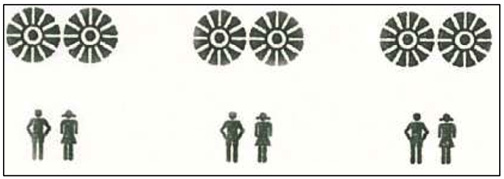
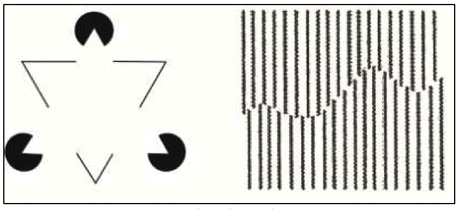
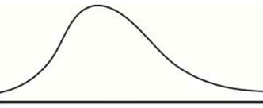
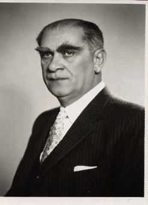

Y
yabancı kaygısı (stranger anxiety) Bebeklerin, bir yaşına dek yabancıların bulunduğu ortamlarda ağlama ya da bakıcıya sığınma biçiminde görülen korku tepkileri. Bkz. ayrılma kaygısı.
yabancılaşma (alienation) Kendi benliğinden, çevresinden, işinden, kendi emeğinin ürününden uzaklaşma, kendini, ortaya koyduğu verimlerinin bir nesnesi olarak görme. Yabancılaşma kavramını en geniş biçimde K. Marx açmıştır. Marx’a göre insan, özel mülkiyetin gelişimiyle birlikte, kendi emeği ile yarattığı ürünü artık, üretim süreci boyunca denetleyemiyor, üretim sürecinde makinenin bir parçası durumuna geliyor ve yaşamı boyunca, kendi yarattığı ürünleri elde etme savaşımı veriyor. S. Freud’la K. Marx’ı karşılaştıran E. Fromm, bu kişilerin yabancılaşmaya ilişkin görüşlerini ortaya koymuş ve yabancılaşmayla yalnızlaşmayı eş anlamda kullanmıştır. Ona göre, özgürleşerek bireyleşen insan, yalnızlık ve çaresizlik duygularını yaşıyor. O nedenle insan, özgürlüğünden kaçmak için savaşım veriyor. Bkz. gereksinimler aşama sırası; özgürlükten kaçış yaklaşımı (Marx ve Freud’a Göre Temel Gerçekler); varoluşçu psikoloji.
yabancı ortam tekniği (strange stuation technique) Ainswort’un 1-2 yaşlarındaki çocuklarda bağlanmanın niteliğini incelemek için geliştirdiği deneysel bir yöntem. Bu yöntemde küçük çocuklar, her biri duygusal bakımdan biraz daha fazla stres yaratan bir dizi yabancı ortama bırakılıyor ve çocukların duygusal tepkileri gözlemleniyor. Örneğin, çocuk önce en az gerilim yaratan ortam olarak, annesiyle baş başa oyun oynamaya bırakılıyor. Orta derecede gerilim yaratan ortam olarak, anne ile çocuk oyun oynarken o ortama bir yabancı giriyor. En fazla gerilimli çevre olarak da anne odadan ayrılıyor ve çocuk, odada yabancıyla baş başa bırakılıyor. Bkz. anne yoksunluğu sendromu.
yadsıma (denial) Acıdan korunmanın en ilkel yollarından biri olan savunma mekanizması; inkâr etme, kendini kandırma. Haz ilkesinin etkisinde olan gelişmemiş benlik, gerçeğin yalnızca haz vermesini istediği için, acı uyandıran gerçeklerden kaçınıyor. Kaçınamadığında ise, onları yadsıyor, görmüyor, duymuyor. Güzel, iyi, hoş, tatlı gerçeklerin düşlerini kuruyor. Sevgilisinden istemeden ayrılan kadın, onunla yeniden buluşmayı düşleyerek mutlu oluyor. Bu mekanizmayı kullanan kişi, duyduğu yoğun acıyı yok sayıyor. Bilindiği gibi, yaşamın içinde hem acı hem de hoş olan gerçekler bulunuyor. Bir yetişkinin, gerçeğin acı yönlerini, kurduğu düşlerle geçiştirip kendini az da olsa, tatsızlıklardan koruması zararsız; dahası, rahatlatıcı ve umut vericidir. Büyüklerin bu tür düşleri, çocukların oyunlarına benziyor. Oyun oynarken çocuk da gerçeğin acı yönlerini yadsıma eğilimi gösteriyor. Anne babasının gezmeye gideceklerini, kendisini götürmeyeceklerini anlayan çocuk, uslu uslu ve bir daha, bir daha “Siz gidin! Ben korkmam.” diyor. Ne kadar çok söylerse, söylediklerine kendini o kadar çok inandırmış oluyor. Korkudan ödü koparken kabadayı kesilen; kadınlardan utanan biri olduğunu saklamak için Don Juan geçinen; kötü bir olayı, daha önemlisi, bir ölümü unutmak için maça giden, geziye çıkan, eğlenceye koşan insanlara rastlanıyor. Çocuğunun ölümünü bir türlü kabullenemeyen anne, çocuğu yolculuğa çıkmış da gelecekmiş gibi, onun evdeki yerini, eşyalarını olduğu gibi koruyor. Oysa ölüm gerçeği yaşanmışsa ağlamak, yas tutmak doğaldır. Ölünün sağlıklı yakınları, acılarını yadsımak yerine, yas tutuyorlar; bu, doğal bir davranıştır. Yeter ki o, süreğen çöküntüye yol açan çözülmemiş yasa dönüştürülmesin. Şizofrenili hastanın ruhsal belirtileri, bilinçdışı yadsımanın en iyi örnekleridir. Şizofrenilide dış gerçeklerin yerini, onun iç gerçekleri almıştır. Çünkü güçsüz bir benlik, gerçeklerin yol açtığı acıdan kurtulmak için, gerçekleri yadsımaktan başka çare bulamamıştır. Hastabakıcı, şizofrenilinin teyzesi; kapıdaki yabancı, ilk kocasıdır; kendisi bir peygamber; hastane onun evi; şu adamlar da gizli polistir. Bir yadsıma biçimi de olumsuzlaştırmaktır. Şu anlatımlar, bu tür yadsımaları dile getiriyor: Şu anda kendimi iyi hissediyorum sayılmaz. Az fena değil. Rüyamda bir adam gördüm; ama babam değildi. Pencerede çikolata yiyen kızı görünce içim eridi. Apartmanın kapısından dalıp kızla sevişmeyi aklımdan bile geçirmedim.
yağmalama (Rowdyism) Gösteri olayları sırasında görülen bireyler arası şiddet ya da eşya, işyeri ve benzerlerinin kırım ve yıkımı.
ya hep ya hiç ilkesi (all-or-none principle) 1. Bir nörondaki eylem gizilgücünün bir kez oluşmasından sonra nöronun ya tam güçle tetiklenmesi ya da hiç tetiklenmemesi. Bu durum, sinir dürtüsünün gücünün, uyarımın gücüne bağlı olmadığını gösteriyor. Sinir hücresinin tam kapasiteyle tetiklenmesi için uyarım gücü eşiğini aşması gerekiyor. Örneğin, zayıf bir uyarım, zayıf bir dürtü yaratıyor. 2. Psikolojide davranış araştırmalarında da 1. açıklamadaki olgu için kullanılan bir ilke. Bir davranış uyarımı ya tam bir tepki yaratıyor ya da hiç tepki oluşturmuyor.
yakalama refleksi (grasping reflex) Yeni doğan çocukların, ilk 6 ay içinde el ayaları uyarılınca parmaklarını istemdışı kapamaları refleksi; yakalama tepkesi. Bu aylarda çocuğun avuç içine dokunma ya da baskı yapma uyarımı, parmakların kapanmasına yol açıyor.
yakalama tepkesi Bkz. yakalama refleksi.
yakın akraba evliliği Bkz. evlilik.
yakın akraba ile aşk bağları (incestuous ties) E. Fromm’a göre, kişinin başkaları ve toplumla sağlıklı ilişki kurma yetisinin ketlenmesi ya da gelişmemesi durumunda annesine, ailesine ya da simgesel olarak onların yerine koyduklarına bağımlı kaldığını gösteren bağlar.
yakın akraba ile sevişme (incest) Yakın kan bağı taşıyanlar arasında yasayla ya da gelenekle yasaklanmış olan cinsel ilişki; ensest tabusu, hısımla sevişme, yasak aşk. Yasak aşka bağlı akrabalık derecesi toplumdan topluma değişse de hemen bütün kültürlerde yasak aşk kavramı vardır. Yasak aşkın kapsamı yasayla belirlense de kardeş–kardeş, baba–kız, anne–oğul ilişkisi, hemen bütün kültürlerde yasak edilmiştir. Kimi ülkelerde çocuğun 16 yaşından küçük olması durumunda konu, yasak aşk olarak değil, çocuk sömürüsü (çocuk istismarı) sayılıyor. Yasak aşkın en sık görüleni baba–kız ilişkisidir. Bu tür olaylarda çoğu kez bedensel ve toplumsal açıdan daha güçlü olan babanın, ağabeyin, zayıf olanı ilişkiye zorladığı görülüyor. Bu ilişki, kız çocuğu üzerinde travmatik (derin, sarsıcı, zedeleyici, örseleyici) ruhsal etkiler bırakıyor. Bkz. yakın akraba ile aşk bağları; yakın akraba ile sevişme düşlemi; yakın akraba ile sevişme engeli; yakın akraba ile sevişme yasağı.
yakın akraba ile sevişme düşlemi (incest fantasy) Psikanalize göre, çocuğun karşı cinsten anne babasıyla cinsel ilişki kurma isteği. Bu istek, düşlerde ve düşlemlerde ortaya çıkıyor ve erkek çocukların anneye yönelik mastürbasyon etkinliklerinde özellikle yaygınlık gösteriyor. Bu ise iğdiş edilme kaygılarının güçlenmesine yol açıyor. Bkz. Oedipus karmaşası; iğdişlik karmaşası.
yakın akraba ile sevişme engeli (incest barrier) Psikanalize göre, yasak aşk yönelimli dürtü ve düşlemlere karşı, gizil dönemde geliştirilen benlik savunmaları. Toplumsal yasaların ve geleneklerin içe yansıtılmasının sonucu olan bu engel, kişinin libidosunu kendi anne babasından kurtararak dış nesnelere yöneltmesine olanak sağlıyor.
yakın akraba ile sevişme yasağı (incest taboo) Bir kültürde yakın akraba olan kişiler arasındaki cinsel ilişki yasağı; ensest tabu. Yakın geçmişte, bu yasağı açıklayan kalıtımsal, toplumsal ve psikanalitik kuramlar geliştirilmiştir. Örneğin, biyolojik yaklaşım, bu tabunun uyumsuz, hastalıklı genlerin toplumda çoğalmasını ve bunun sonucu olarak türsel yozlaşmayı önlemeyi hedeflediğini savunuyor. Toplumsal yaklaşıma göre yasak aşk, çocuğu, hazır olmadığı bir çağda bir yetişkin statüsüne sokuyor ve onun toplumsallaşma sürecinde bir sapma yaratıyor. Ayrıca yetişkinin anne babalık statüsündeki yapısal toplumsal gücü, kendi amaçları yönünde kötüye kullanılıyor ve yasak aşk, aile içindeki otorite ilişkilerinde çarpıklığa yol açıyor. Fredud’a göre ise aşk tabusu, ilk baba katline karşı bir tepki anlamı taşıyor. Bu tabu, babalarını katlederek evdeki kadınlara el koyan erkeklerin, bu felaketin bir gün kendi başlarına da gelebileceği korkusuyla koydukları yasaktır. Bkz. yakın akraba ile sevişme.
yakın bellek (immediate memory) Çok kısa bir süre önce öğrenilmiş olanı anımsama.
yakından uzağa gelişim (proximodistal development) Vücudun merkeze yakın bölümlerinin uç bölümlerinden daha önce gelişimi. Örneğin, bebekler, omuzlarını denetlemeyi el ve parmak hareketlerinin denetiminden önce öğreniyorlar.
yakın dostluk ve arkadaşlık Bkz. insanın sekiz çağı ((6)Yalnız Kalmaya Karşı Yakınlaşma Duygusunun Gelişimi).
yakın etki (near effect) 1. Golstein’e göre, yersel yakın etki: Uyaranın uygulandığı noktaya olan uzaklığına göre, ilişkili sinir sisteminin uyarılma derecesi. 2. İşlevsel yakın etki: İlişkili sinir bölgesine uygun düşüp düşmemesi açısından bir uyaranın tetikleyebildiği uyarma gücü.
yakın gelişim zonu (zone of proximal development) Kişinin düzeyinin hemen üstündeki gelişim düzeyi. Rus psikolog Lev Vygotsky’e göre, öğrenmeyi destekleyen çevre. Yakın gelişim zonu, çocuğun kendi başına davranmasıyla gerçekleşen gelişim düzeyi ile daha bilgili olan erişkinlerle etkileşimi sonucu gerçekleşebilecek gelişim düzeyi arasındaki farkı gösteriyor.
yakınlaşma duygusunun gelişimi Bkz. insanın sekiz çağı (6)Yalnız Kalmaya Karşı Yakınlaşma Duygusunun Gelişimi).
yakınlığı koruyucu davranışlar Bkz. bağlanma.
yakınlık (affiliation) İlişki kurma gereksinimi; insanlarla karşılıklı bağlılığa, dostluğa, arkadaşlığa ve sevgiye dayalı ilişkiler kurmaya yönelik temel, toplumsal bir dürtü. Bkz. insanın sekiz çağı ((6) Yalnız Kalmaya Karşı Yakınlaşma Duygusunun Gelişimi); yakınlık davranışı; yakınlık gereksinimi; yakınlık ilkesi; yakınlık dürtüsü; yakınlık yasası.
yakınlık davranışı (affiliative behavior) İnsanlar arasındaki yakınlaşmayı kolaylaştıran davranışlar.
yakınlık gereksinimi (need for affiliation) H. Murray’a göre, dostluk kurma, güç desteği, yakınlık, arkadaşlık ve benzeri gereksinimler.
yakınlık ilkesi (proximity principle) 1. Yakınlık yasası. 2. Sosyal psikolojide, insanların birbirine bedensel anlamda yakın oluşlarının, birbirinden hoşlanmalarına yol açan bir etken olduğu savı.
yakınlık dürtüsü (affiliative drive) Dostluk, bağlılık, başkalarıyla güvene dayanan ilişkiler kurma dürtüsü; örgütlenme, toplumsal birlikteliklerden zevk alma eğilimi. Yakınlık, duygusal güvenliğin temel dayanağı olarak görülüyor. Bunun eksikliği, insanların çoğunda yitiklik, kaygı, engellenmişlik duyguları yaratıyor. Normal bir insanda yalnızlık duygusundan daha olumsuz bir duygunun olmadığı söylenebilir. Bkz. yakınlık.
yakınlık yasası (law of proximity) Bir Gestalt düzenleme yasası. Buna göre, birbirine en yakın olan öğeler, şekilde görüldüğü gibi, nitelik açısından farklı olsalar bile aynı gruba aitmiş gibi algılınıyorlar.

Yakınlık Yasası
yakın nedensellik (proximate causation) Davranışı etkileyen o anki çevresel olaylar ya da koşullar; davranışın o anki metabolik, fizyolojik, hücresel, çevresel, iklimsel ve benzeri etkenlerle açıklanması.
yakın tepki (proximal response) Organizmanın içinde ya da sınırında gerçekleşen kas ya da salgı bezi tepkisi gibi tepkiler. Bkz. uzak tepki.
yakın uyarıcı (proximal stimuly) Işık gibi doğrudan duyu alıcılarını etkileyen fiziksel enerjiler. Bkz. uzak uyarıcılar.
yaklaşım (approach) Bir olayı, bir konuyu ya da bir sorunu, temel noktalarda benzerlerinden farklılıklar gösteren; ancak kendi içinde tutarlılığı olan ele alış, değerlendiriş, anlamlandırış ve yorumlayış biçimi.
yaklaşma eğimi (approach gradient) 1. Bir tepkinin gücü ile geçmişte bu tepkiye bağlı verilen pekiştirici uyarıcının bu tepkiye olan zaman ve yer uzaklığı arasındaki işlevsel ilişki. Pekiştirici uyarıcıya yaklaştıkça, çoğu durumda tepki de güç kazanıyor. 2. Belli bir pekiştirici uyarıcının, belli bir tepki üzerindeki pekiştirici etkisi ile tepkinin ve uyarıcının oluşunun zaman aralığı arasında bir ilişki bulunduğu varsayımı.
yaklaşma-kaçınma çatışması Bkz. içgüdü kuramı (Çatışma).
yaklaşma tepkisi ( approach response) Bir nesneye, hedefe ve benzerlerine yaklaşma davranışı. Bu davranış, fiziksel olabileceği gibi bir nesneyi, düşünceyi ve benzerlerini düşünmenin ya da duyumsamanın bir yolu olarak bilişsel, duygusal bir davranış da olabilir.
yaklaşma-yaklaşma çatışması Bkz. içgüdü kuramı (Çatışma).
yaklaştırıcı mekân (sociopetal space) Bireyler arası etkileşimi ve yakınlaşmayı özendirmek için tasarlanan kafe, restoran, bar gibi çevreler. Bkz. uzaklaştırıcı mekân.
yakma taşkınlığı (pyromania) Özellikle kimi yapıları ateşe verme konusundaki önlenemeyen zorunlu istek.
yalan (lying, lie, falsehood) Gerçek olmadığının bilinmesine karşın, aldatmak amacıyla, doğru diye söylenen uydurma, asılsız söz, haber ya da ileri sürülen sav. Ancak, çocuğun söylediği her yalan, bu tanıma girmediği için, davranış bozukluğu olarak nitelenmemelidir. Çocuğun içinde bulunduğu yaşın gelişim gerçeğinin gereği olan abartılı konuşmaları; bir özlemini dile getirmek amacıyla anlattığı gerçekdışı olay ya da olgular yalan kapsamında düşünülmemelidir. Çocuk o yaşlarda daha düşle gerçeği birbirinden ayıramıyor. Çocuğun korktuğu, zorda kaldığı, sıkıştığı için söylediklerini; kurnazca bir yaklaşımla yalanı kullanıp, giriştiği denemelerle yetişkinlerin eğilimlerini anlamak istemesini de yalan kapsamı dışında değerlendirmek gerekiyor. Bunlar “masum” yalanlardır. Gerçeklik duygusunu geliştirmede, zihinsel ve ruhsal olgunlaşmada geri kalmış çocuk ve ergenler de yalan söyleyebiliyor. Onun için, anne babalar ve öğretmenler, çocuk ve ergenin söylediği yalanın kaynağını araştırmadan, onları yalancılıkla suçlamaktan kaçınmalıdırlar. Çocuk ve ergeni güvenmeme, korkma, utanma, anne babanın yalan söylediğine tanık olma gibi nedenler de yalan söylemeye yöneltebiliyor. Çocuğuna kendisiyle görüşmek üzere kapısını çalan kişiye “Evde yok.” dedirten babanın, çocuğunun da yakın ve uzak gelecekte yalan söylama olasılığı vardır. Anneyle babanın birbirine yalan söylediklerine tanık olunca da çocuk ve genç, doğrulukla, dürüstlükle tanışmada ve bunları içselleştirmede güçlük çekiyor; ileri yaşlarda topluma karşı davranışlarında, bu yerleşmiş yalanı vazgeçilmez bir araç olarak kullanıyor ve suça sapıyor. Çocuk ve ergende, giderek yetişkinde yalancılığı önlemek için alınabilecek en iyi önlem, özellikle anne babanın, çocukla güvene dayalı, sıcak, dürüst ilişkiler kurup sürdürmesidir. Çocuğu korkutarak, utandırarak eğitmeye kalkmak gibi uygulamalardan uzak durulmalıdır. Baskı yapmayan, korkutmayan, gözdağı vermeyen, anlayan, içten seven, yalandan dolandan uzak anne babanın çocukları, ilerde de kolay kolay yalan söylemiyorlar.
yalancı anı (pseudomemory) Gerçekliği olmayan; ancak, kişinin gerçek olduğuna inandığı sahte ya da kuşkulu anılar. Bkz. sahte anı sendromu.
yalancı bunama (pseudodementia) Organsal beyin işlevsizliğine dayanmayan; çoğunlukla depresyondan kaynaklanan ve bunama belirtilerine benzer bilişsel belirtilerle ortaya çıkan geçici bir durum; düzmece hastalık.
yalancı dahilik (pseudoprodigy) Çoğunlukla erken yaşta ve aşırı hırslı anne babaların ya da öğretmenlerin verdiği aşırı eğitimin sonucu olarak yüksek bir beceri ya da bilgi kazanan kişinin durumu.
yalancı depresyon (pseudodepression) Ön lop doku bozukluğu gibi durumlarda belirip duyumsamazlık, kayıtsızlık, inisiyatif yitimi gibi belirgin belirtiler gösteren; ancak, kişinin gerçek bir depresyon yaşamadığı bir kişilik durumu.
yalancı duygu (pseudoesthesia) Duygu yanılsaması. Örneğin, olmayan (kesik) parmaklarda karıncalanma duygusu duymak gibi. Bkz. hayalet bacak.
yalancı gebelik (pseudocyesis) Gebe olma inancı ve karnın büyümesi, göğüslerin şişmesi, sancılanma gibi gebeliğe özgü belirtilerle ortaya çıkan somatoform bozukluk.
yalancı gereksinim (quasi-need) Bedenden kaynaklanmayan; daha çok istek ya da amaçtan doğan ve böylece amaca yönelik davranışları doğuran gerginlik durumu.
yalancı gerilik (pseudoretardation) Doğuştan zihinsel engellerden çok, olumsuz kültürel ve ruhsal koşulların ortaya çıkardığı zihinsel gelişim geriliği. Algısal engeller, annesiz büyüme, zihinsel yoksunlaşma, ağır duygusal bozukluklar, bu etkenler arasında yer alıyor.
yalancı hallüsinasyon Bkz. yalancı sanrı.
yalancı karşılıklılık (pseudomutuality) Yüzeyde karşılıklılık, açıklık ve anlayış görüntüsü veren; ama gerçekte katı, kişiliksizleştirici olan bir aile ilişkisi. Şizofrenik ilişkilerde bunun sıklıkla gözlemlendiği, araştırmalarla saptanmıştır.
yalancı kişilik (pseudo personality) Kişinin kendisine ilişkin gerçekleri başkalarından gizlemek için uydurduğu bir kurgusal kişlik. Yalancı kişilik, genellikle bir kişilik savunmasına dönüşüyor ve tedavide de böyle değerlendiriliyor.
yalancı koşullama (pseudoconditioning) Yansız bir uyarıcıyla yeniden, yeniden karşılaştırma sonucu, bir tepkinin güçlendirilmesi. Bu uygulamada gerçekte uyarıcı ile davranış eşlenmemiş ve herhangi bir öğrenme gerçekleşmemiştir. Koşullamanın, yansız uyarıcıyla organizmanın sürekli karşılaşması sonucu duyarlılaşmasından kaynaklandığı düşünülüyor.
yalancılık hastalığı (mitomania, patologicallying) 1. Kişinin, ruhsal nedenlerle gerçekleri değiştirme ve çarpıtmayı alışkanlık durumuna getirmesi; mitomani. 2. İmgelemde yaşanan olağanüstü serüvenleri gerçekmiş gibi anlatma tutkusu.
yalancı nöbet (pseudoseizure) Tepkisiz bakışlar, genel katılaşma ve ritmik titremeler, vücudun yalnızca birkaç bölümünün oynaması, bilinç değişiklikleri gibi belirtileriyle sara nöbetine benzeyen; ancak, organik bir dayanağı bulunmayan ve örneğin, EEG değerleri gerçek sara nöbetininkine uymayan ruhsal kökenli bir nöbet. Araştırmalar, bunların birçoğunun, bilinçdışı duygusal yükün dışavurumunu sağlayan kendinden geçme (trans) olayları; benlik durumundaki çözülmeli değişimler ya da çözülmeli durumlar olduğunu gösteriyor. Bu hastalarda cinsel ve bedensel sömürü oranının yüksek olduğu da araştırmaların ortaya koyduğu bir gerçektir.
yalancı psikoloji (pseudopsychology) El falı, biyoritm gibi bilimsel olmayan ya da sahtecilik yöntemlerini kullanan psikoloji yaklaşımı; yalancı ruhbilim.
yalancı psikopati (Pseudopsychopathy) Ön lop doku bozukluğu gibi durumlarda belirip çocuksu davranışlar, dürtüsellik ve diğer hastalıklı davranışlar sergileyen; ancak, bunlara denk düşen ruhsal ya da duygusal bileşenleri içermeyen bir durum.
yalancı psikopatik şizofreni (pseudopsychopatic schizophrenia) Hastalık derecesinde yalan söyleme, cinsel sapma, şiddet eğilimi ya da benzeri denetimsiz davranışlar gibi toplumdışı eğilimlerle tanımlanan bir tür şizofreni.
yalancı ruhbilim Bkz. yalancı psikoloji.
yalancı sanrı (pseudo hallucination) Varlığı olmadığı halde öznel yaşamda yer alan, duyu organlarından gelen bir algıymış gibi görünen sanrı. Bu, içeriği bakımından gerçek izlenimlerle ilişkisi olmayıp, psikozda olduğu gibi insanı rahatsız etmeyen bir sanrıdır.
yalancı sevgi Bkz. sevgi.
yalancı şartlandırma Bkz. yalancı koşullama.
yalancı tanı (pseudodiagnosticity) Bir konuda kısa yoldan karar verirken insanın sıklıkla yeğlenen başlangıçtaki bir varsayımı korumaya ya da varsayımları çürütmekten çok, doğrulamaya eğilim göstermesi.
yalancı uykusuzluk (pseudoaddiction) Ağrıyla başa çıkmada yeterli teknikler uygulamayan kişilerin uykusuzluk yakınması.
yalancı zihinsel gerilik Bkz. uzun süreli anne yoksunluğu.
yalan makinesi (lie detector) Kişinin stresle ilişkilenen kaygı ve benzeri duygularıyla ortaya çıkan galvanik deri tepkilerini nabız, soluk alıp verme, kan basıncı gibi fizyolojik tepkilerini ölçerek yalan söyleyip söylemediğini belirlemeyi hedefleyen bir aygıt. Bu aygıt, örneğin, masum olmasına karşın suçlanmaktan korktuğu için heyecanlanan insanı da suçlu olarak gösterebiliyor. Olayların büyük bölümünde; normal, suça bulaşmamış, zayıf insanlarda doğru sonuçlar verse de suçu iş edinmiş, psikopat gibi kolaylıkla heyecanlanmayan ya da duygularını denetleyebilen kişilerle zekâ geriliği olan kişilerde çok yanıltıcı sonuçlar verdiği için artık kullanılmıyor. Bkz. poligraf.
yalan söyleme Bkz. çocuk ve ergende görülen uyumsuzluklar; eğitim güçlükleri.
Yale tutum değişikliği yaklaşımı (Yale Attitude Change Approach) İnsanların ikna iletileriyle tutumlarını değiştirme olasılığının en yüksek olduğu koşulları inceleme yaklaşımı. Bu doğrultuda araştırma yapanlar, “Kim kime ne söyledi?” üzerinde duruyorlar. Bu, iletinin kaynağı, yapısı ile alıcının yapısı üzerinde durmak demektir.
yalıtım (isolation) Olayların, düşüncelerin, duyguların arasına aralık, kopukluk konularak gerçekleştirilen bir savunma mekanizması; izolasyon. Kişiler bu mekanizmayı genellikle, düşüncelerini duygularından ayırma biçiminde kullanıyorlar. Kişi, yalnızca düşünüyor; düşünceyle birlikte oluşan duyguyu duyumsamıyor; o duyguyu yok sayıyor. Bu savunma yolu davranışları, olayları, yerleri, zamanları ayırma biçiminde de kullanılıyor. Örneğin, söylendiğinde kendisinde ayıp duygusu uyandıran, kaygı yaratan bir sözcüğü söylemek zorunda kalan kişi, onun yerine yabancı karşılığını söyleyerek, o yaşamak istemediği duyguyu yaşamaktan kurtulmuş ve sözcüğün yalnızca düşünce boyutuyla ilgilenmiş oluyor. Eş anlamlılarının yerine “merkep, dışkı, tuvalete gitme”; işeme yerine “çiş yapma” diyor. Bu mekanizmayı cinsel yaşamlarında da kullanan karı koca, sevişmeyi renklendiren oyunlardan kendilerini uzak tutuyor; sevişmeyi, tekdüze bir eyleme dönüştürüyor. Bu mekanizmayı özellikle takınaklı düşünceleri ve zorlanımlı davranışları bulunanlar kullanıyorlar.
Yalnız Kalmaya Karşı Yakınlaşma Duygusunun Gelişimi. Bkz. insanın sekiz çağı (altıncı evre).
yalnızlaştırma Bkz. yalnız yaşama.
yalnızlık (isolation) Bir nesnenin bağlı olduğu coşkudan kopup ayrılması; kimi gerecin ortak bilinçdışından kopup bilince çıkması sonucu, kişinin benzerlerine karşı yabancılık geliştirmesi. Bkz analitik psikoloji; bütüncü kuram.
yalnızlık aptallığı (isolation-amentia) İlk çocukluk yıllarını, normal insan ilişkilerinden büyük ölçüde yoksun olarak geçirmekten doğan zekâ geriliği.
yalnızlık duygusu Bkz. insanın sekiz çağı ((6) Yalnız Kalmaya Karşı Yakınlık Duygusunun Gelişimi).
yalnızlık etkisi (isolation effect) Dizi biçimindeki gerecin bellenmesinde bir maddenin büyük punto ile ya da başka renkte basılmasının bellemeyi kolaylaştırıcı etkisi.
yalnızlık mekanizması (isolation mechanism) Freud’a göre, kesin olarak tedirgin edici kişisel bir sorun ya da karmaşa ile bağlantı kurulmasına yol açan bir söz ya da hareketten sonra bütün ve kısa bir hareketsizlik dönemine girme.
yalnızlık ve güçsüzlük duygusu Bkz. özgürlükten kaçış yaklaşımı.
yalnız yaşama (isolation) 1. Keşişler ve araştırmacılar gibi işten, ilgilerden kendi isteği ile elini eteğini çekme eğilimi ya da bu tür bir yaşam. 2. Tutsak olma, karantinaya alınma, bir yere zorunlu kapanma gibi bir olaydan sonra, kendi isteği dışında yalnız kalma; ayırma. 3. Çekingenlik, kara sevda, gençlik bunalımı gibi, yapıdan ya da bir hastalıktan ileri gelen bir davranış. 4. Koşullamayı ortadan kaldırma ya da saldırgan bir hareketten, hastalık yayılmasından korkma gibi, kişi ile yakınlarını koruma amacıyla uygulanan bir tedavi yöntemi. 5. Eğitsel ceza gibi, başkaldırıcı ya da duygusal bir durumu önleyip işi tavsatma, eğitme kolaylığı.
yanal baskınlık (lateral dominance) Birçok işlevin yürütülmesinde beynin bir yarımküresinin, öbürüne baskın çıkması ve sonuçta, sağlaklıkta, solaklıkta olduğu gibi vücudun bir yanının kullanımının yeğlenmesi. Bkz. beyin.
yanal ketleme (lateral inhibition) Bir sinir hücresindeki tepkinin, komşu sinir hücrelerinin tepkilerince bastırılarak ilgili duyu eşiğinin yükseltilmesi. Hemen her türlü duyu sisteminin bir özelliği olan yanal ketleme, tek biçimli uyarımların filtrelenmesine hizmet ediyor. Örneğin, burnun zamanla kokuya alışmasının altında bu mekanizma yatıyor. Aydınlık ile karanlık arasındaki sınırın (bir nesnenin kenarlarının) keskinleşmesine ve yersel değişikliklerin vurgulanmasına hizmet eden de yanal ketlemedir.
yanallaşma (lateralization) 1. Beynin iki yarısının, çeşitli işlevler konusunda uzmanlaşması, öbürüne ağır basması. Bkz. yanallık; Woda testi. 2. Sesin, sağ-sol boyutundaki konumunun belirlenmesi.
yanallık (laterality) 1. El, ayak, göz, kulak gibi organların işlevlerinde vücudun belli bir yanını kullanmayı yeğleme eğilimi. Örneğin, iş yapmada sağ elini kullanma, telefonla konuşurken sol kulakla dinleme gibi. Bu eğilim, beynin bir yarısının, belli işlevleri yerine getirmede öbür yarısına baskın çıkmasından kaynaklanıyor. Örneğin, beynin sol yarısı, genellikle konuşma, dil, sorun çözme, çözümsel ve ussal düşünmede uzmanlaşıyor. Beynin sağ yarısı ise sentez yapma, devimsel beceriler, yön duygusu kazanma; resim, müzik gibi sanatsal yetenekler geliştirme konularında uzmanlaşıyor. Bu, araştırmalarla doğrulanmıştır. Kimi otoriteler, beynimizin sol yarısına “insan yanımız”; sağ yarısına da “hayvan yanımız” diyorlar. Bkz. yanal baskınlık; yanallaşma. 2. Sağ-sol ayrımı yapabilme, vücudun sağ-sol yanlarını birbirinden ayırt edebilme yetisi.
yanal sorunlar (laterality problems) Sağla solun birbirine karıştırılması. Kimi zaman belli bir eli kullanmanın yeğlenmemiş olması için de kullanılıyor.
yan anlam (connotation) Sözcüklerin yalnızca kavramsal tanımlarının ötesinde taşıdıkları toplumsal, ruhsal ve fiziksel anlamları. Örneğin, “otel “ve “han” sözcükleri, ücret karşılığı geceleri konaklanan yerler olmaları nedeniyle işlevsel tanımları açısından birbirine benziyor. Ancak, “han”sözcüğü, otelden farklı olarak, eskiyi, çağı geçmişliği de çağrıştırıyor.
yanay çizelgesi (profile chart) Bireyin türlü ölçeklerden elde ettiği sonuçları, sayı yönünden karşılaştırmayı sağlayan çizelge.
yan dil (paralanguage) Dilin anlamsal, yapısal ve benzeri özelliklerinde bulunmayan; ancak, söyleyişe eşlik eden ve bir anlam aktarabilen ses tonu, ses niteliği, mimikler gibi kişiye özgü yan öğeler. Kimi dilbilimciler, bu özellikleri dilsel iletişimin kapsam ve çözümlenmesinin dışında üst dil olarak değerlendirirken, kimileri bunları kinezik duruş ve mimikle (kinezikle) ya da fonololojiyle (prosodik özelliklerle) ilişkilendiriyor.
yangı (inflammation) Mikroplara karşı koymak üzere vücudun herhangi bir yerine fazla kan hücumu yüzünden orada şişkinlik, kırmızılık, ateş ve ağrı olması; iltihap.
yangın çıkarma Bkz. çocuk ve ergende görülen uyumsuzluklar.
yanılgı (fallacy) Doğru gibi görünüp gerçekte yanlış olan bir sonuca yol açan mantık yürütme. Yanlış yürütülen bir mantıkla doğru bir sonuca varma olanağı yoktur.
yanılgı çözümlemesi (error analysis) Belli bir ödevi yerine getirirken ya da belli bir etkinlikte bulunurken yanılgıların nerede, nasıl ve niçin gerçekleştiğini araştırma. Bu çözümlemeler yardımıyla öğrencilere o tür yanılgılara düşmemeleri öğretilmiş oluyor.
yanılma Bkz. yanılgı.
yanılsama (illusion) Yeterince net olmamaları ya da çeşitli bilişsel-duygusal eğilimler nedeniyle gerçek duyusal uyarıcıların yanlış yorumlanması; algı ya da bellek çarpıklığı; ilüzyon. Yanılsama nedeniyle örneğin, karanlıkta sallanan bir çalı, kişiyi izleyen bir düşman gibi algılanıyor; raylar uzaktan bitişikmiş gibi görünüyor; birkaç dakikalık tedirgin bekleyiş, saatler gibi uzun geliyor; sinemada belli bir hızda dönen tank paletleri ya da araba tekerlekleri, tersine dönüyormuş gibi algılanıyor. Yanılsamalar, günlük yaşamda olduğu gibi, sabuklamada, şizofrenide ve çeşitli ilaçların kullanımında da ortaya çıkabiliyor. Yanılsama ile kuruntu ve sanrılar birbirine karıştırılmamalıdır. Yanılsama, gerçekte var olan uyarıcıların yanlış yorumlanması sonucu ortaya çıkıyor ve belli kural ya da yasalarla açıklanabiliyor. Buna göre, belli koşullar altında yanılsama kaçınılmazdır ve nesneldir. Yaşanılan şeyin bir yanılsama olduğunun bilinmesi, bu algı yanılgısını ortadan kaldırmıyor. Bkz. bilişsel geçirgenlik. Sanrılar ise kişiye özgüdür; gerçek uyarıcılardan değil; iç ruhsal süreçlerden kaynaklanıyor. Kuruntular ise algısal bir anlam taşımıyor. Bunlar gerçeklik temeli olmayan öznel inançlardır. Bkz. Ehrenstein yanılsaması; Hering yanılsaması; kafe duvarı; Müler-Lyer yanılsamaları; Ponzo yanılsaması.
yanılsamalı bağlılaşım Bkz. yanılsamalı korelasyon.
yanılsamalı kenarlar (illusory contours) Fiziksel uyarıcıda gerçekte bulunmayan kenarların, gerçek nesnelerin kenarı gibi algılanması. Bu yanılsama, algı sisteminin, karmaşık uyarıcıyı basitleştirerek ondan, anlamlı bir bütüm oluşturma; Prüagnanz eğiliminden kaynaklanıyor.

Yanılsamalı Kenarlar
yanılsamalı korelasyon (illusory correlation) İki ayrı olgu arasında bir ilişki olmamasına karşın, bir ilişki varmış gibi algılanması ya da var olan zayıf bir ilişkinin abartılması; yanılsamalı bağlılaşım Böyle ilişki algıları genellikle sterotipler ve önyargıların oluşumunda ve sürdürülmesinde önemli bir etken oluyor.
yankı belleği (echoic memory) Ses bilgilerinin kaydedilmeden geçici olarak saklandığı düşünülen varsayımsal bir algı merkezi. Bu bellek, yüksek düzeyli işlem mekanizmalarının yararlı bilgileri çıkarması için gereksinim duyulan süre boyunca duyusal bilgileri saklama işlevi görüyor. Görsel modalitedeki ikonik bellek karşılığı olan bu bellek, birkaç saniyeden fazla sürmüyor. Bkz. duyu belleği.
yankıca (echolalia) Başka birinin kullandığı söz ya da tümceleri anlamsız olarak yankı gibi yineleme; ekolali.
yankı tepkisi (eco reaction) Konuşmayı yeni öğrenen çocukların, anlamının bilincinde olmadan anne babalarının söylediklerini yineleme çabaları.
yankıyla yön belirleme (echolocation) Büyük nesne ya da engellerden gelen ayak sesleri, trafik gürültüsü gibi yankılara dayanarak bu nesnelerin yönünü ve uzaklığını belirleyebilme yetisi; yüzle görme. Özellikle görme engellilerde çok gelişen bu yeti, yüksek frekanslı ses dalgaları yayarak nesnelerin yüzeyinden geri dönen bu ses dalgalarıyla yön ve uzaklık belirleyen yarasa görüşüne benziyor.
yanlılık (bias) 1. Yargıyı, değerlendirmeyi etkileyen; ama etkilememesi gereken bir eğilim; önyargı. 2. İstatistikte belli bir yöndeki hata; eksik ya da popülasyonu temsil etmeyen bir örneklemden elde edilen verilerin hatalı, yanıltıcı sonuç verme eğilimi; gözlemlenen sonucun, gerçek sonuçtan sapma eğilimi; araştırma ya da deneyin hatalı bir sonuç vermesine yol açan her türlü sistemli hata. 3. Kişilik testleri, zekâ testleri gibi testlerin, belli kişi ya da grupların öbürlerinden farklı bir sonuç vermesine yol açacak özellikler sergilemesi ve bu farklandırmanın, testin temel amacıyla ilgisi olmayan özelliklere dayanması.
yanlı örneklem (biased sample) Araştırma ya da deneyde örneklem olarak belli kişi, grup, olay ya da öğelerin öbürlerinden daha büyük bir şansa sahip olması sonucu elde edilen örneklemin, genelleme yapılması amaçlanan popülasyonu temsil eden özelliklerden yoksun olması. Bu durum, elde edilen sonucun popülasyona genelleştirilmesini olanaksızlaştırıyor.
yanlış bilgilendirme etkisi (misinformation effect) Bir olaya tanıklık edip bu konuda yanıltıcı bilgiler aldıktan sonra, bu yanıltıcı bilgileri olaya ilişkin anılarıyla bütünleştirme eğilimi.
yanlış inanç testleri (false belief tasks) Zekâ kuramı araştırmalarında çocukların inançlarla davranışlar arasındaki ilişkiyi gerçekten anlayıp anlamadığını; başkalarının gerçekliği nasıl algıladığını kavrayıp kavramadığını belirlemeyi amaçlayan bir dizi test.
yanlış negatif Bkz. yanlış olumsuz.
yanlış olumlu (falsepositive) Olumlu gibi görünen; ancak gerçek durumu yansıtmayan bir sonuç; gerçekte testin ölçtüğü özelliklere sahip olmayan; ama sahipmiş gibi sonuç veren. Örneğin, üniversiteye giriş sınavında, sınava dayanarak başarılı olması beklenen ve üniversiteyi kazanan; ancak başarılı olamayan bir öğrenci. Ya da gerçekte gebe olmayıp, gebelik testi gebeymiş gibi sonuç veren. Bkz. yanlış olumsuz.
yanlış olumsuz (false negative) Olumsuz gibi görünen; ancak gerçek durumu yansıtmayam bir sonuç; gerçekte testin ölçtüğü özelliklere sahip olmasına karşın, o özelliklere sahip değilmiş gibi sonuç veren. Örneğin, üniversiteye giriş sınavında, sınava dayanarak başarısız olması beklenen ve üniversiteyi kazanamayan; ancak, gerçekte bir üniversiteyi kazanmış olması durumunda başarılı olacak olan bir öğrenci. Ya da gerçekte gebe olup da gebelik testi, gebe değilmiş gibi sonuç veren. Bkz. yanlış olumlu.
yanlış pozitif Bkz. yanlış olumlu.
yanlış tepki (false reaction) Bir deneyde uyaran karşısında beklenen ve uygun olandan başka biçimde ortaya çıkan bir tepki.
yanlış yapma, başarısız olma korkusu Bkz. bilişsel öğrenme.
yan lop (parietal lobe) Beynin ön üst bölümünün iki yanında bulunan ve sıcaklık, dokunma, derinlik, büyüklük, yön, perspektif ve benzeri algıları, duyu uyarıcılarını yorumlama, dikkat, konuşma, yazma, bellek gibi işlevlerde ağırlıklı bir etken olan loplar. Sağ yanın hasar görmesi, yeni, hatta bilinen yerlerde yol bulmakta zorlanma gibi görsel-yersel kusurlara; sol yanın hasar görmesi ise sözlü ve yazılı anlatımı anlama yetisinin bozulmasına yol açıyor. Bkz beyin; loplar.
yan öğrenme Bkz. rastgele öğrenme.
yansıca (echopraxia) Başkalarının hareket ve davranışlarını anlamsız olarak yineleme.
yansılama Bkz. taklit.
yansımalı özdeşim Bkz. özdeşim.
yansıtıcı test (projective test) Kişinin, belirsiz, çok farklı biçimlerde yorumlanabilecek uyarımları kendi özellikleri, davranış eğilimleri, bilinçdışı korkuları, istekleri, düşlemleri, beklentileri ve başka eğilimlerine göre algılayıp yorumlayacağı ilkesine uygun olarak mürekkep lekeleri, belirsiz şekiller, eksik tümceler, oyun araçları gibi gereçlerle yürütülen ve bir ölçüde formatsız olan kişilik testlerinin ve klinikte tanı amaçlı test tekniklerinin ortak adı. Bu tür test tekniklerini standartlaştırma çabaları; Rorscach testi, tematik değerlendirme testi ve başka tekniklerde olduğu gibi, büyük ölçüde öznellik içermeleri, bilimsel geçerlik ve güvenirlikten yoksun olmaları gibi nedenlerle, yoğun eleştirilere uğrasalar da bunlardan önemli sonuçlar da elde ediliyor. Bkz. psikolojik testler.
yansıtıcı yöntem (projective technique) Belirli bir tepkiyi tetiklemeyecek nitelikteki örtülü ve türlü yorumlara elverişli durumlarda da uyaranlar karşısında kişinin yaptığı tepkileri yorumlayarak güdü, duygu, tutum gibi sürekli kişilik özelliklerini tanıma yöntemi. Bkz. yansıtıcı test.
yansıtımca Bkz. paranoya.
yansıtımca çıldırısı Bkz. paranoya.
yansıtımcalı Bkz. paranoid.
yansıtımcalı kişilik Bkz. paranoid kişilik bozukluğu.
yansıtımcalı usyarılım Bkz. paranoid şizofreni.
yansıtma (projection) Gerçeğin yeterince tanınmaması sonucu ortaya çıkan ilkel savunma mekanizması; projeksiyon. Bebeklik döneminin olağan savunma biçimi olan bu mekanizmaya gerçekleri değerlendiremeyen bir benliğe sahip olan yetişkinler de başvuruyorlar. Kendilerinde kaygı yaratan dürtülerini dıştaki bir varlığa, duruma yansıtarak, yaşadıkları kaygıyı dindirmeye çalışıyorlar. Yansıtma, paranoid hastaların bilinçdışı olarak kullandığı temel savunma biçimidir. Paranoid kişi, kendi bilinçdışındaki olumsuz, başkalarınca onaylanmayan isteklerin, başkalarına ait olduğunu ileri sürerek, bu isteklerin kendisinde yarattığı acıyı ortadan kaldırmaya çalışıyor. İçindeki saldırgan dürtüler nedeniyle benliğinde kaygı yaşayan kişi, saldırgan düşüncesini bu bilinçdışı mekanizma ile başkasına yansıtınca, geçici bir rahatlık sağlıyor. Örneğin, karısını yok etmek istediği için dayanılmaz bir suçluluk duyan koca, bu isteğini bastırıyor. Eyleme dönüşmesi yasak olan, olumsuz karşılanan bu istek daha sonra, suçlanılmayan bir düşünce biçiminde bilince çıkıyor: “Karım, beni zehirlemek istiyor. O nedenle artık onunla yaşayamam.” Bu durumda, onu kimse suçlamayacağı gibi, olayı duyanlar kendisine hak veriyor; eşini suçlu olarak görüyorlar. Herkesin namussuz, cinsel sapık, yalancı olduğunu öne sürenler, kendi içlerindekini çevrelerindekilere kusan kimselerdir. Herkes ahlaksız olunca, onlar temize çıkmış oluyorlar. Paranoid kişinin, hastalığına özgü bir yeteneği de vardır. Suçladığı kişinin, o var olduğunu öne sürdüğü eğilime alt yapı oluşturabilecek özellliklere sahip olduğunu duyumsuyor ve pireyi deve yaparak onları ortaya getiriyor. Eğer, karısının kendisini zehirleyeceğini ileri sürmüşse, karısının davranışlarında öldürme eğilimine tanık olmasa da itici bir tutumun, öfke duygusunun varlığını gözlemlemiştir Zaten herkeste, çocukluktan kalma, bastırılmış cinsel ya da saldırgan istek ve eğilim kırıntıları vardır. Paranoidin, bu devleştirme yeteneği, kendi bilinçdışını hem çok iyi kestirmesinden hem de bilmek istememesinden kaynaklanıyor. Kimi sağlıklı insanlar da bu savunmaya başvurabiliyor. Örneğin, sabah kalktığında kişinin tersliği üzerinde ise ona buna çatabiliyor; çevresindekileri azarlayabiliyor, suçlayabiliyor. Bu durumda ters olan onlar mıdır, yoksa bu suçlayan kişi mi? Bkz. paranoya; yansıtmalı değerlendirme; yansıtmalı oyun; yansıtmalı özdeşim.
yansıtmalı değerlendirme (reflected appraisal) Kişinin kendine ilişkin değerlendirmesini, başkalarının onu nasıl değerlendirdiklerine ilişkin algısına dayandırarak biçimlendirme.
yansıtmalı oyun (projective game) Çocuğun kendi seçtiği oyuncaklarla kurallarını kendisinin koyduğu oyunları oynayarak sorunlarını, kaygılarını ve düşlemlerini dışa vurmasını sağlayan bir tedavi tekniği. Bkz. oyun; oyunla tedavi.
yansıtmalı özdeşim (projective identification) Melanie Klein’in belirlediği ve aile dinamiği incelemeleri sonucunda varlığını ortaya koyduğu bir savunma mekanizması. Kimi çocuklar, kendi zihinlerinde geliştirdikleri anne baba özelliklerini kendi anne babalarına yansıtıyor, bu özellikleri onlarda varsayıp anne babalarıyla buna göre özdeşleşiyorlar. Örneğin, kendi annesinin, olduğundan daha güçlü olmasını isteyen çocuk, o özellikleri annesine yansıtarak, annesini öyle algılıyor ve onun bu yansıttığı özellikleriyle özdeşleşiyor. Aynı yansıtmalı özdeşim, babayla da gerçekleştirilebiliyor. Yansıtılan şey, benliğin ya da nesnenin kabul edilemez, acı verici, tehlikeli bir bölümü olabileceği gibi, değer verilen bir özelliği de olabiliyor. Ancak, basit yanstmadan farklı olarak burada kişi, yansıtılan şeyi tümüyle yadsımıyor. Kişi, kendi duygu ve dürtülerini fark ediyor; ancak bunları başkalarına yönelik akla, mantığa uygun tepkilere bağlıyor. Başlangıçta başkalarında olduğuna inandığı duyguları sıklıkla kamçılıyor; bu da ilk tepkinin kimden geldiğini netleştirmeyi zorlaştırıyor.
yansıtma testleri Bkz. yansıtıcı test.
yansız hata Bkz. rastgele hata.
yansız kestirim (unbiased estimate) Temsil yeteneği bulunan (yansız bir örnekleme dayalı olarak formüle edilen) bir kestirim; örneklem dağılımının ortalamasının, popülasyon ortalamasına eşit olması; tarafsız tahmin. Bkz. yansız varyans kestirimi.
yansız kestirim değeri (unbiased estimotor) Beklenen değeri, hesaplanan parametreye eşit olan istatistik.
yansızlaşma Bkz. ruhsal-cinsel gelişim kuramı.
yansızlaştırılmış ve bağlanmış enerji Bkz. yüceltme.
yansızlık 1. (neutrality) Özellikle çeki şmeli toplumsal konularda yan tutmama tutum ve durumu. Yansızlık nesnellik demek değildir. Nesnellik, mantıksal sonuçlara varmada öznel yargılardan uzak kalmak için kanıt sağlama anlamını taşıyor. Oysa yansızlık, yalnızca yan tutmamaktır. 2. (impartiality) Önceden verilmiş kararları göz önünde tutmadan, gerekli bütün veriler hesaba katılıncaya dek bu konu ya da soruna ilişkin yargısını sabırla erteleyen bir tutumu; tarafgir davranmama. Hem öğrenme hem de öğretme tutumu olan bu tutum, köklü kanıların ya da bağlılıkların bırakılmasını gerektirmiyor; ama bunların dürüstçe belirtilmesini ve yeniden gözden geçirilmesi isteğini gerektiriyor.
yansızlık ve değersizlik duygusu Bkz. insanın sekiz çağı (6) Yalnız Kalmaya Karşı Yakınlaşma Duygusunun Gelişimi).
yansız tahmin Bkz. yansız kestirim.
yansız varyans kestirimi (unbiased estimate of variance) Küçük bir örneklemde, aşırı yüksek ya da düşük puanların pek bulunmadığı; bunun da varyansın, olduğundan küçük çıkmasına neden olduğu varsayımı ile varyans hesabında denklemde N yerine N-I kullanılarak yapılan düzeltme; tarafsız varyans tahmini. Bkz. varyans analizi.
yapan-gözlemleyen etkisi Bkz. yapan-gözlemleyen önyargısı.
yapan-gözlemleyen önyargısı (actor-observer bias) Gözlemcilerin, kendi davranışlarını dış nedenlere (koşullara; başkalarının davranışlarını ise iç nedenlere (kişiliğe)) bağlama eğilimi. Bkz. ruh sağlığı (Ruh Sağlığı Yerinde Bir Kişinin Nitelikleri).
yapay (artifact) 1. Doğal olmayan, normalde vücutta bulunmayan. 2. Sıklıkla dışsal bir etkenden kaynaklanan ve gerçekliği yansıtmayan rastlantıya bağlı bir sonuç. Bkz. yapay ayıklama; yapaycılık; yapay sinir ağı; yapay yaşam; yapay zekâ.
yapay ayıklama (artificial selection) İstenen özellikleri taşıyan bitki ve hayvanların, bu özellikleri gelecek kuşaklarda da geliştirmek üzere insanlarca seçilerek çiftleştirilmesi ve üretilmesi; yapay seçme. Bkz. doğal ayıklama.
yapaycılık (artificialism) Piaget’nin işlemsellik öncesi evrede bulunan çocuklara özgü benmerkezcil düşünme biçiminin tipik özelliği olarak değerlendirdiği dünyayı ve olayları insanların yarattığını; buna bağlı olarak güneşin doğuşu, yağmur, rüzgâr gibi doğal olayların insan yapımı olduğunu düşünme eğilimini karşılamak üzere kullandığı terim.
yapay seçme Bkz. yapay ayıklama.
yapay sinir ağı (artificial neural network (ANN)) Aralarındaki ilişki nedeniyle karmaşık şeyler yapabilen basit ağ birimleri. Öğrenme konusunda, geleneksel, simgesel yaklaşımlardan daha beyinsel olan ve her biri farklı öğrenme kurallarını içeren olası birçok modele sahip bulunan bir inceleme yaklaşımı. Bkz. bağlantıcılık; sinir ağı.
yapay yaşam (artificial life) Biyolojik olguların dayandığı temel dinamik ilkeleri soyutlamaya çalışarak ve bu dinamikleri, bilgisayarlar gibi başka fiziksel ortamlarda yeniden üretip yeni deneysel manipülasyon ve deneme türleri için kullanarak yaşamı anlamaya çalışan bir inceleme dalı.
yapay zekâ (TOTE) “Test-Operate-Test-Exit’in (Test et-İşlem yap-Test et-Çık’ın) kısaltılmışı. Felsefe, psikoloji, nöroloji, bilgisayar mühendisliği, robot bilimi ve linguistik gibi birçok alanı içine alan ve algı, öğrenme, kavrama, düşünme, akıl yürütme, sezgi ve tasarlama gibi insan zekâsına özgü davranışlar gösteren bilgisayar yazılımı, robot tasarımı gibi konuları inceleyen bilimsel alan; bu biçimde ortaya çıkan ürün. Bilişsel algoritmaların çoğunda bulunduğuna inanılan tipik düzenleme. Bu düzenlemede “Test et” bölümleri, iki farklı modalite yaşantısı arasında bir test yaparken “İşlem yap” bölümü, ilk testin sonucuna dayanan işlemleri yürütüyor; “Çık” bölümü ise gerekli koşulun sağlanması durumunda işlemleri bitiriyor, başka bir işlem yapıyor ve test modundan çıkıyor. Örneğin, dünden kalan çorbanın tadına bakan kişi (test), çorbanın soğuk olduğunu görüyor ve çorbayı yanan ocağa koyuyor (işlem); arada bir ısınıp ısınmadığını denetliyor ve yeterince ısındığı kanısına varınca (test) ocağı kapatıyor (Çıkış). Bu model, davranışın, geridenetim yoluyla sonraki davranışları etkileyen bir davranış modeli olarak görülüyor. İlk yapay zekâ araştırmalarında insanın bilişsel modellerinden kaçınılırken, beynin çalışmasına ilişkin teoremlere dayanan bağlantıcılık geliştikten sonra bu yönelim de değişti. A. M. Turing, kendisini oluşturan parçalardan çok daha karmaşık bir makine tasarlanabileceğini kanıtladı. Günümüzdeki satranç programlarından kimileri, insan satranççıların çoğundan daha iyi oynayabiliyor. Günümüzde bilgisayar mühendisleri ile biliş psikologları, yakın bir işbirliği içinde çalışıyorlar. Yapay zekâ yaklaşımının biliş psikolojisinde algı, bellek, düş gücü, düşünme ve sorun çözme gibi çok çeşitli uygulama alanları vardır. Bu iki alandan birinde oluşturulan bir model ya da elde edilen bulgular, öbüründe de rahatlıkla uygulanabiliyor. Kimi otoriteler, yapay zekânın, insanın düşünme becerisiyle karşılartırılamayacağını savunarak yapay zekâ modellerine karşı çıkıyorlar. Yapay zekâyı savunanlara yönelik eleştirilere, Çince odası iyi bir örnektir. Bkz. biliş bilimi; bilişsel psikoloji; simgecilik; Turing testi; zekâ.
yapı 1. (structure) a. Biyolojide, bir canlıda maddi parçaların bileşimi, karşılıklı yer ilişkileri ve özelliği. b. Tümcenin, zihnin, vücudun, toplumun yapısı gibi genel, karmaşık bir yığının, grubun parçalarının düzeni, sırası. Bkz. görev; işlev; süreç. c. Gestalt psikolojisinde, parçaların yer olarak birbirine bağlılığı bakımından düzenli bir bütünün ya da birimin özelliği; Gestalt’ta bütünlük. Sistemde akılsal düzen; örgütte parçaların rol ve göreve göre düzenlenmesi gerekiyor. Bkz. aralarında işlevsel bir ilişki olmayan birimler grubu; yığın. 2. (constitution) a. Canlının bedensel ve yaşamsal güçlerinin toplamı sayılan vücut yapısı. b. Canlının zihinsel güçleri ile özyapı özelliklerinin toplamı sayılan ruhsal yapısı; yaradılış. c. Canlının bedensel ve ruhsal özelliklerinin, özellikle beden yapısı, boy, vücut biçimi, hastalıklara karşı dayanıklılığı gibi kalıtımsal özelliklerinin tümü. Beden yapısı; kişilik ve mizaç ile karıştırılmamalıdır. Bkz. geotip (gen tipi). ç. Bir nesneyi, kavramı ya da her türlü veriyi tipik olarak oluşturan, birbiriyle ilişkili etkenler, parçalar, öğeler grubu. Bkz. yapıcı düşünme; yapıcılık duygularının gelişimi; yapı çözümlemesi; yapı değişimi; yapı geçerliği; yapılandırmacılık; yapım-yıkım; yapısal aile tedavisi; yapısal bozukluk; yapısalcılık; yapısal gecikme; yapısal geçerlik; yapısal gerilim; yapısal görüş; yapısal iletişim; yapısal kuram; yapısal model; yapısal psikolji.
yapı analizi Bkz. yapı çözümlemesi.
yapıcı düşünme (constructive conflict) Yeni vargı ya da yargılara yol açan düşünme biçimi ve onun sağladığı buluşlar. Bkz. yaratıcı düşünme.
yapıcılık duygularının gelişimi Bkz. insanın sekiz çağı ((4) Yetersizlik Duygusuna Karşı Çalışma ve Yapıcılık Duygularının Gelişimi).
yapı çözümlemesi (patter analysis) İstatistikte, örneğin, yetenek gibi ortak bir değişkenin ölçümünde bir aşama olarak, ölçüme konu olan maddelerin gruplar halinde bir araya getirilmesi için kullanılan bir teknik; yapı analizi.
yapı değişimi (mutation) Bir genin yapısında kendini başka bir biçimde yenileyen değişimin birdenbire ortaya çıkması; mutasyon, değişinim.
yapı geçerliği Bkz. geçerlik.
yapılandırmacılık (costructivist learning) Yaşamın sürekli değiştiğini; bu nedenle her şeyin her durumda yeniden yapılandırılması gerektiğini savunan, pragmatik felsefeyi temel kabul eden düşünürlerin öğrenme - öğretme yaklaşımı. Sönmez’in vurguladığı gibi “insan da sürekli olarak hem biyolojik hem de kültürel açıdan” değişiyor (1993). Gerçek bu olunca insan, daha önce öğrendiklerini, aynı olay, olgu, nesne için bile daha sonra kullanamıyor. Çünkü hem o olay, olgu, nesne hem de insan değişmiş oluyor. O nedenle kişi, elde ettiği her bilgiyi yeniden yapılandırmak zorundadır. Kişinin elde ettiği bilgi, çevresindeki yaşantılarına göre oluşuyor; bu bilginin doğruluk özelliği de gittikçe güçleniyor. Buna göre, değişen bir gerçekte mutlak, değişmez bir doğru da yoktur. Gerçek de onunla ilişkili yaşantılarla oluşuyor. Gerçeğe anlam ve değeri insan yüklüyor. Anlam yüklemediğimiz bir gerçek, bizim için yoktur. Öyleyse gerçeği ve bilgiyi insan oluşturuyor. Gerçeğe, edindiğimiz yaşantılarla bakıyoruz; gerçeği onlarla anlıyor, yorumluyor ve kullanıyoruz. “Bilginin yeterince kanıtlanmış olması, yaşayabilirlik kavramıyla” açıklanabiliyor. Bir bilginin yaşıyor olması, yaşaması, ona ilişkin kuramların, ilkelerin, modellerin, kavramların geçerli ve kullanışlı olmasına; belli sorunları çözmede işe yaramasına bağlı bulunuyor. Oysa gerçek ve bilgi, objektivizmde insanın dışında ve ondan bağımsızdır. Bilgi, bu dışsal gerçeklikten, insanın içsel gerçekliğine geçiş yapıyor. Doğru bilgi, insanın, gerçeğin niceliğine ve niteliğine uygun olarak elde ettiği bilgidir. Bu, doğrunun kişiye göre değil; gerçeğe göre olduğunu gösteriyor. İnsan, bilgiyi gerçeğe empoze etmiyor; bilgiyi insana gerçek empoze ediyor. Sönmez’e göre “yapısalcılık, Dewey’nin felsefesine ve eğitim anlayışına; Piaget ve Vygotsky’nin insanın biyolojik, kültürel, toplumsal ve dilsel gelişimi ile ilgili ilkelerine; Bruner ve Ausubel’in öğrenme konusundaki görüşlerine dayandırılabilir.” Öbür insanlardan farklı olmaları nedeniyle her insan, yaşama farklı bakıyor. Bilgi edinmede, gerçeğe ulaşmada herkes için genel geçer bir yöntem ve teknik de bulunmuyor. Herkes farklı strateji, taktik, yöntem ve teknik kullanarak farklı bilgiler elde ediyor. Bu, gerçeği ve doğruyu yok saymak değildir; gerçek ve doğru vardır ve herkes onlara edindiği yaşantılarla bakıyor ve ulaşıyor; yeni yaşantılar edindikçe onları yeniden oluşturuyor. Bu durum, yaşam boyu sürüyor. Onun için eğitim, yalnızca okulda gerçekleşmeyip yaşam boyu sürüyor. Eğitimde bu nedenle önemli olan, çok bilgi edinmek değil; bilgiyi elde etme yolunu öğrenmektir. Çünkü yöntem, bilgiye oranla daha yavaş değişiyor. Bunun sonucu olarak kişiye bilgi aktarılacağına, bilgiyi elde etme yol ve yöntemlerini öğrenebileceği zengin ortamlar hazırlamak gerekiyor. Kişi, yaşamda sürekli olarak sorunlarla karşılaşıyor. Onlarla ilgili yaşantılarından geçerli ve güvenilir olanları, benzer sorunların çözümünde kullanıyor. Bunlar, geçerli yaşantılar, kuramlar, yöntemler ve şemalardır. Genel ve esnek olması gereken bu öğeler, öbür yaşantı, kuram ve şemalarla birleşip bütünleşiyorlar; ancak bunların kullanımı, eninde sonunda sorun yaratıyor ve denge bozuluyor. Kişi yine yeni yaşantılar ediniyor ve geçerli yeni şemalar, kuramlar oluşturuyor. Bu süreç sonlanmaksızın sürüp gidiyor. Denge bozulduğunda bireyin davranışları şunlar oluyor: (1) Yapılandırmayı benimsemiş olan kişi, yaşantılarında, bilgi ve becerilerindeki eksik ve yanlışları belirliyor ve onları giderip soruna yeniden bakıyor; bu işi, sorunu çözene dek sürdürüyor. (2) Yapılandırmayı benimsemeyenler ise doğru yanıtı, başvurduğu otoriteden bekliyor; onun dediklerini yapıyor ya da çaresizliğe düşüp hiçbir iş yapmıyor. Ön öğrenmeler, hazırbulunuşluk düzeyi, içinde bulunduğu kültürel (toplumsal, ruhsal, politik) ortam, kişinin gerçeğe bakışını, bilgi edinme sürecinde etken oluyor. Bilgiler, her kültürde farklı biçimlerde elde ediliyor; gerçek, o kültürün özelliklerine göre yorumlanıyor. Örneğin, bir kültürde doğru, ahlaklı, erdemli sayılan bir değer, bilgi, şema, başka kültürde yanlış, ahlaksız, erdemsiz sayılabiliyor. Bu nedenle kişi, kültürel ortamını değiştirdiğinde kuramlarını, şemalarını değiştirip olay, olgu ve nesnelere bakışını yeniden yapılandırıyor. Böyle yapmadığında uyum sağlayamıyor; başkasına bağımlı oluyor ya da öğrenilmiş çaresizlik yaşıyor. Bireysel yapılandırmacılar bireyin karşılaştığı yeni durumları, bilgileri, sorunları kendisinin var olan bilgi ve deneyimleriyle yeniden yapılandırdığını belirtiyorlar. Toplumsal-kültürel yapılandırmacılar, bilginin bireyin yalnızca zihninde yapılandırılmadığını; içinde yaşadığı toplumsal-kültürel ortamın da bunda çok önemli etkisinin olduğunu savunuyorlar. Radikal yapılandırmacılar ise bilgiyi bir dışsal gerçekliğe bağlı olmadan, bireyin yapılandırdığını savunuyorlar. Bu üç yapılandırmacılar arasında çok önemli bir farkın olmadığı görülüyor. Yapılandırmacılık Temelli Eğitim Ortamına Kazandırılması Gereken Özellikler: (1) Bilgisini yapılandırması için öğrenciye zengin öğrenim ortamları sunulmalıdır. Bu ortamlar, özellikle yaşamdan alınmalı; önemli ve karmaşık düşünceleri içermeli; soruna ve sürece dayalı, etkileşimci olmalıdır. Çünkü yaşamın içinde olan insan, zihnini geliştirmek zorundadır. Bilgisini yaşamda karşılaştıklarına (yaşantılarına) göre yeniden oluşturacaktır. Bilginin kazanımından çok, yapılandırılması önemlidir. (2) Öğrenci odak yapılmalı; onun sorun çözmesine olanak ve fırsat tanınmalıdır; çünkü öğrenecek olan odur. Sorunun içeriği, bunu sağlayacak biçimde ona sunulmalıdır. Öğrenci, bu içeriği kendi öğrenme stratejisine göre düzenleyebilmelidir. Öğrencinin ön deneyimleri göz önünde bulundurularak konu belirlenmeli ve derse başlanmalıdır. Öğrencinin bir başına değil; grupla çalışması, tartışması, gruptakilere sorular sorması, mantığını kullanması sağlanmalıdır. (3) Öğretmen, öğrenciye yol göstermemeli; yalnızca çözüm yollarını öğrencinin bulmasını sağlayacak ortamlar hazırlamalıdır; çünkü öğrencinin öğrenmesi, yaşantı kazanmasına bağlıdır. Bu da yaparak, yaşayarak; öbür kişilerle ve çevresiyle etkileşerek gerçekleşiyor. Bundan çıkarılacak sonuç şudur: “Öğretmen bilgi, beceri duygu ve sezgiyi empoze edemez.” Eğitim ortamında, öğrencinin olay, olgu ve nesnelere çok yönlü bakmasını sağlayacak etkinlikler bulunmalıdır. (4) Öğrencilerin soru sormalarına; duygu ve düşüncelerini söylemelerine; yanlışlarını düzeltip eksiklerini tamamlamalarına; işbirliği yaparak çalışmalarına; yeni kuramlar, kavramlar, şemalar oluşturmalarına; bunları ve ön öğrenmelerini geliştirmelerine ve karmaşık düşünmelerine fırsat verecek çok boyutlu, zengin öğrenim ortamları hazırlanmalıdır. Ders planları, seçenekli ve esnek olmalıdır. Bunları öğretmen, öğrencilerle birlikte hazırlamalı ve onlarla birlikte düzeltip geliştirmelidir. Bunu yaparken kültürel yapıyı, öğrencinin hazırbulunuşluğunu, gereksinimlerini ve ilgilerini göz önünde bulundurmalıdır. (5) Öğrenci, çok boyutlu değerlendirilmelidir. Yalnızca ortaya çıkardığı ürüne değil; öğrenme-öğretme sürecinde yapıp ettiklerine, performansına, gelişimine ve arkadaşlarıyla, çevresiyle ilişkilerine de bakılarak onunla birlikte bir değerlendirme yapılmalıdır. Bu, öğrenme sürecinde bir değerlendirme demektir. Bkz. öğrenme-öğretme yaklaşımları.
yapısal açıklama Bkz. açıklama.
yapı psikolojisi Bkz. yapısal psikoloji.
yapısal aile tedavisi (constitutional family therapy) Toplumsal yapı ve aile değişimi b ağlantılarının incelenmesine ağırlık veren bir tedavi biçimi; yapısal aile terapisi. Tedavi uzmanı, ailenin günlük toplumsal ilişkilerinin ayrıntılarını ortaya çıkarmak amacıyla, sorunlu kişinin sözel ve sözel olmayan iletişimini inceleyerek işlev bozukluğu olan etkileşimi kesip olumluya yönlendiriyor. Sorunluya, olumsuz davranışın altında yatan iyi niyeti göstermeye çalışıyor. Kuşaklar arasındaki sınırı çizerek alt sistemleri anlatıyor ve sorumluluğu örgütlüyor. Bu tedavi biçimi, özellikle yeme bozukluğu olan, suç işleyen çocuklarda, astımlılarda ve diyabetiklerde başarıyla uygulanıyor. Bkz. aile tedavileri.
yapısal aile sağaltımı Bkz. yapısal aile tedavisi.
yapısal aile terapisi Bkz. yapısal aile tedavisi.
yapısal bozukluk (costitutional inferiority) Zekâ geriliği ve bedensel engeli olmadan, ağır derecede sakatlayıcı farklılıklar gösterme durumu.
yapısalcılık (structuralism) Bilincin algılar, imgeler, duygusal durumlar gibi yapısal bileşenlerinin içgözlem yöntemleriyle çözümlenmesine dayanan; bu indirgenemez zihinsel içerikleri ne, nasıl ve niçin sorularıyla açıklamaya çalışan yaklaşım; sütrüktüralizm. Bir başka anlatımla yapısal yaklaşım, psikolojide bilinç içeriklerinin niteliğini, yoğunluğunu, netliğini, süresini, birbirleriyle ilişkilerini ve fizyolojik karşılıklarını inceleyerek, bunların altında yatan zihinsel yapıyı ortaya çıkarmaya çalışıyor. Bu yaklaşımda toplum, sanat, psikoloji, din gibi bütün sistem ya da kurumların, temel, asal yapısal bileşenlerden oluştuğuna ve bu temel bileşenlerin (derin yapıların) bilimsel yöntemlerle açıkça belirlenip anlaşılması durumunda, evrenin kaotik görüntüsünün belli bir düzene sokulabileceğine; evrendeki her şeyin özünde keşfedilebilir, sayılara, denklemlere ve biçimsel kuramlara indirgenebilir olduğuna inanılıyor. Bkz. indirgemecilik; işlevselcilik. Psikanalistler, işlevselciler, Gestaltçılar ve davranışçılar gibi sonradan gelenler, bu yaklaşıma ağır eleştiriler yöneltmişlerse de bunların hemen tümü yapısalcılıktan değişik ölçülerde etkilenmişlerdir. Örneğin, Freud’un yapısal kuramı (ilkelbenlik, benlik, üstbenlik); Piaget’nin bilişsel gelişim kuramı, bu yaklaşımın izlerini taşıyor. Psikolojide bu yaklaşım, 1800’lü yılların sonları ile 1900’lü yılların başlarında Wilhelm Wundt ile E. B. Titchener’in öncülük ettiği egemen bir yaklaşım olmuştur. O günden bu yana toplumsal bilimlerde, örneğin, Ferdinant de Saussure’un, Claude Levi-Strauss’un, Emile Durkheim’ın, dahası J. Lacan’ın, M. Foucault’un postyapısalcı çalışmalarında yapısalcılığa ilişkin çok şey bulmak olasıdır.
yapısal gecikme (structural lag) Bir toplumun yapısal özelliği, öbür özelliklerinden daha yavaş değiştiğinde beliren uyumsuzluk. Yaşam koşullarının çok değişmiş olmasına karşın bu koşulları düzenleyen yasaların bu değişime ayak uyduramaması bunu örneklendiriyor.
yapısal geçerlik (construct validity) Bir testin içerdiği maddelerin, ölçülmesi istenen nitelikleri ölçme derecesi.
yapısal gerilim (structural strain) Smelser’in kitlesel davranış kuramına göre, insanların, toplumsal yaşamın gerçekliği ile değer yargıları arasında bir çelişki gördüğü zaman yaşadığı gerilim.
yapısal görüş Bkz. yapısalcılık.
yapısal iletişim (structural communication) Programlanmış bir öğrenme türü. Bu tür öğrenmede öğrenci, uzunca yazı parçaları dizisi içinde kendine sunulan birçok seçenekten, birtakım yanıtlar seçme yoluyla tepkide bulunuyor ve seçtiği belli yanıtlara göre bir bireysel geribildirim elde ediyor. Doğru yanıt vermeyi gerektirmemekle birlikte, öğrenciye sunulan bir yığın bilgiye, ucu açık bir soruda olduğu gibi, onu elden geldiğince yanıtlayabilecek biçimde hazırlanıyor. Öğrenci, birtakım yapılar kurma bloklarından bir yanıt oluşturuyor. Yanıtın yapısı, kendikendine öğrenmeye dayalı, yapımcı ile öğrenci arasında daha sonra kurulacak diyaloğu denetliyor. Bu tür yapısal iletişim, tarih, edebiyat ve işletmecilik gibi karar vermeyi gerektiren derslerde kullanılıyor. Bu yöntemi Althony Hodgson oluşturmuştur.
yapısal kuram (structural theory) Psikanaliz kuramlarından biri. İnsan, içinde yaşadığı ortama ve gerçeklere uymayan duygu, düşünce, istek ve dürtülerini kendinden ve kendi dışındaki kişilerden gizleyebilmek uğruna kimi bencil, saldırgan; kimi de eli açık, uysal, toplumsal gerçekçi olabiliyor. Ancak yine de özünü (biyolojik yapısını) değiştiremiyor. Freud psikanalizine göre temelini insanın biyolojik yapısının oluşturduğu ruhsal bütünlük üç yapıdan oluşuyor. Bunlar ilkelbenlik (id), benlik (ego) ve üstbenliktir (superegodur). Burada “yapı” sözcüğü ile ruhsal örgütleniş anlatılmıştır. Bu, beynin herhangi bir parçasını ya da bölgesini belirtmiyor. Bu yapılar, belirli özellikleri ve işlevleri içeren bir sistemi dile getiriyor. Freud’un bunlara ilişkin yaklaşımı, yapısal kuram olarak adlandırılmıştır. İlkelbenlik: Bu ruhsal yapı, insanın özünü oluşturan ve ölünceye dek varlığını sürdüren biyolojik yanıdır. İnsan, ilkelbenlikle doğuyor; benlik ve üstbenlik, çatışmalar sonucunda ilkelbenlikten ayrılan ruhsal enerjiyle zaman içinde gelişiyor. Kişiliğin temelini oluşturan ilkelbenlik, dinamik, ekonomik ve topografik özellikler gösteriyor. İlkelbenlikte haz ve acı ilkelerine göre işleyen temel süreç geçerlidir. Örneğin, kızan insanı ilkelbenlik, anında öldürmeye; öldüremediğinde bağırmaya ya da öldürdüğünü düşlemeye yöneltiyor. Öldürmeyi isteyip düşündüğünde, öldürdüğünü varsayarak duyguya ve ilkel düşünceye boşalım (enerjisini onlar için kullanma) yolunu açıyor. Tükenmez bir enerjiye sahip olan ilkelbenlik; yazık, günah, ayıp, suç, yasak, yasa gibi değer ve kavramlara yabancıdır. O, yalnızca istediği anda hazza ulaşmayı; kızdığı anda da saldırmayı biliyor. Benlik ise, onun bu isteğinin duyulmasını, görülmesini, karşıt enerji kullanımıyla engellemeye çalışıyor. İlkelbenlik, kimi kaypak, kimi de yaygın olan süreçlerini, çocuksuluğunu, ilkel düşünceliliğini, simgeli dilini, toplumsallaşmamış mantık yapısını engellendiğinde de olduğu gibi koruyor. Gerçekle bağ kuramadığı, kendi dışında bir gerçek tanımadığı için, onun öznel yapısı değiştirilemiyor. Bu derin, zengin, uçsuz bucaksız denizin kapıları ancak, alkol, LSD, esrar gibi uyuşturucularla; nevroz, psikoz ve rüyalarla azıcık aralanabiliyor. İlkelbenlik, hem cinsel içgüdünün (libidonun, Eros’un, yaşam enerjisinin) hem de en önemli türevi saldırganlık olan ölüm içgüdüsünün (Thanatos’un) deposudur. İlkelbenlik için cinsel istek, yalnızca karşı cinsten biriyle sevişme anlamını taşımıyor. Görmek, görülmek; duymak, duyulmak; dokunmak, dokunulmak; koklamak, koklanmak da sevişmenin yerine geçebiliyor. İlkelbenlik için canlı, cansız her şey; aynı cins, karşı cins, anne baba, kendisi, sevgi nesnesidir. Bebek, yatağında annesine sarılamayınca, kendine, yastığa sarılıyor. Çünkü bunların tümü yumuşacıktır. Her ilkelbenlik isteğinin anında bilinçlenip doyuma kavuşturulması insan yaşamında sakıncalı görüldüğü için bunlar, bilinçdışında tutulmalıdır. Benlik: Doğuşta ilkelbenlikte vardır ve zamanla gelişiyor. İlkelbenliğin toplumsal-ruhsal gerçeklerle çatışan, yaşamı aksatan istek ve eylemlerini denetleyip bilinçdışına bastırmakla uğraşıyor. Hem kendi içinde hem de dışında uyum sağlamaya çalışıyor. İnsanı, sevdikleri uğruna canını vermeye, inancı için darağacına gitmeye; bilimsel araştırmalarla, yaratıcı çalışmalarla yaşamını anlamlı kılmaya; kişilik bütünlüğünü koruyarak kendini yüceltmeye yöneltiyor. Gelişimini toplumsal etkileşimle sağlıyor. Açlık, susuzluk, uyku, düşünme, sevgi, korku, öfke, kıskançlık gibi içimizden gelen uyarıları ve beş duyu organımız aracılığı ile eşya, ses, koku, tat, sertlik, yumuşaklık gibi dıştan gelen uyarıları, benliğimizle algılıyoruz. Algıladığımız ve sinir akımlarıyla beynimize ulaşan duyuları birbiriyle karşılaştırıp bağdaştırma ve anlamlandırma; var olanla algıladıklarımız arasındaki ilişkiyi değerlendirme işini de benliğimiz gerçekleştiriyor. Var olana gerçek; bunun fiziksel, fizyolojik ya da sinirsel yollardan beynimize ulaşıp anlam kazanmasına da algı diyoruz. Algıladıklarımızla gerçek arasındaki uygunluğun derecesini, benliğimizin gerçeği değerlendirme gücü belirliyor. Günlük yaşantımızda akıp giden olayları, uyanık olduğu sürece, çoğu kez biz ayrımına bile varmadan benliğimiz izliyor, onlara ilişkin bilgi ediniyor ve edindiği bu bilgileri değerlendiriyor. Sağlıklı kişiyi sağlıksız kişiden ayıran en belirgin ayrım, sağlıklı kişinin benliğinin iç ve dış gerçekleri değerlendirmede gösterdiği üstün yetenektir. Ruh hastası, iç gerçekler ile dış gerçekleri birbirine karıştırıyor. Örneğin, kişinin sanrılar görmesinin nedeni budur. Hasta, gerçekte var olmayan varlık ve olayları görüyor; kendi iç gerçeklerini dış gerçeklermiş gibi yaşıyor. Gerçek de tartışmalıdır. Örneğin, bir erkek bir kızı dünya güzeli gibi algılarken başka erkek çirkin buluyor. Gerçek, bunlardan hangisidir? Benlik, iç ve dış uyarılardan kendine uygun düşeni seçerek algılıyor. Seçimini kendi içgüdülerinin; inanç, istek ve tutumlarının etkisinde yapıyor. Sevmediklerine, hoşlanmadıklarına gözünü kapıyor, kulağını tıkıyor. Gerçekler onun için dayanılmaz olduğunda da bilincinin kepengini tümüyle indirip bayılıveriyor. Benliğin ilk algıları, ilkelbenliğin gereksinimlerine göre ve tümüyle özneldir; benlik, gerçeği zamanla kavrıyor. Kişinin algıladığı ile gerçek arasında benzerlik ve eşteşlik varsa, benlik doğru algılamıştır. Algılar nesnel olarak seçiliyorsa güçlü; öznel olarak seçiliyorsa zayıftır. Benlik, duyulan gereksinimlerle ilgili uyarıları algılama eğilimindedir. Açsa, burnuna ekmek, köfte kokuları geliyor. Bir erkek, cinsel istek duyuyorsa, birçok kadın, ona güzel görünüyor. Aşırı seçici benlik ise, kişiyi yanlış yorumlara, gerçek dışı inançlara, saplantılara itiyor. İnsanın özünün belirleyicisi haz ilkesidir. O nedenle benliğin görevi, ilkelbenlik isteklerine kulak vermek, haz ilkesinin amaçlarını yerine getirmektir. Ancak, benlik, ilkelbenliğin enerjisini dizginleyerek, onun istek ve gereksinimlerini gerçeklik ilkesine uygun biçimde doyurmak zorunda kalıyor. Bu durumda ilkelbenliğin gerçeklik ilkesine ters düşen haz arama girişimlerini benlik bastırıyor ve önlediği bu istekleri, gerçeğe uygun olmak koşuluyla, doyurma görevini de yüklenmiş oluyor. Öyleyse gerçeklik ilkesi, haz ilkesine boyun eğmek zorundadır. Freud’un, yanlış bulunup eleştirilen görüşlerinden birisi de bu hazcı yaklaşımıdır. Güçlü benlik, ilkelbenlik isteklerini doyururken, eyleminin içgüdüsel yönü görülmeyecek biçimde davranıyor. Zayıf benlik ise, gerçeklik ilkesine yeterince uyamıyor ve ilkelbenliğin kuklası oluyor. Bastırılmış olan içgüdüler, bu zayıflıktan yararlananarak ortaya çıkıyor. Tanımadığı kadının ırzına geçenler; karısını, kocasını yaralayanlar, öldürenler; erkeklik taslayan kabadayılar; biri yan baktı diye eteğinin, bluzunun orasını burasını çekiştirenler; karısını, kocasını en yakınlarından bile kıskananlar; dünyayı ellerine geçirseler bile açgözlülüğünü sürdürenler, benlikleri zayıf kalmış olan kişilerdir. Bunlar, ilkelbenlikle benlik arasında sürekli bir çatışma yaşıyorlar. Bebekte temel süreç, anında boşalım, anında doyumla haz elde etmek iken, benlik geliştikçe bunun yerini, gerçeklik ilkesi alıyor. Ruhsal yapı, beklemeyi, dolambaçlı yollarla doyumu başarmayı öğreniyor. Olgunlaşmamış ve ruhsal bozukluğu olan kişiler ise çocuklar gibi ilkelbenlik isteklerini, haz ilkesine göre doyurmaya yöneliyorlar. Örneğin, annesinden ayrılmamak amacıyla okula gitmek istemeyen çocuk, bir mide bulantısıdır, tutturuyor. Bununla hem gerçeklik ilkesinin hem de haz ilkesinin gereğini yerine getirmiş oluyor. Okul saati geçince mide bulantısı sona eriyor. Bunu görüp bahaneyi fark eden kararlı ve tutarlı anne, aynı oyun yeniden sahneye konulduğunda, bu kez, “Okulda geçer.” deyip, çocuğu okul kapısının önüne bırakıyor. Annenin bu davranışı, çocuğun, gerçeklik ilkesini kavramasını sağlıyor ve çocuk, söz konusu davranışından vazgeçiyor. Bu tür hastalıklara sığınarak sorunu atlatmak isteyen çocuk kalmış yetişkinlere de rastlanılabiliyor. Kişinin ruhsal yapısında kendisine yer edinen benlik, gerçekliği simgeliyor. Düşsel, ilkel, kısır doyumların yerine düşünme gücünden yararlanarak bekliyor ya da dolambaçlı da olsa, gerçeğe uygun doyum yollarını arıyor; daha az enerji tüketerek gerçeğe uyum sağlıyor. Kimi toplumlarda aşılması gereken engeller çok olsa da çoğu toplumlarda gereksinimleri doyurmanın meşru bir yolunun bulunduğu görülüyor. Ya gelenek ve göreneklerle ya da yasalarla kişiye bu sağlanıyor. Beslenmek için yiyecek ve içeceklerden yararlanma; cinsel gereksinim için evlenme; öfke boşaltımı için türlü iş ve uğraş alanları, spor yapma ya da bunları izleme yolları açık tutuluyor. Bunlar, insanın özüne yönelik doyumları yerine getirmeye yönelik gerçeklik kapılarıdır. Benlik, ilkelbenlik isteklerini bilinçli ya da bilinçsiz, sürekli değerlendiriyor ve o anda gerçekleştirilmesi sakıncalı olmayanlara izin veriyor. Gerçeklik ilkesine aykırı düşenleri ise, bilinçdışına bastırıp yok biliyor. Bilinçaltının bilince yakın yerindeki istek ya da düşüncelerle ilgili ruhsal süreci ise daha kolay değerlendiriyor. “Dilimin ucuna geldi; ama sustum.”, “Defol git, diyecektim; sen bilirsin, dedim.” biçimindeki düşünceler, bunun örnekleridir. Bilinçdışından gelen dürtülere karşı geliştirilen savunmaları bilmek ise çok daha zor; kimi kez de olanaksızdır Bkz. benliğin savunma mekanizmaları. Benlik, kendi içinde, karşıt enerjileri barındırmıyor. Benliğin önemli görevlerinden biri, kendi bütünlük, tutarlılık, denge ve uyumunu yaratmaktır. Bu amaca erişen kişilik, olgunlaşıp süreklilik kazanmış demektir. Tüm savunmaların temel amacı, benliği korumaktır. Kişinin ne olduğunu, kendine biçtiği değeri, gerçek benlik belirliyor. Kişinin bir de gerçekleştirmeyi düşlediği benliği vardır. O da ülküsel benlik (ideal benlik) ya da benlik ülküsüdür. Örneğin, kişinin ileride iyi bildiği bir konuyu sonuna dek savunan, insanlarla iyi ilişkiler kuran, kimsenin karşısında kırılıp dökülmeyen, gereksiz yere utanç duymayan, insanlara eşit davranan, hoşlanmadıklarına bunu duyumsatan, herkesi olduğu gibi kabul eden bir insan olmayı dilediğini varsayalım. İşte bu diledikler, onun ülküsel benliğini oluşturuyor. Kişi, her amaca ulaştıkça, kendine yeni bir amaç belirliyor. Olanak buldukça bu amaçlar doğrultusunda kendini gerçekleştirmeyi ve benliğini güçlendirmeyi sürdürüyor. Sağlıklı bir ülküsel benlik, kişinin sevmesini, kızmasını, istemesini, başarmasını engellemeyen bir benlik düşüdür. Çok ve gereksiz yasaklar, insan benliğinin hedeflediği noktalara erişmesini zorlaştırıyor. Üstbenlik: Ruhsal yapının bu bölümü ise, bireyin özellikle anne baba aracılığı ile içselleştirdiği gelenek, görenek ve toplum yasalarınca oluşturulan bir ilkel ruhsal yapıdır. Bebek, toplumu ve kendi dışındaki gerçekleri henüz bilmediği için ilkelbenliğin yönetimindedir. Benlik geliştikçe üç dört yaşında üstbenlik, ondan koparak ayrıca yapılanıyor ve benliğe yol gösteren; ona, önlem alması gereken durumları bildiren; onu gerçekleri izlemeye zorlayan bir yardımcı olarak görev yapmaya başlıyor. İlkelbenliğin içinden fışkıran benlik, nasıl, ilkelbenliği yönetiyorsa, benlikten koparak oluşan üstbenlik de zamanla benliğin yargılayıcısı oluyor. Benlik, hem ilkelbenliğin isteklerine karşı kendini savunmak hem de üstbenliğin gerçekdışı buyruklarından kendini korumak zorunda kalıyor. Üstbenlik oluşturan çocuk için artık, anne babanın gözdağı veren sözlerine, öğretmenin kendini izleyen gözlerine gerek yoktur. Gelişimde atılan en önemli adımlardan biri, anne babanın koyduğu engellerin, onlar yokken de çocuk üzerinde etkili olmaya başlamasıdır. Üstbenlik oluşumunun ilk dönemlerinde çocuğun ruhsal dünyasında, onu ilerideki tehlikelere (toplumsal yasaklara) karşı uyarmayı amaçlayan bir bekçi var olmaya başlamıştır. Gerçeklere aykırı davranırsa bu bekçi, çocuğa annesinin onayını kazanamayacağını; kendisinin cezalandırılabileceğini bildirecektir. Bu görevli, benlikten ayrılıp, içteki anne ya da baba olan üstbenliktir. Çocuğun ruhsal yapısına giren anne, bu kez onu orada uyarıyor, ona sevgisini yitirebileceğini anımsatıyor. Çocuk, giderek baba ve başka yetişkinlerin türlü engelleyici kurallarını da bu biçimde içselleştiriyor. İşte, bu dıştaki nesnelerin içe aktarılması, benlikte önemli değişiklikler yaratarak üstbenliğin oluşmasını sağlıyor. Çocuk, duyduğu acıları anne babasının yardımı olmadan gideremeyeceğini gördükçe, onların kendinden daha güçlü olduğunu seziyor. Böylece çocuğun, anne babası gibi sonsuz güce sahip olma isteği, onda ilk istek olarak ortaya çıkıyor. Çocukta üstbenliğin ilk tohumlarını oluşturan, çocuğun anne babasının koyduğu yasaklar değil, onların aktardığı davranışlar ve onlarla gerçekleştirilen özdeşimlerdir. Anne baba gibi olmanın yarattığı güç ve bu gücün verdiği haz, anne baba tarafından beğenilme, onların koyduğu kuralları, çocuğun içine aktarmasını kolaylaştırıyor. Çocuk, anne babasının güçlü davranışlarıyla özdeşleşmenin yanı sıra, onların koyduğu toplumsal yasa ve kurallarla da özdeşleşiyor. Böylece üstbenliğinin temelini atmış oluyor. Kendisinin, anne babasına göre çok küçük ve güçsüz olduğunu algılayan çocuk, onların verdiği ya da vereceği cezaları da abartıyor. Anne babasının her dediğini yapacağını; o anda yapamazsa ilerde yapacağını düşünüyor. “Yemezsen, hepsini tıkarım ağzına.” diyen annesinin bunu yaptığında boğulup öleceğini aklından geçiriyor. Çünkü anne babasının, söylediklerini kimi kez gerçekten yaptığına tanık olmuştur. Çocukluk dönemlerinde üstbenlik tam olarak yapılanmamıştır. O nedenle çocuk, anne babanın istemediklerini onların yokluğunda yapmayı deniyor. “Bakayım, annem ne diyecek; annem mi güçlü, ben mi?” dercesine, çişini donuna yapıyor. Bu tür eylemlere dıştakilerin verdiği gözdağını, çocuğun ilkel durumdaki benliği, değerlendirmeye girişiyor. “Ya suçsa?.. Ya sevmezlerse?..” O nedenle susuyor, büzülüyor, saklanıyor. Dört, beş yaşlarında üretken döneme giren çocuğun benliği, kişiler arası ilişkileri yetişkin düzeyinde yürütebilecek yeterliğe ulaşıyor; üstbenlik de Oedipal istekleri bastırıyor. Artık, çocuğun içindeki anne baba, ilkelbenlik isteklerine karşı benliği uyarmak için hazır bekliyor. Bundan sonra ilkelbenlik, sürekli denetim altında bulunuyor. Zaman zaman çocuğun duyduğu “Söyleme; ayıptır; çeneni tut!”, “Ağzını şapırdatma!” biçimindeki içsel sesler, onun üstbenliğinin, benliğine uyarılarıdır. Benlik, buyrukları yerine getirdiğinde “Bugün toplantıda güzel konuştun; iyi hazırlanmışsın. İyi bir dinlenmeyi hak ettin.” biçiminde de ödüllendiriliyor. Ne ki bu iyi yürekli yargıç, zaman zaman sertleşip katılaşıyor ve benliği aşağılıyor. Onu budala, şımarık, beceriksiz, tiksindirici olarak görüyor. Bu tür aşağılamalar sonucu çocukta eksiklik karmaşası (inferiority feeling, aşağılık kompleksi) oluşuyor. İlkelbenliğin etkisinde kalıyor diye, üstbenliğin suçladığı ve hırpaladığı benlik, bu eziyetin yarattığı kaygıya karşı kendini savunmaya geçiyor. İlkelbenliğin isteklerini bastırarak yok biliyor. Yeterince güçlü olmayan benlik, kimi zaman da üstbenliğin kınamalarını duymazlıktan geliyor. Gerçeğe aykırı bu davranışlarla ortaya, korkak kabadayılar, bilgisiz bilginler, acemi ustalar ve benzerleri ortaya çıkıyor. Bunlar, insanları boşu boşuna kırıp döküyor; onlara yaşamı zehir ediyorlar. Anne baba, okul, toplumun değerlerini, yasalarını, gelenek ve göreneklerini; kısacası kültürünü, evrensel değerleri çocuklara aktaran öncüler olarak, toplumun sürekliliğini sağlıyor. Bu değerler, üstbenlik aracılığı ile yeni kuşaklara aktarılmasaydı, toplumun sürekliliği olamazdı. Aynı toplum bireylerinin benzer üstbenliklerinin oluşu, bireylerin anlaşmalarını; toplumun da işlerliğini kolaylaştırıyor. İyi-kötü, doğru-yanlış, hak hukuk, özgürlük, bağımsızlık konularındaki ortak görüş, bu yolla oluşuyor. Bu konuda çağdaş nitelikli bir eğitimin ne denli önemli olduğu bir kez daha ortaya çıkıyor. Tutuculuk, katı bir üstbenliğin yani baskıcı, buyurgan aile ve okulun eseridir. Katı bir üstbenlik oluşturanlar, hiçbir haksızlığa göz yummuyorlar. Yeniliklere karşı çıkıyorlar. Onlara göre yenilik, yasalara aykırılık demektir. O nedenle yenilikçiler, cezaların en ağırına çarptırılmalıdırlar. Öyleyse olması gereken, toplumda esnek üstbenlikleri olan anlayışlı kişilerin sayısının artırılmasıdır. Benliğin gelişimini amaçlayan; benliği, gerçeklere ve ilkelbenliğe karşı uyaran esnek bir üstbenliğe sahip kişileri çoğaltmak, birey ve toplum açısından çok önemlidir. Değişime ve gelişime açık olan bu insanların çoğunlukta olduğu toplumun kural ve yasaları da acımasız olmayacak; esnek bir nitelik taşıyacaktır. Bu insanları ise, olan bitenin gerçek nedenlerini çocuğa yaşına uygun bir dille anlatabilen; ılımlı, sevecen, demokratik bir tutuma sahip anne baba ve öğretmenler yetiştiriyor. Sağlıklı kişide ilkelbenlik, benlik ve üstbenlik, onun gereksinimlerini olumlu yollarla doyurmada çoğu kez bir anlaşmaya varıyor ve içgüdüler, uygun yollarla doyuruluyor. Sağlıksız kişide ise, bu üç yapı arasındaki denge, uyum, yerini sıklıkla ortaya çıkan çatışmalara, çelişmelere ve iç savaşa bırakıyor. Üstbenliğin içerdiği bilinçli ya da bilinçlenebilecek kural ve yasalar ise vicdanı oluşturuyor. Sağlıklı bir üstbenliğin varlığı, sağlıklı bir vicdan oluşumunun da habercisidir. Bkz. Oedipus karmaşası; psikanaliz; ruhsal-cinsel gelişim kuramı; topografik kuram; yapısalcılık.
yapısal model (structural model) Psikanalize göre ruhsal aygıtın yapısal özelliği. Freud’un topografik kuramından farklı olarak ortaya koyduğu yapısal kuram. Bkz. yapısal kuram; topogratif kuram; yapısalcılık.
yapısal psikoloji (structural psychology) Zihinsel yapı ve süreçleri öncelikle içebakış yoluyla ve deney yardımıyla temel öğelerine ayırarak incelemek gerektiğini savunan psikoloji akımı. Bkz. psikoloji okulları.
yapısal ruhbilim Bkz. yapısal psikoloji.
yapışıklık (cohesion) Bir grubu oluşturan bireyleri birbirine çeken, bağlayan grup içi ve grup dışı etkenler. Bkz. yapışıklık ilkesi; yapışıklık yasası; yapışkanlık.
yapışıklık ilkesi (adhesion principle) K. Lewin’in, bir olayın başka bir olayı canlandırmasının nedeninin, bunların yapışık ya da bitişik olaylar olduğunu dile getiren ilkesi.
yapışıklık yasası (law of cohesion) Eş zamanlı ya da kısa aralıklarla öğrenilenlerin birbiri ile bağlanıp kaynaşarak yeni ve daha üst düzeyde bir birlik oluşturduğunu anlatan yasa.
yapışkanlık (adhesivity) Bir düşünce, kişi ya da nesneden kopup kurtulamama eğilimi. Bu eğilimdeki kişi, ağır düşünüyor, bir işe, etkinliğe kolayca girişemiyor. Uyum için yeni uyarıcılara çabucak ayak uyduramıyor. Saralıların bir özelliği de budur. Bu tutum, özellikle anne babalarınca terk edilmiş çocuklarda görülüyor. Bu çocuklar çok kez, yakınlarındaki yetişkinlere yaşışıyor ve onlardan bir türlü ayrılmak istemiyorlar.
yapıt (work / product) 1. Sanatçının ürettiği yazın, sanat ürünü. 2. Bir kişinin emek harcayarak ortaya koyduğu şey. Bkz. yaratıcılık.
yap-inan oyunu (pretend play) Piaget ve Sara Smilansky’nin tanımladığı bir çocuk oyunu evresi. Bu evreye çocuklar 15. aydan sonra basit bebek besleme oyunları ile başlıyor ve anne, baba, doktor gibi çok daha karmaşık roller üstlendikleri oyunlarla sürdürüyorlar.
yapma-bozma Bkz. bozma.
yaptırım (sanction) Toplumsal normları, uygun davranış yapılarını, ilişki biçimlerini özendirmek ya da uygun olmayanları caydırmak amacıyla bir insana ya da gruba yönelik ödül ya da ceza uygulaması; müeyyide. Yaptırım, terfi ettirme ya da hapse atma türünden maddesel olabileceği gibi, onaylamayan bir yüz ya da memnun bir gülümseyiş biçiminde davranışsal da olabiliyor
yaradılış 1. (nature) Biyolojide, bir canlının ya da kişinin kalıtımdan gelen yapısı, yapı özelliği; natura, tabiat. 2. (temperament) Mizaç. 3. Yaratma.
yaralanma Bkz. travma.
yararcılık (utilitarianism) En büyük hazzı ya da mutluluğu sağlayan şeyin ahlaksal açıdan da doğru olduğunu savunan bir ahlak kuramı. Bu kurama göre, ekonomi ve politika da içinde olmak üzere, toplumsal yaşamın tümü, olabildiğince çok sayıda insana mutluluğu (en iyi koşulları sağlamayı) hedeflemelidir. J. Bentham ile J. S. Mill’in aydınlanma döneminde geliştirdiği bu yaklaşıma göre, bir eylemin doğruluğu, yalnızca bu eylemin sonuçlarının değerine bağlıdır. Bugün, ussal bencillik olarak yorumlanan bu kuram, çıkarcılığı, kısa vadeli değerleri, maddeciliği; özetle kapitalizmi haklı çıkarmayı amaçladığı gerekçesiyle eleştiriliyor. Bkz. eylem yararcılığı.
yaratıcı (creative) Var edici, ortaya çıkarıcı. Bir hammadde kullanmadan ya da bir şeyin aracılığına başvurmadan, mutlak anlamda yoktan var eden; mutlak yaratıcı. Göreceli yaratıcı ise var olan araç gereci kullanarak ya da birtakım araç gereçlerden yararlanarak yeni bir şey, bir yapıt ortaya koyuyor. Mutlak yaratıcı, mutlak varlık; göreceli yaratıcı da insandır. Bilimsel, sanatsal ve teknik alanlar, yaratıcıların çabalarıyla gelişip zenginleşiyorlar. Bkz. yaratıcılık.
yaratıcı anlar Bkz. MONTESSORİ, Maria.
yaratıcı anlatım (creative expression) Dil, plastik sanatlar, müzik ya da oyun gibi algılamayı durultan ve anlatım dürtüsünü güçlendirip derinleştiren etkinliklerle yaşam deneyimlerini, duygu ve düşüncelerini bağımsız olarak ve özgün biçimde ortaya koyma.
yaratıcı benlik Bkz. bireysel psikoloji.
yaratıcı düşleme (creative fantasy) Sorunların çatışan, çelişen yanlarını uzlaştırarak bulunan yapıcı çözüm yolları.
yaratıcı düşünme (creative thinking) Üreten ve yeni durumları araştıran ya da eski sorunlara yeni çözüm yolları bulan, düşünene göre yeni olan düşüncelerle sona eren düşünme. Bkz. imgeleme; yaratıcı eğitim; yaratıcı imgelem; yaratıcılık.
yaratıcı eğitim (creative education) Bireyin yaratıcı gücünü ortaya koymasına, yaratıcı etkinlikler göstermesine ve sonuçta yaratıcılığını yapıtlarıyla kanıtlamasına olanak veren eğitim.
yaratıcı etkinlik (creative activity) Yeni ilgilerin belirmesine ya da düşünme ve öğrenmede yeni bağlantıların anlaşılıp kavranmasına yardım eden etkinlik.
yaratıcı güç Bkz. bilişsel öğrenme.
yaratıcı imgelem (creative imagination) Üstün nitelikli ürünler ortaya koymak için önb hazırlığı gerçekleştiren imgelem.
yaratıcılık (creativity) Çağrışımsal ve düşünselleştirici anlatım düzgünlüğü, uyumlu ve doğal esneklik, mantıklı değerlendirme yapabilme yeteneği gibi özelliklerle belirlenen özgün düşünce ve davranış ortaya koyma. Bkz. aşkınlık gereksinimi; bilişsel öğrenme; Bloom’un bilişsel öğrenme sınıflaması; imgelem; imgeleme; insanın sekiz çağı ((7) Durağanlığa Karşı Üretkenliğin Gelişimi); yaratıcı anlatım; yaratıcı benlik; yaratıcı düşleme; yaratıcı düşünme; yaratıcı eğitim; yaratıcı etkinlik; yaratıcı güç; yaratıcı imgelem; yaratıcı öğrenme; yaratıcı yaşantı; yaratıcı zekâ; yaratılmış kültür.
yaratıcı öğrenme Bkz. bilişsel öğrenme.
yaratıcı yaşantı (creative experience) Güzel sanat yapıtlarını gözden geçirme, inceleme ve değerinin bilincine varma yerine ilgili teknikleri kullanarak özgün yapıtlar yaratmanın kazandırdığı güzel sanat yaşantısı.
yaratıcı zekâ creative intelligence) Bilinenlerle bilinmeyenler arasında yeni, pratik ilişkiler kurma ve bilinenleri yeni durumlara uygulama yetisi. Bkz. çözümsel zekâ; pratik zekâ; zekâ.
yaratılmış kültür (evoked culture) Bilişsel uyum bağlamında, kültürel öğelerin, birer çevresel değişken olan ve uyumun ana alanına ait özellikleri. Örneğin, anadil, yaratılmış kültürün bir parçasıdır; çünkü öğrenme, dil edinim mekanizmasının ana alanının bir parçasıdır. Bkz. evrensel metakültür.
yardımcı alet (assistive device) Gelişimsel bozukluğu olan bir insanın işlevsel becerilerini artırmak, geliştirmek ya da bu becerilerinin sürmesini sağlamak amacıyla tasarlanan aletler, donanımlar ya da sistemler. İşitsel engelliler için görsel uyarı sistemleri ya da görme engelliler için görmeyenler alfabesi, bunları örneklendiriyor.
yardımcı belirtiler (accessory symptom) Bleuler’in sanrı, bellek bozuklukları, kuruntu gibi şizofrenide temel olmayan ikincil belirtiler için kullandığı terim.
yardımcı benlik (auxiliary ego) 1. Benliği geliştirmek ya da gereksinimlerini karşılamasına yardım sağlamak için başka bir kişiyi örnek alma, onun düşünce, davranış ve ülkülerini benimseme. 2. Moreno’ya göre, güç vermek ve yardımcı olmak için başkasının amaçları ile anlatım biçimlerini bile bile benimseyen kişi. Bu yolla psikodramada (bireycil oyunda) baş oyuncunun bakış açısından onun rolünü destekleyen ikinci bir oyuncu rolü oynama. Yardımcı benlik ya da benlik rolünü oynayan kişinin, destekleme rolünü oynadığı kişiyi çok iyi anlaması gerekiyor.
yardımcı ders kitabı (supplementarytextbook) Ders kitabı olarak onanmış ve duyurulmuş olmamakla birlikte belli bir dersin öğretiminde öğrencilerin yararlanabileceği düşünülen kitap.
yardımcı figür (helpful figure) Çocuğun, yardım ya da sempati için sığınabileceği kurgusal, düşlemsel kişi. Bkz. düşsel arkadaş.
yardımcı sağaltım Bkz. yardımcı tedavi.
yardımcı sinir (accessory nevre) On birinci kafa siniri. Bu sinirden kaynaklanan felç, kafanın yana dönmesini engelliyor ve omzun düşmesine neden oluyor.
yardımcı tedavi 1. (adjunct tharapy) Temel tedavinin yanı sıra uygulanan destekleyici tedavi. Kişi, psikoterapiye ek olarak örneğin, psikodrama, sanat tedavisi, dans tedavisi, girişkenlik eğitimi gibi destekleyici tedavilere de katılıyor. 2. (adjuvant therapy) Temel tedavinin etkisini artıran bir tedavi. Ruh hastalıklarının tedavisinde psikoterapi tekniklerine ek olarak kullanılan ilaç, toplumsal etkinlikler, spor, hipnoz gibi ikincil tedavi teknikleri.
yardımcı teknoloji (assistive technology) Teknolojinin, mühendisliğin ya da bilimsel ilkelerin, engelli insanların işlevsel becerilerini artırmaya, geliştirmeye ve sürdürmeye yönelik aletlerin ya da sistemlerin üretimi için kullanımı.
yardım davranışı (helping behavior) Tipik olarak kişisel bir risk taşımayan ve küçük ricaları yerine getirmeyi içeren toplumsal davranış. Bkz. Özgecilik; seyirci etkisi.
yardım ilişkisi (helpingrelationship) C. Rogers’a göre, taraflardan en az birinin, öbür tarafın gelişimine, olgunlaşmasına, yaşamla daha iyi başa çıkmasına yardım etme niyetini taşıdığı bir ilişki.
yardım kuruntusu (delusion of assistance) Bir kişinin ya da bir kurum, güç, varlık ve benzerlerinin ona yardım etmeye çalıştığı inancını belirten kuruntu. Referans kuruntusu olarak dile getirilen yaşantılara bir açıklama olarak gelişebilen bu kuruntu, başkalarının ona yardım ettiğine ya da meleklerin, tanrısal güçlerin, yazgının, yaşamdaki her şeyi onun iyiliğine olacak biçimde denetlediğine inanma olarak ortaya çıkabiliyor.
yardımlı intihar (assisted suicide) Hekim ya da bir başkasının, kişinin kendi yaşamına son vermesine yardımcı olduğu bir intihar biçimi.
yardımsever otokrat (benevolent autocrat) Gerektiğinde yüksek iş ya da düşük ilişki temelinde davranış gösteren; dolayısıyla daha etkili olan bir yönetici. Bu yönetici, çevresindekilerce, ne istediğini ve insanlarda içerleme yaratmadan istediğini nasıl alacağını bilen birisi olarak değerlendiriliyor.
yargı (judgment) Var olan verilere, kişisel deneylere, değer yargılarına, yeğlemelere ve içgözlemlere dayanarak bir kanı oluşturma, karar verme yetisi ya da süreci; bu yolla oluşturulan kanı ya da karar. Bkz. yargılama; yargılayıcı eleştiri; yargısal kestirimler.
yargılama (To judge) 1. Bir karara varmak için davacı ile davalının yargıç tarafından dinlenmesi. 2. Bir şey için, o şeyin şöyle ya da böyle olduğu yolunda görüş öne sürme, yargı verme, yargısını söyleme.
yargılayıcı eleştiri Bkz. hümanist öğretmenlik (eşduyum).
yargısal kestirimler (judgemental heuristic) İnsanın hızlı ve etkili yargılara varabilmesini olanaklı kılan zihinsel kestirimler.
yarı dairesel kanallar (semicircular canals) İçkulakta bulunan ve baş hareketlerine bağlı olarak bu hareketlerin hızı ve yönü konusunda beyne bilgi gönderen sinir hücrelerini uyaran, içi sıvı dolu tüpler.
yarık (fissure) Anatomide, beynin yüzeyindeki derin ya da yüzeysel çukurlardan her biri. Bunların çok derin olmayanlarına çatlak ya da oluk (sulcus) deniyor.
yarı savsaklama (hemi-neglect) İçinde bulunulan yerin bir yanına dikkat etmeme. Bkz. savsaklama sendromu.
yarışma Bkz. büyük, ortanca, küçük ve tek çocukta kişilik gelişimi; tam öğrenme.
yas (bereavement) Sevilen birisinin yitirilmesi nedeniyle duyulan üzüntü ve buna bağlı uykusuzluk, iştahsızlık, kilo yitimi gibi belirtiler ve bu yitime uyum sağlama süreci. En yoğun üzüntüye yo açan olayın yarattığı üzüntüden bile bir süre sonra kurtularak yaşama yeniden tutunma bekleniyor. Bunu başaramayablara ruhsal yardım ve destek sağlanarak onların yastan çıkması sağlanmalıdır. Bkz. yas tutma.
yasak aşk Bkz. yakın akraba ile sevişme yasağı.
yasak yargısı (judgment of condemnation) Psikanalize göre, bir isteğinin bilincinde olmasına karşın ahlaksal kuralın ya da başka koşulların elverişsizliği nedeniyle bu isteği gerçekleştirmeyi kendine yasaklama.
yasasızlık Bkz. anomi.
yas çalışması (mourning work) Freud’un, kişinin bir yandan ölen kişiye ilişkin anıları anımsarken, öte yandan da kendini onun kimliğinden koparmaya çalıştığı evreyi anlatmak için kullandığı terim. Bu evre, kişinin ölenle özdeşleştiği içe yansıtma evresinden sonra ortaya çıkıyor.
yastan çıkma Bkz. yas.
yas tutma (mourning) Sevilen kişinin yitirilmesinden sonra ortaya çıkan mutsuzluk, umutsuzluk duyguları, dış dünyaya ilginin yitirilmesi, etkinliklerin ve inisiyatifin azalması. Bu tepkiler, depresyondaki tepkilere benziyor; ancak, onlardaki kadar inatçılık göstermiyor ve hastalık olarak değerlendirilmiyor. Bkz. yas.
yaşam (life) 1. Canlılarda doğumdan ölüme dek etkinliği sağlayan olgular bütünü. 2. Doğumdan ölüme dek geçen süre. 3. Canlıların ana özelliği, canlı olma durumu; canlılık. 4. İnsanın ruhsal ve tarihsel eylemlerinin tümü. 5. İçinde yaşanılan koşulların tümü, yaşam biçimi. 6. Kişisel durum ve meslek.
yaşama ereği (life goal) Adler’e göre, kişinin gerçek ya da nedensiz aşağılık duygusunu ödünlemeye yarayan ve kişinin de bilinçsiz olduğu her davranışında üstünlük elde etme uğraşısı. Bkz. bireysel psikoloji.
yaşama isteği (will to live) A. Schopenhauer’e göre, benliğin temelini oluşturan “kör ve karşı durulmaz” isteklerin tümü. Yaşama isteği, bireyin var olmasının ve türün sürüp gitmesinin kökenidir.
yaşam alanı (life space) K. Lewin’in kişilik kuramına göre, bir kişinin belli bir zamandaki olası seçeneklerinin tümü ile bu seçenekleri içeren çevre. Yaşam alanı, kişinin belli bir zamandaki eşsiz gerçekliğini tanımlayan çevresel, biyolojik, toplumsal ve ruhsal etkenleri içeriyor. Lewin’in bu modeli, bireyi belli bir hedefe yönlendiren ya da algılanan bir tehlikeden uzaklaştıran olumlu ve olumsuz değerlikler, vektörler, yönler, güçler ve benzeri kavramları içinde değerlendirdiği topografik modele dayalı matematiksel bir davranış biçimidir. Bkz. alan kuramı; çevre.
yaşam alanı yapısı (structure of life spoce) Sınırlar, engeller, buyruklar, yasaklar gibi yaşam alanını oluşturan öğeler arasındaki ilişki.
yaşama sevinci (joy of living) Belirli bir amaca yönelmeden yaşamaya karşı gösterilen coşkusal tutum.
yaşam beklentisi (life expectanci) Popülasyonun ortalama ömrüne bağlı olarak bir insanın istatistiksel olarak kestirilen yaşam süresi. Bu süreyi kişinin doğduğu bölge, toplumsal-ekonomik durumu, tıpsal gelişmeler gibi etkenler, önemli ölçüde etkiliyor.
yaşam belirtileri (vital signs) Soluk alıp verme, kalp atışları, vücut ısısı, kan basıncı gibi kişinin canlı olduğunu gösteren ölçülebilir, gözlemlenebilir belirtiler.
yaşam biçemi (style of life) 1. Toplumbilimde, bir kişinin ya da bir grubun alışkanlık nedeniyle özellikle meslek yaşamı dışındaki etkinliklerinin tümü; hayat üslubu, yaşam stili. Dinlenme, çocuk yetiştirme yolları, boş zaman uğraşları, kültürel ilgi alanları gibi, bilerek ya da bilincinde olmadan yaşama yön veren amaçlar. 2. A. Adler’in bireysel psikolojisine göre, herkesin davranışını etkilediği varsayılan bir biçem; yaşam üslûbu. Bu biçem, bireyin çocukluğunda kazandığı ve sonraki yaşamında eksikliklerini gidererek üstünlük sağlamada kullandığı bir yöntem ya da tekniktir. Bu yöntem ya da teknik, kişinin kendi çevresi, gereksinimleri ve özlemleri ile başa çıkmada izlediği kendine özgü yol; yaşamı boyunca güdülerinin, amaçlarının ve yaptığı davranışların tümünü içeren bir kavramdır.
yaşam biçimleri (life forms) Ed. Spranger’in tanımladığı 6 kişisel ya da ülküsel yapı tipi. Bu yaşam biçimleri kuramsal, ekonomik, toplumsal, siyasal, estetik ve dinsel tiplerle birtakım ikincil tiplerden oluşuyor. Bkz. tipoloji.
yaşambilim Bkz. biyoloji
yaşambilimsel gerekircilik Bkz. biyolojik belirlenimcilik.
yaşam boyu eğitim (permanent education) İnsanın okulda edindiklerini geliştirmeye ve mesleğinin gerektirdiği üst düzeydeki bilimsel ve teknik bilgilerle yenilikleri özümlemeyi sağlayan eğitim; sürekli eğitim. Bkz. halk eğitimi; yetişkin eğitimi; yetişkin psikolojisi.
yaşam boyu gelişim Bkz. genel psikoloji; yetişkin psikolojisi.
yaşam döngüsü (lifecycle) Kişinin doğumdan ölüme dek geçen süre içinde yaşadığı bebeklik, çocukluk, ergenlik, erişkinlik gibi normal biyolojik ve kültürel evreler.
yaşam enerjisi Bkz. analitik psikoloji; libido; yaşam içgüdüsü.
yaşam fırsatları (life chances) Max Weber’e göre, kişinin eğitim, evlilik, saygınlık, mesleksel başarı gibi alanlarda belli bir yere gelme, belli kaynakları kullanabilme olasılığı. Bu fırsatlar, kişinin ait olduğu sınıf, ırk, anne babasının toplumsal-ekonomik statüsü, cinsellik gibi etkenlerle yakından ilişkilidir.
yaşam hedefi (life goal) Adler’in, kişinin yaşamda nelere ulaşabileceği ve gerçek ya da düşsel temel eksikliklerini (aşağılık duygusunu) nasıl yenebileceği konusundaki düşüncelerine dayalı olarak hedeflediği gizli arayışları. Bkz. bireysel psikoloji.
yaşamın amacı Bkz. bireysel psikoloji.
yaşam içgüdüsü (life instinct) Freud’a göre, ilkel benliğe bağlı iki temel içgüdüden biri; libido (Eros), içgüdü ise ölüm içgüdüsüdür (Tanatos’tur). Bkz. hoşlanım-acı ilkesi; içgüdü kuramı.
yaşam kalitesi (quality of life) Yaşamını sürdürebilmek için yeterli maddi olanaklara sahip olmanın yanı sıra sağlık, güvenlik, eğitim gibi kamu hizmetlerine kolaylıkla ulaşma, boş zaman kullanımı, eğlenceye zaman ve kaynak ayırabilme, saygı görme, saygın olma gibi gereksinimlerin karşılanmasına göre ortaya çıkan yaşam niteliği.
yaşam korkusu (life fear) Otto Rank’a göre, doğum sırasında yaşanan ve güvenli anne karnına geri dönmeye, bağımlı bir yaşam sürdürmeye yönelik kalıcı bir dürtü yaratan derin korku. Bkz. RANK, Otto.
yaşam olayları (lifeevents) Kişinin yaşamında yer alan doğum, iş değişikliği, evlenme, boşanma gibi ruhsal açıdan önemli olaylar.
yaşam öyküsü yöntemi (biographical method) 1. Çocuğun gelişimini inceleme yöntemi. Gelişimi koşut olarak oluşan davranışlari düzenli olarak saptanıyor. 2. Öğretimde tarihsel konular, ilgi odağı olarak tarihteki önemli kişilerden yararlanıp inceleme ve düzene sokma yöntemi.
yaşam planı (life plan) Adler’e göre, kişinin üstünlük kazanma (yaşam hedefine ulaşma) çabasında kendisine kılavuz edindiği temel yaşam biçimi; kendinde bulunduğunu sandığı üstünlük inancının, gerçekler karşısında sarsılıp yıkılmaması için aldığı bütün savunma önlemleri. Bkz. bireysel psikoloji.
yaşam psikolojisi Bkz. yazı psikolojisi.
yaşamsal-ruhsal-toplumsal model (biopsychosocial model) Sağlığın nasıl korunacağını ve hastalıkların nasıl ortaya çıktığını açıklamak amacıyla bedensel, ruhsal ve toplumsal etkenleri birlikte inceleyen bir sağlık modeli; biyopsikososyal model.
yaşam savaşımı (struggle for life) Canlıların yaşamaları ve üremeleri için gösterdikleri çaba; yaşam kavgası, yaşam savaşı. Bu savaşımda doğadan geçim ve barınak sağlamak, öbür türlerin ya üstesinden gelmek ya da onlardan yararlanmak, aynı türün üyeleriyle geçim, barınak ve üreme konularında yarışmak yer alıyor. İnsan kavgalarının büyük bir bölümü, var olmaktan çok, daha iyi yaşama, ekonomik güvenlik, iktidar ve saygınlık için veriliyor. İnsanın yaşam savaşımı, “ilk insanın doğa ve öbür türlerle boğuşma ve savaşmaları ile değişik doğum hızından ileri gelen bilinçdışı yarışmalar” olarak nitelendiriliyor.
yaşam senaryosu (life script) Erik Berne’ye göre, kişinin yaşamı boyunca rolünü ve bireyler arası oyunlarını oynarken kullandığı senaryo. Yaşam senaryosunun, büyük ölçüde eski yaşantılardan türetilen düşlemlere dayanan bilinçsiz bir plan olduğu varsayılıyor. Bkz. senaryo çözümlemesi.
yaşam standardı (life standart) Bireylerin, içinde yaşadıkları toplumda tüketilen mal ve hizmetlerden yararlanabilme, bireysel ve toplumsal gereksinimlerinin karşılanabilme düzeyi.
yaşam yalanı (life lie) 1. Adler’e göre, kimi nevrotiklerin yaşam planlarının, kendi denetimleri dışında başka insanlar ya da koşullarca mutlaka başarısızlığa uğratılacağı yolundaki inancı. Bu inancı Adler, kişisel sorumluluk duygusundan kaçınma yolu olarak yorumluyor. 2. Kişinin yaşamını temellendirdiği sahte inanç.
yaşantı (experience) Kişinin doğrudan katıldığı, algıladığı, etkilendiği, gözlemlediği olay; bilincin o anki içeriği; bu olaydan edindiği bilgi, beceri ya da uygulama yetisi. Farklı yaklaşımlar, terime farklı anlamlar yüklemiştir. Örneğin, davranışçılar, her türlü bilginin yaşantıdan; yaşantının da sonuçta görsel-işitsel algılardan kaynaklandığını savunmuş; dolayısıyla yalnızca dış gerçekliği, dışarıda yaşananı yaşantı olarak değerlendirmişlerdir. Diğerleri ise, sezgi, öznel algılar, düşlem, duygu gibi düşünsel ve duygusal süreçleri işe katarak biliş sisteminin çıkarsama ya da genelleştirme yoluyla bilgi kazanımına aracılık ettiğini savunmuşlardır. Bir örnekle karşılaştırmak gerekirse; şizofren kişinin doğaüstü güçlerle iletişim kurması, ilk gruptakiler için bir yaşantı değildir; ikinci gruptakiler içinse gerçek bir yaşantıdır.
yaşantıların örgütlenmesi Bkz. bilişsel gelişim kuramı.
yaşantısal öğrenme (experiential learning) Kişinin kendi yaşantılarına dayanarak bilgi ve beceri kazanması. Anlamlı yaşantılar, bu yaşantıların içeriği ve sonuçları konusundaki ussal düşünme aracılığı ile gerçek yaşamda ediniliyor.
yaşantısal zekâ (experiential intelligence) Sternberg’e göre, yeni durumlarla etkili bir biçimde başa çıkabilme ve daha önce rastlanan sorunları kendiliğinden çözebilme yetisi.
yaşa uygun davranış (age-appropriate behavior) Belli bir yaşta normal kabul edilen davranış.
yaşa uygun olgunluk age-appropriate maturity) Kişinin bulunduğu yaş düzeyinde normal kabul edilen ruhsal olgunluk ya da içinde bulunduğu gelişim çağına uygun biyolojik, bilişsel ve toplumsal sorunları çözebilme yetisi.
yaş ayrımcılığı Bkz. yaşçılık.
yaş bütünleştirmeli (age integrated) Öğrenme, çalışma gibi temel rollerin her yaştan yetişkinlere açık olması ve yaşam süresine yayılabilmesi; yaş farklandırmalı.
yaşçılık (ageism) Yaşları nedeniyle insanlara yönelik önyargı, ayrımcılık ve düşmanlıkla tanımlanan bir davranış, inanç ve algılar bütünü; yaş ayrımcılığı. Yaşçılık, her yaş grubuna, dahası gençlere yönelik bile olabiliyor. Özellikle yaşlıları yetersiz, kendine bakma becerisinden yoksun, zayıf görme; buna bağlı olarak, topluma olumlu katkı yapma gizilgüçlerini ya da kendi sorunlarını çözme becerilerini görmeme eğilimi. Bu önyargılı tutum, özellikle istihdam konularında orta yaşlı insanlara karşı da gösteriliyor. Yaş önyargısı, her yaştan insanın çarpık, tekdüze bir bakış açısından değerlendirme yapmasına yol açıyor.
yaş dönümü (mernopos, andropos) Kadınlar için aybaşı kesilimi ve üretkenliğin son bulması; erkekler için de cinsel yaşamın bitmesi. Erkekler için gerçekte kadınlardaki gibi üretkenliğin sona ermesi anlamında bir yaş dönümü söz konusu değildir. Psikanalizci Wilhelm Stekel’in dediği gibi erkek cinsel organının sertleşme gücü, doğumdan başlayıp ölüme dek sürüyor. Ancak birçok erkekte yaşlılıkla birlikte cinsel etkinlik, göreceli olarak azalma gösteriyor. Bkz. aybaşı kesilimi.
yaş farklandırmalı (age-differentiated) Öğrenim, çalışma gibi temel rollerin yaşa dayalı olması. Yaş farklandırmalılık, endüstri toplumlarında tipik bir durumdur. Bkz. yaş bütünleştirmeli.
yaş grubu (age set) Yaklaşık aynı yaşta olan ve çeşitli yaş sınıflarını birlikte geçiren bireyler grubu; yaş kümesi.
yaş katmanlaşması (age stratification) Yaş grupları arasındaki eşitsizlikler, farklılaşmalar, kopma ve çatışmalar.
yaşla ilişkili bellek zayıflığı (age associated memory impairment) Bellekte, yaşla birlikte beliren unutkanlık gibi hafif zayıflamalar.
yaşla ilişkili bilişsel zayıflama (age related cognitive decline) Yaşlanmanın sonucu olarak, bellek ve akıl yürütme de içinde olmak üzere, bilişsel işleyişte görülen zayıflama.
yaşlanma (aging) Bedensel yapıda, bilişsel işleyişte, duygusal ve toplumsal tepkilerde giderek artan bir kötüleşme ve sonunda ölüme neden olan kesintisiz normal gelişim süreci. Yaşlanmaya ilişkin çeşitli kuram ve yaklaşımlar vardır. Bkz. birincil yaşlanma; programlı yaşlanma kuramı; yerinde yaşlanma.
yaşlanma çöküntüsü (involuntional melancholia) Genellikle aybaşı kesim döneminde başlayan ve çökkünlük, uykusuzluk, kaygı, suçluluk duygusu, bunalım ve sabuklamalar gibi belirtiler gösteren ruh hastalığı.
yaşlıların tedavisi (geriatrics) Hekimliğin bir bölümü olan yaşlı tedavisi bilim ve uygulaması; yaşlılık hekimliği.
yaşlılık Bkz. birincil yaşlanma.
yaşlılık bilimi (gerontology) Yaşlılık döneminin (ihtiyarlığın) tutum ve davranışlarını inceleyen bilim; gerontoloji.
yaşlılık bunaması (senile dementia) Sinir hücrelerinin şu ya da bu nedenle ölmesiyle beyinde başlayan genel körelme ile ilişkili süreğen ilerlemeli bir bunama. Kısa süreli bellek işlevlerinin zayıflaması, düşünme ve hareketlerde yavaşlama, zihin karışıklığı, iletişim bozukluğu, depresyon gibi belirtilerle ortaya çıkan ve 65 yaş üzerindeki kişilerde görülen bir hastalık. Yaşlılık bunaması, Alzheimer hastalığına bağlı olarak da ortaya çıkabiliyor.
yaşlılık öncesi bunamalar Bkz. organsal beyin bozuklukları.
yaşlılık plakı (senile plaque) Beyin dokusundaki yaşlanmaya bağlı bozulmalar sonucu oluşan plaklar. Alzheimer hastalığının tipik belirtileri, bu plaklarla ilişkilidir.
yaşlılık psikolojisi (psychology of aging) Yaşlılığın bilimsel incelenmesi; yaşlılık ruhbilimi, yaşlılık bilimi. Bu bilim dalı, çalışmalarında antropoloji, psikoloji, sosyoloji ve tıptan yararalanıyor.
yaşlılık psikozu (senile psychosis) Yaşlanma nedeniyle beyin dokularının çöküntüsü sonucu yakın geçmişi unutma belirtileri ile ortaya çıkan ve iyileştirilemeyen psikoz. Bkz. organsal psikozlar.
yaşlılık ruhbilimi Bkz. yaşlılık psikolojisi.
yaşlılık sosyolojisi Bkz. yaşlılık toplumbilimi.
yaşlılık toplumbilimi (sociology of aging) Emekli olan ya da yaşlananların toplumsal sorunlarını inceleyen toplumbilim dalı; yaşlılık sosyolojisi.
yaş normu (age norm) Test puanlarına dayalı istatistiklerle belirlenen durumuyla, belirli yaşlarda erişilmesi beklenen ortalama başarı düzeyi ve öbür gelişim yönleriyle ilgili kronolojik yaş. Yaş normları, çok sayıda bireye uygulanan standart testlerden elde edilen sonuçlara dayanıyor.
yaş önyargısı Bkz. yaşçılık
yaş puanı (age score) Kişinin yaş normu ya da yaş ortalaması terimleriyle anlatılan bir test puanı.
yatağa işeme (enuresis) İnsanın, elinde olmadan sidik torbasının boşalması; altını ıslatma; yatağı ıslatma, altına işeme. Bunlardan gündüz olana diumal; gece olana da noctumal sıfatı ekleniyor. Çocuk, 2. yaş sonunda dışkısını; 3. yaş sonunda da çişini tutabiliyor. 4.-5. yaşa dek, çocuğun ara sıra altına kaçırdığı görülebiliyor. İlköğretimin birinci kademesindeki öğrencilerin yüzde 10-15 kadarı, uykuda yatağını ıslatıyor. Çocuğun yatağını ıslatmayı sürdürmesinin nedeni, çoğunlukla yetersiz, düzensiz tuvalet eğitimidir. Bunda, ailedeki yatkınlık da etkilidir. Sara gibi bedensel nedenler yüzünden de çocuk, altını ıslatabiliyor. Altını ıslatmanın bir başka önemli nedeni, uyku derinliğidir. Yatağı ıslatma olaylarının büyük çoğunluğu, ruhsal nedenlerden kaynaklanıyor. Ruhsal nedenler, yapısal yatkınlığı olup uykusu derin olanlarda daha etkili oluyor. Ruhsal nedenlerin başlıcalarını çocuk-anne gerginliği, kardeş kıskançlığı, kalabalıkta annesini yitirme, çocuğun yaşından küçük kalma isteği oluşturuyor. Yalnızca yatağı ıslatma, bir ruhsal uyumsuzluk sayılmıyor; sona erdirilebilen bir sorun olarak görülüyor. Altını ıslatmanın uzayıp gitmesini önleyen en etkili çare, çocuğa sert davranmamak, onu utandırmamaktır. Çocuğa karşı doğal davranmak, anlayışlı ve sabırlı olmak gerekiyor. Ancak, uyku bozukluğu, tik, dışkı kaçırma ile birlikte görülen altını ıslatma, önem taşıyor. Bu tür nevrotik belirtilerin ortaya çıkması durumunda en doğru davranış, zaman geçirmeden hekime başvurmaktır. Bkz. altını kirletme; çocuk ve ergende görülen uyumsuzluklar.
yatağı ıslatma Bkz. yatağa işeme.
yatay büyüme (horizontal growth) 1. Omuz ve kalça genişliğinde görülen yaşa bağlı değişimler. Bu değişim, uzunlamasına artışın karşıtıdır. Yatay büyüme terimi daha çok faktör analizi araştırmalarında kullanılıyor.
yatay dekalaj (horizontal décalage) Piaget’ye göre, çocuğun farklı korunumları farklı yaşlarda öğrenmesi nedeniyle, bir korunum türüne ilişkin öğrendiklerini başka bir korunum türüne aktarma yetisinden yoksun olması.
yatay eksen Bkz. tek biçimli dağılım.
yatay grup (horizontal group) Benzer toplumsal, kültürel, ekonomik, sınıfsal ve benzeri özelliklere sahip olan kişilerin oluşturduğu grup.
yatay hareketlilik (horizontal mobility) Aynı toplumsal ya da mesleksel grup içinde hareketlilik. İş değiştirme, bunu örneklendiriyor.
yatıklık (skewness) İstatistikte frekans dağılımında puanların yatay eksenin sol (olumsuz) ya da sağ (olumlu) tarafında yoğunlaşmasıyla tanımlanan bir durum. Görülen şekil, olumsuz yatıklık gösteren bir dağılım eğrisidir. Bkz. normal dağılım.

Olumsuz Yatıklık Gösteren Bir Dağılım Eğrisi
yatırım Bkz. yük.
yatırım modeli (investment model) İnsanların bir ilişkiye katılımlarının ödül, maliyet ve karşılaştırma düzeyinin, ilişkiye, ilişkiden alınan doyuma, seçenekleri karşılaştırma düzeyine; ilişkinin bitmesi durumunda yitirilecek yatırımın büyüklüğüne bağlı olduğunu savunan kuram.
yatıştırıcılar Bkz. uyku ilaçları ve yatıştırıcılar.
yatkınlaştırıcı işlem (disposing operation) Bir başka olayın davranışı belirleme derecesini belirleyen işlem. Örneğin, yiyecekten yoksun bırakma, yiyeceğin bir pekiştirici olarak iş görme derecesini belirlediği ölçüde, yatkınlaştırıcı bir işlemdir. Doygunluk, daha önceden edinilen koşullamalar ve benzerleri, öbür yakınlaştırıcı işlemlerdendir.
yatkınlığa yükleme (dispositional attribution) Davranışın nedenlerini bireyin kişisel özelliklerine; örneğin, becerilerine ve öbür kişilik özelliklerine dayandıran açıklamalar.
yatkınlık (disposition) Belli koşullarda belli bir biçimde davranma eğilimi; kişisel özellikler.
yatkınlık yaratan neden (predisposing cause) Belli bir olay, durum, hastalık ve benzerlerinin tetikleyici nedeni olmasa bile, ortaya çıkma olasılığını artıran neden.
YAVIS (YAVIS) İngilizce “genç, çekici, konuşkan, zeki, başarılı” sözcüklerinin baş harflerinin birleştirilmesiyle oluşan ve psikanalizi biraz alaylı, biraz aşağılayıcı bir yaklaşımla eleştiren (psikanalizin en etkili ve başarılı sonuç aldığı hastaların, bu özellikleri taşıyan kişiler olduğu inancını dile getiren) terim.
yaygın eğitim (informal education) Örgün ve okul dışı eğitimden ayrı, herkesin, her yerde zaman zaman ya da sürekli olarak gerçek yaşam içinde edinmiş olduğu bilgi, beceri ve tutumlar; özetle gerçekleştirdiği öğrenmeler. İnsanın kişisel ilgi ve gereksinimleri doğrultusunda gezdiklerinin, gördüklerinin, okuduklarının, edindiği yaşantıların ürünü olan eğitim. Bu nitelikleri ile örgün eğitimin karşıtı durumundaki yaygın eğitimde belli bir kural ya da örgüt, öğretmen ve öğrenci etkeni, yazılma, sınav verme gibi işlemler bulunmuyor. Çok kez bilincinde olmadan her zaman, her yerde hemen herkes, bu eğitimden etkileniyor. Yaygın eğitim son zamanlarda örgün eğitime bir tepki olarak doğan okulsuz eğitim görüşünce de benimsenmiştir. Bkz. FREIRE, Paulo; ILLICH, Ivan.
yaygın gelişim bozukluğu (pervasive development disorder) Genellikle nedeni bilinmeyen nörolojik bozukluklardan oluşan büyük bir gelişimsel bozukluklar grubu; sembiyotik psikoz. Dikkat, algı, dili kullanma ve anlama yetisi, toplumsal beceriler, geçerlik testi, hareket yeteneği gibi ruhsal işlevlerin çoğunda ağır kötüleşmeler ve çarpıtmalar içeren ve çocukluğun erken dönemlerinde ortaya çıkan bu bozukluklar arasında otizm, ilk sırayı alıyor. Bu tür ruhsal bozukluk gösterenler, ayrıca uyarıcılara sıklıkla olağandışı yollarla tepki veriyor; sürüp giden tekdüze etkinliklere kendini kaptırıyor ve çevresinde ya da günlük rutin işlerindeki değişikliğe direniyor. Bkz. Asperger sendromu; Rett sendromu.
yaygınlık (prevalence) Belli bir toplumda, belli bir zamanda, belli bir hastalıktan etkilenen insanların tümü. Örneğin, bir ruh hastalığının bir yıl içindeki yaygınlığı, hastalığın ne zaman ortaya çıktığına bakılmaksızın, bu hastalığın ölçütlerine uyan kişilerin sayısı kadardır. Yaygınlık, bu anlamda yalnızca yeni olayların sayısını ölçü alan sıklıktan farklı bir kavramdır.
yayılma hızı (spread of depression) Doğrudan beyin kabuğu yüzeyine uygulanan bir uyarıcının, depolarizasyon yaratması ve bu depolarizasyon dalgasını yüzeyin tamamına yayarak öbür uyarıcılara yönelik beyin kabuğu tepkilerini ketlemesi.
yazar (writer, author) 1. Bilim, sanat ve yazın alanlarında kitap yazan kimse. 2. Yazınla uğraşan, yazınsal yapıtlar veren, kitaplkarıyla, yazdıklarıyla tanınan kişi; yazıncı. 3. Gazete ve dergilerde yazılar yazan, uğraşı yazmak olan kişi. 4. (author) Son çağcıl (postmodern) söylemde fizik, doğa ya da toplumbilimle uğraşanlar. Bu adlandırma, her türlü bilimin bir metin olduğu; bunun da doğal ve toplumsal dinamiklerin inanılmaz ölçüde karmaşık olan dokusundan üretilebilecek birçok öyküden yalnızca birisi olduğu düşüncesinden kaynaklanıyor.
yazar krampı (writer’s cramp) El, kimi de kol kaslarında yalnızca yazı yazarken gözlemlenen bir güçsüzlük durumu ve spazm. Söz konusu kramp, genellikle bir dönüşüm ya da histerik belirti olarak kabul ediliyor. Çünkü kişi, aynı eliyle başka işleri kolaylıkla yapabiliyor. Örneğin yazma güçlüğü yaşadığı eliyle, o anda çakmağı yakabiliyor.
yazgıcılık (fatalism) İnsanın yazgısının ve davranışlarının Tanrı ya da onun yerine geçen güçlerce önceden belirlenmiş olduğunu ve bireyin istenci ya da başka birisinin çabası ile değiştirilemeyeceğini savunan görüş; fatalizm.
yazıbilim (graphology) Kişinin elyazısı örneklerinden, yazıldığı zamanki coşkusal durum ya da sürekli kişilik özelliklerini kestirmede yararlanılabileceğini savunan bir bilgi dalı; grafoloji.
yazı bireyselliği (graphic individuality) Kişinin el yazısının, başkalarının el yazısına benzemeyen eşsiz özellikleri. Bu gerçekten yola çıkılarak bir el yazısı örneğini kimin yazdığı belirlenebiliyor.
yazılı anlatım bozukluğu (disorder of written expression) Sözel anlatım sorunu olmamasına karşın yazılı anlatım sorunu yaşayan çocuklarda görülen bozukluk. Bu çocuklar, tümceleri dilbilgisi kurallarına uygun biçimde kuramıyorlar. Noktalama işaretlerinde hata yapıyorlar. Büyük harfleri yerinde kullanamıyorlar. Anlamlı paragraf düzenleyemiyorlar. Bu bozukluğa aşırı etkinlik ve dikkat eksikliği de eşlik edebiliyor. Bu belirtiler birinci sınıfta başlayıp ikinci ve üçüncü sınıfta tam olarak ortaya çıkıyor. Tedavi edilmezse çocuğun akademik başarısı aksıyor. Bu durum, çocukta özgüvensizliğe ve giderek ders çalışma isteksizliğine yol açıyor. Bu olumsuzluklar, arkadaş ilişkilerine de yansıyor. Sonuçta başarısız ve mutsuz bir birey ortaya çıkıyor.
yazı pepeliği (paralexia) Yazılı metinlerde harf, hece ve sözlerin yerini değiştirme ya da ters okuma biçiminde görülen bir sapma.
yazı psikolojisi (praphology) 1. Elyazısının bilimsel incelenmesi. 2. Yazı sahibini tanımayı, kişiliğini çözümlemeyi ya da yazıyı yazarken yazanın psikolojisini ve özelliklerini incelemeyi kendisine çalışma alanı olarak seçen bilim dalı; yazı bilimi. Bkz. yaşam psikolojisi.
yazı ruhbilimi Bkz. yazı psikolojisi.
yazı yazma hastalığı (graphomania) Kimi ruh hastalarında görülen aşırı yazma tutkusu. Bu hastalar, yazma zorunluluğu duydukları bu amaçsız ve tutarsız yazıları yazmak için duvarları, yatak çarçafını, doktor gömleğini kullanmaya bile yönelebiliyorlar. Bu eğilim, zihinsel bir bozukluk olarak nitelendiriliyor.
yazı yazma yeteneği eksikliği (dysgraphia) Kendiliğinden yazı yazamayıp yazılı metinleri kopya edebilme; disgrafi. Birincil okuma geriliği durumlarında bu eksiklik her zaman bulunuyor.
yazı yitimi (agraphia) Merkezi sinir sistemindeki bir bozukluk nedeniyle düşüncelerini yazı ile anlatamama; agrafi.
Y bağlantılı kalıtım (Y-linkedinheritance) Y kromozomu üzerindeki genlerin kalıtımı; erkek soylu kalıtım. Y kromozomu normalde yalnızca erkeklerde bulunduğu için, Y bağlantılı genler, yalnızca babadan oğula geçiyor.
Y değişkeni (Y variable) Grafiğin Y eksenine (düşey eksene) işaretlenen değişken. Y değişkeni, deneylerde bağımlı değişkendir.
yedi farklı yeti Bkz. birincil beceriler.
yeğinlik Bkz. şiddet.
yeğleme (prefer) Tercih etme; seçme. Bkz. bağlanma-kopma.
yel değirmeni yanılsaması (windmill illusion) Bir tür görüntü hareketi. Uyarıcının değişmemesine karşın, dönen kanat ya da kolların gölgelerinin ters yönde dönüyor gibi görünmesi. Bkz. hareket yanılsaması.
yeme bozukluğu (bulimia nevrosia) Önce denetimsiz ve çokça yeme; sonra da ya boğazına parmak sokarak ya da çeşitli ilaçlar kullanıp kusarak yediklerini çıkarma; aşırı alıştırma, aşırı diyet gibi yollarla yediklerini vücudundan dışarı atma ya da yakma çabalarıyla beliren süreğen bir hastalık; bulumiya nevrosa. En çok genç kadınlarda görülen bu yeme bozukluğunun ruhsal belirtileri arasında, hastanın kendisine ilişkin olumsuz düşünceleri, yetersiz özsaygı, aşırı bedensel görünüm saplantısı, aşırı kilo korkusu, suçluluk duyguları, kendinden iğrenme ve depresyon yer alıyor. Kimi olaylarda, çocuğun küçük yaşlarda cinsel sömürüye uğramış olduğu görülüyor. Bkz. iştah yitimi.
yeme bozuklukları (eating disorders) Kişinin beden sağlığı üzerinde doğrudan olumsuz etkileri bulunan yeme davranışlarıdaki önemli bozukluklar için kullanılan genel DSM-IV sınıflaması. Bu bozukluklar, duygusal etkenlerden kaynaklanıyor ve zorlanımlı aşırı yemeden, yememeye dek büyük değişiklik gösteriyor. Bu tür bozuklukların yüzde 90 kadarı genç kadınlarda görülüyor. Sırasıyla süreğen diyet, zorlanımlı aşırı yeme, bulimia nervosa ve anoreksiya nervosa, yeme bozukluklarının en sık ratlananlarıdır. Bkz. iştah yitimi bozukluğu.
yeme bunalımı Bkz. yeme bozuklukları.
yeme krizi Bkz yeme bunalımı.
yemek seçme Bkz. eğitim güçlükleri; yemek yedirme sorunu
yemek yedirme sorunu (feeding problem) Çocuklara gereksinimleri olan yiyeceği yeterince yedirmede karşılaşılan aşırı güçlük; besleme zorluğu. Bu sorun genellikle duygusal baskının belirtisi olarak ortaya çıkıyor. Bkz. sağlıklı anne baba tutumu.
yeni beyincik (neocerebellum) Beyinciğin en son evrimleşen ve en büyük bölümü. Bu bölümün, bellek ve dil gibi bilişsel işlevlerde önemli bir rol oynadığı düşünülüyor. Bkz. beyincik.
yeni beyin kabuğu (neocortex) Beyin kabuğunun, memelilerdeki beyin evriminin en son aşamasında geliştiği düşünülen bölümü.
yeni davranışçılık (neobehaviorism) Davranışı yine ön planda tutan; ancak, uyarıcı ile tepki arasında geçip de nesnel olarak gözlemlenmeyen nörolojik, bilişsel süreçleri de kabul eden davranışçılık. Bkz. davranışçı psikoloji.
yeniden bütünleştirici bellek (reintegrative memory) Özgün yaşantı, anı ve benzerlerine ilişkin birtakım ipuçlarından ya da anımsatıcılardan yola çıkarak geçtiği bağlam öncesinde ve sonrasında olanlar gibi, özgün yaşantının ayrıntılarını anımsama yeteneği. Örneğin, bir fotoğraf albümüne bakarken fotoğrafın çekildiği bağlamlar, o tarihteki olaylar, duygular, yaşantılar anımsanıyor.
yeniden bütünleştirme (reintegration) 1. Klasik koşullamada ikinci bir uyarıcıyla ilişkilenen bir duyu uyarıcısının, bu ikinci uyarıcının yarattığı tepkiyle aynı tepkiyi yaratma yeteneği kazanması. 2. Biliş psikolojisine göre, birkaç notasını duyduktan sonra şarkının tümünün anımsanması gibi, birtakım ipuçlarından ya da anımsatıcılardan yola çıkarak bellek izlerine ulaşma, anıları anımsama. Bkz. yeniden bütünleştirici bellek. 3. Psikotik rahatsızlıklardan sonra düzeni, yapısı bozulan zihinsel işlevlerin yeniden yapılanması, düzenlenmesi.
yeniden canlandırma (revivification) Geçmiş yaşantıları canlı bir biçimde anımsama. Travmatik yaşantılarını anımsayan hasta, o olayı, sanki o anda oluyormuş gibi görebiliyor, işitebiliyor, tat ve koku alabiliyor. Bu, bir duygusal boşalım ya da geçmişe dönüş sırasında yaygın bir olgudur.
yeniden eğitim Bkz. rehabilitasyon; ruh sağlığı.
yeniden güçlendirme (rehabilitation) Bedensel ya da ruhsal engeli bulunan ya da bedensel, ruhsal bozukluklar sonucu normal, bağımsız işleyiş yetisini yitiren kişilerin, yaşamın tüm alanlarında olabilecek en üst düzeyde işleyişini yeniden kazanmasını hedefleyen meslek danışmanlığı, yeniden eğitim, yeniden uyumlandırma, toplumsal etkinlikler gibi her türlü çaba; rehabilitasyon, iyileştirme. Bkz. ruh sağlığı.
yeniden koşullama (reconditioning) Koşullu bir tepkinin, unutulduktan ya da zayıfladıktan sonra yeniden koşullandırılması. Yeniden koşullama, özgün koşullamadan daha kısa sürdüğü için bu, koşullamanın organizmada yarattığı değişikliğin, sönmeden sonra bile sürdüğünün bir kanıtı olarak değerlendiriliyor. Bkz. davranışçı psikoloji.
yeniden kurgulama (reconstruction) 1. Psikanalize göre, var olan duygusal bozukluğun ortaya çıkmasında bir etken olan geçmiş yaşantıların yeniden canlandırılması ve yorumlanması. 2. Belleğe bir ölçüde aktarılan bir olayın ya da yaşantının, düş gücüyle ya da akıl yürütmeyle yeniden kurgulanması. Bkz. yeniden kurgulayıcı bellek.
yeniden kurgulama kuramı (reconstruction theory) Unutmanın, bilgiler bellekten çağrılırken belleğin yapısında hata oluşmasına neden olan değişikliklerden kaynaklandığını savunan kuram.
yeniden kurgulayıcı Bkz. JUNG, Carl Gustav.
yeniden kurgulayıcı bellek (reconstructive memory) Bir olaya ilişkin anıların, olaydan sonra karşılaşılan bilgilerce çarpıtılması.
yeniden kurgulayıcı psikoterapi (reconstructive psychotherapy) Kişiliğin gelişimi, bilinçdışı çatışmalar, uyum sağlama tepkileri gibi konularda aydınlatıcı içgözlemler yoluyla kişilik yapısının temelden ve kapsamlı bir biçimde değiştirilmesini hedefleyen psikoterapiler; yeniden kurgulayıcı ruh sağaltımı. Psikanaliz, bireysel psikoloji, analitik psikoloji ile bütüncü yaklaşım ve Sullivan’ın yaklaşımı, yeniden kurgulayıcı psikoterapi örneklerinden birkaçıdır.
yeniden kurgulayıcı ruh sağaltımı Bkz. yeniden kurgulayıcı psikoterapi.
yeniden kurmacılık (reconstructionism) İlerlemeciliğin devamı olan ve pragmatizme dayanan eğitim akımı. Bu akımın başlıca temsilcileri John Dewey, Isaac Bergson, Barold Rugg, George Counts, Theodore Brameld’dir. Yeniden kurmacılara göre insanlık, bir yol ayrımındadır; ya yok olacak ya da yeni bir uygarlığa geçecektir. İnsanlığın daha tutarlı bir uygarlığa geçebilmesi için çatışan değerlerden kurtulması gerekir. Bugün insanlar, bu çatışan değerlerden birine güvenemediği için bunalım yaşıyor. İnsanlığı bu durumdan kurtarmak için bu tutarsız değerleri yok edebilecek güçte, birleşmiş ve tutarlı değerlere bağlı bir dünya uygarlığı kurulmalıdır. Bu uygarlık sevgiye, işbirliğine dayanan; ırkları, ulusları, renkleri, cinsleri ve inançları uluslar arası bir düzen bayrağı altında toplayan, dünya barışını koruyan, büyük bir kıyıma yol açacak savaşı engelleyen ve yaşamı her saniye yeniden kuran bir yaklaşımla gerçekleştirilebilir. Bütün devletler ve uluslar, barış, dünya devleti ve insanların mutluluğu konusunda aynı düşüncede olsalar da bunları sağlayacak yöntemlerde anlaşamıyorlar. Kimisi çareyi komünizmde; kimisi sosyal demokraside; kimisi liberalizmde; kimisi de dinde arıyor. Oysa her görüşün savunulması için önce özgür bir ortam gertekiyor. Bu da ancak demokrasilerde bulunuyor. İnsanın bir de çoğu kez akıl dışı davrandığı görülüyor. Bundan, insan aklının sınırlarının bulunduğu anlaşılıyor. Bu akıl dışı güçler tanınarak, dünya barışı ve uygarlığı, insanın mutluluğu için kullanılmalıdır. Sevgi, nefret, çatışma, uyum gibi güçlerin tanınıp olumlu yönde kullanılmaları için psikanalitik görüşlerden, grup dinamiği çalışmalaından yararlanılmalıdır. Eğitim, hem bir değişim hem de bir denge aracdır. Yaşam, sürekli değişim olduğuna göre, insan, hem yaşadığıu anı hem de geleceği düşünmek; dolayısıyla onu sürekli olarak yeniden kurmak zorundadır. Mutlu olması, dünya barışını ve uygarlığını kurması buna bağlıdır. Eğitim, bu amaca ulaşmada güçlü bir araç olarak kullanılmalıdır. O nedenle eğitimin görevi, amaçları ortaya koyma, geçerli, kılma, onları gerçekleştirme yolunda gerekenleri yapma ve içlerini tutarlı değerlerle doldurmadır. Buna bağlı olarak eğitim, dünya uygarlığını kurmayı; barışı ve insanların mutluluğunu sağlamayı; değişimi gerçekleştirmeyi; sevgi, işbirliği, denge gibi değerleri kazandırmayı; bu gibi tutarlı kültürel değerlerin sürekliliğini sağlamayı; bilimsel yöntemi ve eleştirel düşünceyi kullanmayı; demokratik yaşama biçimini benimsemeyi; yaşamı sürekli yeniden kurmayı; bir sonra atılacak adımı planlamayı; tutarlı eylemler gerçekleştirmeyi; hiçbir bilgiyi kesin doğru kabul etmemeyi, kişinin gizil yeteneklerini ve zihnini geliştirmeyi hedeflemelidir. Sınıf ortamına getirilmesi gereken her türlü ders ve konuların büyük bir bölümü gelecekle ilgili olmalıdır. Derslerde sosyal bilimlere ve doğa bilimlerine ağırlık verilmelidir. İçeriklerinde sevgi, kardeşlik, işbirliği, barış, demokrasi, dünya uygarlığı gibi geliştirilmesi kararlaştırılan tutarlı kültürel değerler bulunmalıdır. Bu yaklaşımda eğitimin görevi, toplumu sürekli yeniden biçimlendirmek ve düzenlemektir. Bunun için okul, açıkça toplumu değiştirmeyi ve yeniden kurmayı sağlayacak programlar geliştirip uygulamalıdır. Öğrenciler, hem bu düzeltimi gerçekleştirecek hem de denetleyecek biçimde yetiştirilmelidirler. Bu, her bireyin düşüncelerini değiştirerek sağlanabilecektir. Bu amaçla eğitim durumlarının düzenlenmesi şöyle gerçekleitirilmelidir: (1) Toplumu değiştirmede temel sorumluluk, okula verilmelidir. Öğrenciler, toplumu yeniden kuracaklarına inandırılmalıdır. Öğretmen, bu işte temel güç olmalıdır; hher tütlü araç gereci, yöntem ve tekniği, öğrenme-öğretme stratejisini etkin kılmalıdır. (2) Sınıf ortamı demokratikleştirilmelidir. Her türlü düşünce, görüş ve savlar, eğitim ortamına getirilebilmeli, tartışılıp sonuca bağlanmalıdır. Öğretmen ne bir görüşün yanında yer almalı ne de bir görüş ve düşünceyi empoze etmeye çalışmalıdır. Bunu öğrenciler yapmalıdırlar. (3) Uygulamaya ağırlık verilmelidir. Gözlem, deney, gezi gibi etkinlikleri öğrenciler gerçekleştirmelidirler. Öğrenciler, gelecekle ilgili doğal ve toplumsal sorunlara ilişkin çözüm önerileri önermelidirler. (4) Bütün bu etkinlikler için uygun öğrenme-öğretme stratejileri, yöntem ve teknikler geliştirilip eğitimde kullanılmalıdır. (5) Eğitimde ceza kesinlikle yer almamalıdır. (6) Sınama durumunda genellikle öğrencilerin eleştirel düşünmeyi ve bilimsel yöntemi kullanıp kullanmadıklarını belirleyen nicelik ve nitelikte sorular sorulmalıdır. Sorularda öğrencinin gizilgücünü belirleyerek onu uygun programlara yerleştirmeye yarayan özellikler de bulunmalıdır. Bkz. eğitim akımları; DEWEY, John;
yeniden kutuplandırma (repolarization) Bir sinir hücresinin, depolarizasyon sonrasında eylemsizlik gizilgücüne dönmesi.
yeniden öğrenme (relearning) Unutulan şeyleri ya da zayıflayan, sönen tepkileri öğrenme. Bkz. davranışçı psikoloji.
yeniden öğrenme yöntemi (relearning method) Öğrenilip de unutulan bilgi ve becerilerin yeniden öğrenilmesi için gerekli süreyi ölçerek bunu ilk öğrenme süresiyle karşılaştıran bir bellek ölçüm yöntemi. Yeniden öğrenmenin daha kısa zaman alması, unutulan şeyin gerçekte varlığını bir biçimde hâlâ koruduğu; yalnızca o şeye ulaşmak için gerekli bağlantının yitirildiği savını destekleyen bir bulgu olarak değerlendiriliyor. Bkz. yeniden koşullama.
yeniden sahneleme (reenactment) Travmatik olayların, bastırılan anıların, geçmiş ilişkilerin, bunlarla ilgili duygularla birlikte yeniden canlandırılması tekniği. Bu teknik genellikle psikodrama gibi tedavilerde kullanılıyor. Yeniden sahneleme, psikanalizin ilk dönemlerinde de kullanılmıştır. Bkz. duygusal boşalım.
yeniden sosyalleşme Bkz. yeniden toplumsallaşma.
yeniden şartlandırma Bkz. yeniden koşullama.
yeniden toplumsallaşma (resocialization) 1. Kişinin geçmişte benimsediği tutum, davranış ve değer yargılarından farklı, yeni tutum, davranış ve değer yargılarını öğrenme ve benimseme süreci. 2. Uzun süre hastane, cezaevi gibi tecrit koşullarında kalan insanların, yeniden toplumsal yaşama katılmalarını olanaklı kılacak toplamsal ilişki ve becerileri yeniden kazanma süreci.
yeniden uyarılma (restimulation) Geçmişteki bir yaşantının, geçmiştekiyle benzeşen bugünkü koşullar nedeniyle yeniden canlanmasını sağlama.
yeniden yapılanma kuramı (reorganization theory) Öğrenmenin, yeni ve bağımsız parçaların edinilmesiyle değil; öğrenilenler arasında yeni bağlar ve bütünlükler kurulması yoluyla gerçekleştiği görüşü.
yeniden yönlendirme etkinliği (redirection activity) Bir davranışın, temel hedeften başka bir hedefe yönelmesi; bir uyarıcının yarattığı ve topografik anlamda bu uyarıcıya yönelik tepkinin, örneğin, bir dürtü çatışması durumunda, başka bir uyarıcıya yönelmesi. Bu terimi davranışçılar, psikanalizdeki yer değiştirme mekanizmasına benzer anlamda kullanıyorlar
yeniden yükleme (recathexis) Psikanalize göre, şizofren kişinin yitirdiği nesne dünyasını kuruntular ve sanrılar aracılığı ile yeniden kazanma (gerçeklikle ilişkiyi yeniden kurma) çabası.
yeni durumlara uyum Bkz. zekâ.
yeni eğitim (new education) 1. Öğretmenin odak olduğu geleneksel eğitim yöntemlerine tepki olarak doğan ve öğrencinin gereksinim, ilgi ve yeteneklerine ağırlık veren, yeni öğrenim yöntemlerini kullanan eğitim. 2. Ed. Demolin’in 1890’da önerdiği ve İsviçreli eğitimci Adolf Ferriér’in yürüttüğü yeni eğitim akımı; çağdaş eğitim.
yeni Freudculuk (neo-Freudian) Freud’un temel öğretisini kabul eden; ancak, özellikle ölüm içgüdüsünün varlığı, Oedipus karmaşasının evrenselliği, libido, kadın psikolojisi gibi konularda Freud’u eleştirerek yeni yaklaşımlar öne süren psikanalistlerin görüşüne verilen ad. K. Horney, E. Fromm, H. S. Sullivan, yeni Freudcular arasında yer alıyor. Bkz. psikanaliz; yeni psikanaliz.
yeni gerçekçilik (neo realism) 20. yüzyılın salt idealizmine karşı çıkan bir felsefe akımı. Bu akımı benimseyenler, ideal varlıklar saydıkları kavramların zihinden bağımsız olarak var olduklarını savunuyorlar. Doğayı temel alıyor ve falsefe sorunlarını doğa bilimlerinin yöntemi olan çözümleme ile incelemeyi amaçlıyor; bilgi içeriğinin bilme sürecinden bağımsızlığını saltıklaştırıyorlar. Bilgi kuramlarını bilgibilimsel bircilik olarak adlandırıyorlar. Metafiziğe, yeni Hegelci idealizme karşı çıkıyorlar. Akımın İngiltere’deki temsilcileri; kurucusu G. E. Moor; B. Russel, Whithead; ABD’deki temsilcileri de R. B. Perry, E. B. Holt, W. T. Marvin’dir.
yeni korteks Bkz. yeni beyin kabuğu.
yeni kuşak gerilemesi (filial regression) Gelişimin normal gidişinden herhangi bir yönde uzaklaşan anne babalardan doğan çocukların bu açıdan normale doğru biraz gerilemesi. Örneğin, uzun boylu anne babalardan doğan çocukların boylarının, onlardan biraz kısa olması gibi.
yeni Lamarckçılık Bkz. LAMARCK, Jean Batiste De Monetde.
yenilik yasası (law of resency) Canlının, türlü davranış ya da dizilerin öğreniminde, en son öğrendiğini en iyi anımsadığını belirleyen yasa.
yeni psikanaliz (neo psychoanalysis) Freud okulunun genel yapısı içinde kalmakla birlikte, o görüşlerden şu ya da bu açıdan kimi değişiklikler taşıyan, Freud’un katı öğretisinden ayrılan türlü akımlar; neo psikanaliz, yeni ruhçözümleme. Bkz. psikanaliz; yeni Freudculuk.
yeni ruhçözümcülüğü Bkz. yeni psikanaliz.
yeniyetme çağı Bkz. ergenlik dönemi.
yeniyetmelik Bkz. ergenlik.
yer algısı (space perception) Nesnelerin biçimi, boyutu, uzaklığı da içinde olmak üzere, birbiriyle ilişkilerini ve oransal yönelimlerini, hareket ilişkilerini ve benzerlerini algılama yetisi; mekân algısı. Derinlik algısı, gerçek ya da görünen hareket, kişisel yer ve benzerleri, bu algı kapsamında değerlendiriliyor. Bkz. algı.
yer altı değerleri subterranean valıes) Matza’ya göre, herkeste saygınlık maskesinin altında saklanan; ancak toplumun doğru düşünen üyelerince dışavurumu yasaklanan dürtüler. Matza’ya göre suç işleyen insanların öbürlerinden farkı, yalnızca bu dürtülerin su yüzüne çıkmasına daha rahat göz yummalarıdır.
yer belirleme (localization) 1. Bir duyumu uzayda belli bir noktayla bağlantılı olarak algılama. 2. Belirli zihinsel ya da sinirsel görevleri, beyinde belirli bölge ve yerlere bağlama.
yerbetim Bkz. topografi.
yerbetimsel bellek yitimi Bkz. topografik bellek yitimi.
yerbetimsel kuram Bkz. topografik kuram.
yerbetimsel psikoloji Bkz. topografik psikoloji.
yerbetimsel tanısızlık Bkz. topografik tanısızlık.
yerbetimsel temsil Bkz. topografik temsil.
yerçekimsel güvensizlik (gravitational insecurity) Harekete ya da baş duruşunun değişmesine tepki olarak ortaya çıkan aşırı bir kaygı ya da korku. Bu güvensizlik, vestibüler ve içsalgı bilgilerinin yeterince işlenememesinden kaynaklanıyor.
yer değiştirme (displacement) 1. Psikanalize göre, tehdit edici, kaygı uyandıran bir dürtü, duygu ya da isteğin gerçek hedefinden ya da kaynağından (nesnesinden), bununla ilgili olmayan, tehdit edici özelliği bulunmayan bir nesneye aktarımı biçiminde işleyen bir savunma mekanizması. Şu anda meme ya da süt şişesi yoksa bebek, onların yerine parmağını emiyor. Parmağını emmesi engellenince, eline geçirdiği kalemi emmeye başlıyor. Engellenmeler sürdüğünde çocuk, ileride ciklet çiğnemeye, sigara içmeye alışıyor. Ağızcıl haz veren nesnelerden biri yoksa ruhsal enerji, başkalarıyla yer değiştiriyor. Bu yolla sınırlı da olsa yeniden denge sağlanmış oluyor. Anne ya da babasına karşı derin bir öfke oluşturan genç, bu öfkesini, anne ya da babayı temsil eden otoriteye, topluma yöneltebiliyor. Gerçekte anne babasına kızan çocuk, onlardan korktuğu için hıncını küçük kardeşinden alabiliyor. İşyerinde patronuna ya da şefine öfkelenen bir çalışan, öfkesini evde eşine ya da çocuklarına yöneltebiliyor. Karşısındakine öfkelenen birisi, elindeki bardağı ya da tabağı duvara fırlatabiliyor. Bunlarla, kendisinde derin bir suçluluk duygusu ya da korku uyandıran bir nesne yerine, bu duyguyu yaşamayacağı bir başka nesneye yöneltmiş oluyor. Yer değiştirme mekanizması, rüyalarda da sıklıkla yer alıyor. İnsan, rüyasında kendi evi yerine bir başka evi; anne babası, eşi, kardeşi yerine, yabancı bir imgeyi görebiliyor. Freud, fobi nevrozlarında bu mekanizmanın önemli bir yer tuttuğunu belirlemiştir. Fobi nevrozlarında bilinçli olarak algılanan korkunun altında, yasak olan bir bilinçdışı içsel dürtüden, bir içsel çatışma ve ruhsal karmaşadan ileri gelen bir korku yatıyor. Freud’a göre oburluk da yer değiştirme mekanizmasının kullanımıyla ortaya çıkıyor. Oburlar, ağzcıl evreye saplanıp kaldıkları için, aradıkları sevgiyi, sevecenliği, yakınlığı, bir zamanlar annenin verdiği sütün yerini alan şimdiki yemekte bulacaklarını umuyorlar. Para, altun, çamur gibi nesneler de dışkıl evrede önem kazanan dışkının yerine geçen nesnelerdir. Bunlar, iyi-kötü, temiz-pis, değerli-değersiz gibi karşıt anlamları içeriyor. Hırlayan köpek, erkeği; miyavlayan kedi de kadını simgeliyor. Ruh hastasının ve rüyaların dili, simgeli anlatım olan yer değişiminin en açık örnekleridir. Tüm savunma mekanizmaları gibi bu mekanizma da bireyin gerçeklere uyumunu ve gelişimini sağlıyor. Benliğin, ruhsal enerjisini hangi nesnelere yöneltmesi gerektiğini ise, ortam belirliyor. Çocuğa yaşatılmaması gereken yer değiştirmelerin başında, annenin, çocuğunu süt şişesiyle beslemeyi, çocuğunu emzirmeye yeğlemesi geliyor. Çünkü anne, bu davranışıyla çocuğunu sıcak kucağından ve ilgisinden yoksun bırakmış; onun ilk ilişkilerini cansız nesnelerle kurmasına ve onun insanlardan uzak kalmasına yol açmış oluyor. .Bkz. obsesif kompulsif nevroz; yön değiştirme;. 2. Davranışçı değerler dizisinde (paradigmalarda), özellikle özgün tepkinin engellendiği durumlarda bir tepkinin yerine başka bir tepkinin konulması. Kişinin başkasına yönelik olarak oluşturduğu duyguları kendine yöneltmesi durumu. İnsanın doyum sağlayıcı bir nesneyi elde etmesini zorlaştıran birçok engel bulunuyor. Bu engelleyici güçlerin bir bölümü çevrede, toplumda; bir bölümü de kişinin kendi içindedir. Örneğin, cinsel doyum için gerekli nesnelerin elde edilmesini engelleyen birçok toplumsal yaptırım bulunuyor. Gelenekler, görenekler, inançlar, yasalar ve yasa uygulayıcılar, bunların başlıcalarıdır. Doyum sağlayıcı nesnelerin elde edilmesini engelleyen etkenlerden biri de kişinin içselleştirdiği yasaklayıcı ve yargılayıcı değerlerdir. İçine atmış olduğu insan örnekleri ve imgeleri de kişinin önüne yasaklayıcı ve suçlayıcı engeller çıkarabiliyor. Örneğin, “Anne babaya kızılmaz, kötü duygular beslenmez.” değer yargısıyla yetişmiş kişi, bir nedenle anne babasına kızdığında, kin duyduğunda bu duygularını ya bastıracak; ya bilinçli olarak baskıda tutacak; ya bunları anne babasına yöneltecek; ya yer değiştirme mekanizmasını kullanarak bir başka nesneye ya da kendine yöneltecektir. Sevdiğine kızan kimi kişiler, kendi canını acıtıyorlar; daha da ileri giderek kendi canına kıyabiliyorlar. Bu yolla, içlerinde yaşattıkları bu nesneyi yok etmiş oluyorlar.
yerel (local) Belirli bir yere özgü, bir yere bağlı, dar sınırlı, yayılmamış, bir yerle ilgili olan; lokal, yersel. Dünya ölçeğinde bakıldığında bir ülkeye özgü olan; ulus ölçeğinde bakıldığında da ülkenin belirli bir bölümüne özgü olan üretim, davranış, alışkanlık, inanç ve değerler yereldir. Bkz. küresel.
yerelleşme (localization) 1. Beynin çeşitli bölümlerinin, işlev bakımından uzmanlaşması, özelleşmesi; lokalizasyon. 2. Ses, ışık, dokunma gibi dış uyarıcıların yerinin ve yönünün belirlenmesi; yön belirleme.
yerelleştirilmiş bellek yitimi. (localized amnesia) Belli olaylarla ilgili sınırlı bellek yitimi; lokalize amnezi.
yerelleştirme (localization) 1. Beynin çeşitli bölümlerini işlevsel açıdan uzmanlaştırma, özelleştirme; lokalizasyon, yerselleştirme. Bkz. işlevsel yerelleştirme. 2. Yön belirleme. Ses, ışık, dokunma gibi dış uyarıcıların yerini ya da yönünü belirleme.
yerel norm (local norm) Belli bir kurum, program ya da yerin öğrencilerinin elde ettiği test puanlarının yorumlanmasında o kurum, program ya da yer için saptanmış olan sayısal temel.
yerel yakın etki Bkz. yakın etki.
yerel uyuşturum (local anesthesia) Kimi fiziksel ya da kimyasal araçlarla organ ya da dokular gibi bedenin belli bir yerinde duyumun köreltilmesi; lokal anestezi.
yerinde duyarsızlaştırma (in vivo desensitization) Kişinin kaygı yaratan uyarıcıların bulunduğu ortamda bir rahatlama durumunu sürdürmesini amaçlayan bir tür karşı koşullama.
yerinde yaşlanma (aging in place) Kişinin yardımla ya da yardımsız, yaşamı boyunca kendi evinde kalması. Bu terimle, yaşlıların gereksinim duydukları hizmetleri onların ayağına götürme; tanıdık bir ortamda (genellikle kendi evlerinde) olabildiğince uzun süre kalmalarını olanaklı kılma; böylelikle bakımevlerine ve benzeri yerlere zamanından önce yerleştirilmekten kaçınma vurgulanıyor.
yerine koyma (substitution) Bir şeyin yerine başka bir şeyi koyma. 1. Psikanalize göre, ulaşılamaz ya da kabul edilemez olan bir hedefin, duygulanımın ya da nesnenin yerine, daha kolay erişilebilen ya da kabul edilebilen başka bir hedef, duygulanım ya da nesnenin konması biçiminde oluşturulan bir bilinçsiz savunma mekanizması. 2. Engellenen ya da ulaşılamayan hedeflerin yerine, başka seçeneklere yönelerek doyum arama. Çocuğu olmayanın evlat edinmesi, normal cinsel ilişki yokluğunda mastürbasyona yönelme, bu mekanizmaya örnek oluşturuyor. 3. Konuşmada, özellikle çocukların yaptığı gibi, bir sesin yerine başka bir sesi kullanma.
yerini tutan (surrogate) Öğretmenin, anne baba yerine geçmesi gibi, bir kişinin yaşamında üçüncü bir kişinin, birincil kişinin yerini alması durumu.
Yerkes-Dotson yasası (Yerkes-Dotson law) Her işte genellikle orta derecede bir uyarım düzeyi bulunduğunu; bu uyarımın çok yüksek olmasıya da çok düşük olmasının verimi (performansı) olumsuz yönde etkilediğini belirten kuram. Uyarılmayla verim arasındaki ters U ilişkisi. Orta düzeyde uyarılmada (heyecanda) verim artarken düşük ve yüksek uyarılma düzeylerinde azalıyor. Yerkes ve Dodson, orta derecede tonik uyarılma düzeyinin, işin karmaşıklığına bağlı olduğunu göstermiştir. Tonik uyarılma düzeyinin yüksek olması, basit işlerde verimi artırırken, bu düzeyin düşük olması, zor (karmaşık) işlerdeki verimi artırıyor.
yer korkusu (topophobia) Belli yerlerden aşırı ölçüde korkma hastalığı; mekân korkusu.
yer kuramı Bkz. piyano kuramı.
yerlere bağlanma (attachment to places) Çevresel bilişte, kişisel ve toplumsal sağlığın, belli yerlerle özdeşleşerek geliştirilip korunması.
yerleştirme Bkz. rehberlik ve psikolojik danışma.
yerli sağaltımlar Bkz. yerli tedaviler.
yerli tedaviler (aboriginal therapies) İlkel toplumlarda uygulanan büyü ve şamanlık gibi psikoterapiler; yerli sağaltımlar.
yersel Bkz. yerel.
yerselleştirme Bkz. yerelleştirme.
yerselleştirilmiş bellek yitimi Bkz. yerelleştirilmiş bellek yitimi; yerel yakın etki; yersel yakın etki.
yer teorisi Bkz. yer kuramı.
yeşil hareket (green movement) Çevrenin korunması, demokratik katılım ve toplumsal adalet gibi ilerici yaklaşımları savunan barışçı bir girişim.
yeşil körlüğü (greenblindness, deuteranopsia) Pek az rastlanan renk körlüğü. Yanlış olarak kırmızı-yeşil körlüğü karşılığı olarak kullanılıyor
yetenek (ability; aptitude) Yeterli düzeyde eğitilen kişinin belli bir alanda öğrenme ya da yeterlilik kazanma kapasitesini gösteren doğuştan gelen ve kazanılmış olan özelliği; kabiliyet. Örneğin, resim yeteneği, resim yapmada ustalaşmayı sağlayabilecek olan bedensel, zihinsel, güdüsel etkenlerle öbür özelliklerin birleşimi anlamını taşıyor. Psikologlar genellikle yetenek ile beceri arasında bir ayrım yapıyorlar. Bkz. alabilirlik; genel yetenek; özel yetenekler; tam öğrenme; yetenekli; yetenekli çocuklar; yetenek testleri; yetenek üstü başarı; yetenek-yöntem etkileşimi.
yetenekli (gifted) Üstün bir zekâsı ya da yeteneği olan; zekâ, yaratıcılık alanında, sanatsal ya da akademik alanda yüksek bir performans gösteren kişi; kabiliyetli. Yeteneklilik, genel bir zekâ kapasitesi olabileceği gibi, resim, müzik ve benzeri özel bir alanla ilgili de olabiliyor. Bkz. yetenekli çocuklar.
yetenekli çocuklar (gifted children) Sanat, yaratıcılık, akademik başarı, önderlik gibi özel yetileri bulunan ayrık (müstesna) çocuklar. Genellikle zekâ (IQ) testlerinde 140 ya da üzerinde puan alan ve ilk yüzde 5 arasına giren çocuklar, bu aşamada (kategoride) değerlendiriliyorlar. Bunlar, özel bir grup olarak, öğrenme engelli ya da zekâ engelli çocuklardan daha az özel ilgi görüyorlar.
yetenek testleri (aptitude tests) Kişinin belli bir alandaki öğrenme becerisini ölçerek, gerekli eğitimi alması durumunda gelecekteki performansını kestirmeyi hedefleyen standart testler. Genel yetenek testleri ve zekâ testleri, bu tür testlerdendir. Bkz. özel yetenek testleri; yetenek.
yetenek üstü başarı (overachievement) Genel yetenek testlerinin öngördüğü basamağın üstünde bir akademik başarı; artı başarı, aşırı başarı.
yetenek-yöntem etkileşimi (aptitude treatment interaction) Öğrenmede bireysel ayrılıklarla öğretim yöntemleri arasındaki etkileşim. Bkz. tam öğrenme.
yeterli beslenememe bozukluğu Bkz. anoreksiya nervosa; iştah yitimi.
yeterli ilgi Bkz. ilgi.
yeterli istatistik (sufficientstatistic) Bir popülasyon parametresinin hesaplanışında, örneklemden alınabilen tüm verilerden yararlanan bir istatistik.
yeterlik Bkz. temel erdemler.
yeterlik yaşı (age of majority) Kişinin hukuksal erişkinlik yaşı (reşit olduğu yaş). Reşit olma yaşı, 18 olarak yasallaşmıştır.
yeterli neden (sufficient reason) Leibniz’e göre, var olmak için, ayrıcalıksız her şeyin yeterli bir nedeni ya da gerekçesi olması gerektiği ilkesi.
yeterli örneklem (adequate sample) Belirlenen anlamlılık düzeyinde yeterince duyarlı bir istatistiksel işlem yapmak için gerekli işlem büyüklüğü.
yeterli sağaltım çözümlemesi Bkz. yeterli tedavi analizi.
yeterli sevgi Bkz. büyük, ortanca, küçük ve tek çocukta kişilik gelişimi; sevgi.
yeterli tedavi analizi (adequate treatment analysis) Verilerin, önceden belirlenen en az tedaviyi alan hastaların sayısıyla tedaviye yanıt veren hastaların sayısı arasındaki ilişkiye dayanan verilere göre hastanın tedavi edilmesi; yeterli sağaltım çözümlemesi.
yeterli uyaran (adequate stimulus) Belirli bir olayı etkin duruma geçirme gücünü gösteren uyarıcı.
yeterli yaşantılar (adequate life experiences) Bir nesnenin, olayın, olgunun ya da durumun tam olarak kavranması için gerekli yaşantılar.
yetersiz genelleştirme (under generalization) Çocukların genel bir ulamı (kategoriyi), sınıfı ve benzerlerini temsil eden bir sözcüğü, o ulamın yalnızca tekil bir üyesi için; örneğin, kedi sözcüğünü yalnızca kendi kedisi için kullanması. Bkz. aşırı genelleştirme.
yetersiz kişilik (inadequate personality) Zihinsel durumunda bir eksiklik ya da bozukluk olmaksızın, uygun ve etkili yargılama gücünden yoksun görünüp tuttuğu işlerde başarı sağlayamayan kişilik.
yetersizlik (incompetence) 1. Adalet psikolojisine göre, kendi işlerini yürütme ve kendi yaşamının sorumluluğunu üstlenme yetisinden yoksunluk. 2. Endüstri psikolojisine göre, belli bir işi yeterince yapma yetisinden yoksunluk.
yetersizlik duygusu (feeling of inadequacy) Çoğu kez çöküntü durumlarında görülen, kişinin yetenek ve çaba gerektiren şeyleri başaramayacağı duygusuna kapıldığı durum. Bkz. bireysel psikoloji.
Yetersizlik Duygusuna Karşı Çalışma ve Yapıcılık Duygusunun Gelişimi Bkz. insanın sekiz çağı (dördüncü evre).
yetersiz sosyalleşmiş Bkz. yetersiz toplumsallaşmış.
yetersiz toplumsallaşmış (undersocialized) Yeterli toplumsal duygular ve ilişkiler geliştirmemiş olan ve benmerkezcil, başkalarına karşı ilgisiz (kişi).
yetersiz uyaran (inadequate stimulus) Duyu organlarından birini harekete geçirse de o organ için normal ve yeterli olmayan uyarıcı.
yetersiz uyarım kuramı (understimulation theory) Yetersiz uyarımın ağır kaygıya ve başka ruhsal sorunlara yol açabileceğini ileri süren kuram; Bkz. duygusal yoksunluk.
yetersiz uyarım teorisi Bkz. yetersiz uyarım kuramı.
yeti (faculty, mental power) İnsandaki düşünme, anlama, kavrama, imgeleme gibi doğal zihinsel güçlerden her biri.
yetiklik (capacity) Uygun bir çevre ve eğitim olanakları sağlandığında bireyin belli bir alandaki gelişiminin erişebileceği son sınır.
yeti psikolojisi (faculty psychology) Zihnin giderek birbirinden bağımsız istenç, dikkat, , yargı, bellek, imgelem gibi kimi özel güçlerden oluştuğunu savunan psikoloji akımı. Faktör analizinin kimi yönleri, biçimsel açıdan yeti psikolojisine benziyor.
yeti ruhbilimi Bkz. yeti psikolojisi
yetişkin (adult) Gelişimin belli bir yönünde ya da bütününde duraklama düzeyine erişmiş olan; erişkin. Bkz. yetişkin eğitimi; yetişkinlerde öğrenme: yetişkin pedagojisi; yetişkinlik çağı; yetişkin psikolojisi; yetişkin zekâsı.
yetişkin eğitimi (adult education) 1. Yetişkinlere resmi ya da özel kuruluşlarca türlü alanlarda bilgi kazandırmak ve anlayışlarını geliştirmek amacıyla düzenlenip yürütülen planlı eğitim etkinlikleri; yetişkinler eğitimi, erişkin eğitimi. 2. Yetişkin yurttaşların çalışma ve başarma güçlerini artırmak, yaşam düzeylerini yükseltmek, ulusal ve insancıl değerlerini geliştirmek amacıyla okul eğitimi yanında ya da dışında yapılan eğitim çalışmaları.
yetişkinlerde öğrenme (adult learning) 1. Bedensel, zihinsel ve toplumsal gelişim bakımından olgunluğa erişmiş insanların yeni bilgi ve beceriler kazanıp, yeni tutumlar edinmeleri. 2. Yetişkinlerin yeni bilgi, beceri kazanmalarını, yeni tutumlar edinmelerini sağlayan süreçler ve bu süreçleri etkileyen biyolojik, zihinsel ve toplumsal etkenler; özellikle çocukların öğrenmelerinde etkili olanlardan farklı etkenler.
yetişkinler pedagojisi (pedagogy of adults) Yetişkinlerin eğitimleriyle ilgili eğitim kural ve yöntemlerini inceleyen ve gösteren eğitim bilimi dalı; yetişkinler eğitim bilimi, erişkinler eğitim bilimi. Bkz. yetişkin eğitimi; yetişkinlerde öğrenme.
yetişkinlik çağı (adult hood) Ergenliğin sona erişiyle başlayıp gençliği de içeren ve ölüme dek süren gelişim evreleri; erişkinlik evreleri.Bkz. insanın sekiz çağı.
yetişkin psikolojisi (adult psychology) Birçok toplumda başlangıcı, öğrenim yaşamını bitirmiş, tam zamanlı bir işe girmiş ve evlenmiş olmakla tanımlanan dönem. Yetişkinlik terimi, bebeklik, çocukluk, ergenlik terimleri kadar belirgin değildir. Örneğin Freud, Piaget ve Kohlberg, kuramlarını bu dönem öncesinde noktalamışlardır. Psikoloji dünyası, Jung, Erikson ve Bühler’i izledikten sonra yetişkinliğin bir oluşum süreci olduğu görüşüyle tanışmıştır. Yetişkin kişinin bedensel ve ruhsal bakımdan olgunlaşmış olduğu varsayılıyor. Oysa bedensel olgunlaşmayı ölçmek güç; ruhsal olgunlaşmayı ise tanımlamak bile güçtür. Kimi ruhsal süreçlerin, yaşlılık yıllarına dek geliştikleri biliniyor. Birçok gelişim psikoloğu, bütün bunları atlayıp yalnızca yaşa dayalı bir tanıma yönelmiştir. Oysa yaş ve yaş sınırlarında da anlaşmanın olmadığı görülüyor. Yetişkinlik, birçok yaşantıyı içerdiği için herkesin yetişkinlik anlayışı farklılaşıyor. Yetişkinliğin biyolojik ve toplumsal yaşlanmayla bir tutulması gibi bir yanlışlığına daha düşülüyor. Oysa biyolojik yaşlanma, insan organizmasının yapı ve işleyişinin değişimine; toplumsal yaşlanma ise bireyin zaman içinde rolleri üstlenmesine ve terk etmesine yönelik değişimlere dayanıyor. Birey, doğumundan ölümüne dek hem toplumsal hem de biyolojik evrelerden geçiyor. Bundan, bireyin yaşam döngüsünde işaretlenmiş geçiş noktaları bulunduğunu anlıyoruz. Toplum, en uygun evlenme, okulu bitirme, çocuk sahibi olma, emekliye ayrılma gibi birtakım yaş normları belirlemiş bulunuyor. Bireyler, kendilerini bu normlara uydurmaya yöneliyorlar. Bu normlar, resmi kurumlarda seçim yaşı, askerlik yaşı gibi daha da açıktır. Erikson’un insanın sekiz çağı diye adlandırılan toplumsal-ruhsal kuramına dayanan Daniel J. Levinson ve arkadaşlarının belirlediği yetişkin gelişim kuramında yerleşik evrelerle geçiş evreleri, düzenli bir sıra içinde birbirini izliyor. Temel kavramı yaşam yapısı olan ve “bireyin roller, üyelikler, ilgiler, yaşam üslubu, amaçlar gibi topluma girme yolları, bireyin yaşadığı kişisel anlamlar, düşlemler, değerler” olarak tanımlanan, Levinson’un belirlediği yetişkin gelişim dönemleri şunlardır: (1) 16-18; 20-24 yaşlar arası, aileden ayrılma (aleden bağımsız olma çabası); (2) 20-28 yaşlar arası, yetişkin dünyasına katılma (yeni bir ev, yetişkin rollerinin keşfi ve üstlenilmesi, ilk yaşam yapısının biçimlendirilmesi); (3) 28-30 yaşlar, 30 yaş geçişi (yaşam yapısının yeniden değerlendirilmesi); (4) 30-38 yaşlar arası, durulma (klararlı bir yuva kurma, başına buyruk olma); (5) 38-40 yaşlar, orta yaş geçişi (yaşam yapısının yeniden değerlendirilmesi); (6) 40’ların ortaları, orta yetişkinliğin kararlılık kazanması. Yetişkin Psikolojisinin İki Temel Sorunu: Bunlardan biri, kişilik sorunudur. İnsanlar ergenlikten yetişkinliğe geçişte ergen ve yetişkin benlikleri arasında genellikle kesin bir süreksizlik yaşamıyorlar. Ancak, benlik (kişinin kendisine biçtiği değer), kimi değişimler gösterebiliyor. Kişiliğin başlıca yönleri yetişkinlik dönemi boyunca genellikle sabit kalıyor.Yetişkin psikolojisinin ikinci temel sorunu, zekâ sorunudur. Kişilikteki gibi, zekânın değişimi sorunu da bakış açısına göre yorumlanıyor. Zekâ testleri, yaşla birlikte zekânın düşüş gösterdiğini belirtse de deneyim, bu tabloyu tersine çeviriyor. Yetişkinin üretici etkinliği nicel azalma gösterirken, nitelik açısından sabit kalıyor. Bkz. yetişkin.
yetişkin ruhbilimi Bkz. yetişkin psikolojisi.
yetişkin zekâsı (adult intelligence) Bir toplumda ortalama (20 yaş dolayındaki) yetişkinin eriştiği zekâ düzeyi.
yetişme koşulları (nurture) İnsanın gelişimini ve davranışlarını etkileyen çevresel etkenlerin bütünü. Bkz. doğa; doğa-çevre tartışması.
yetiştirilebilir geri zekâlılar Bkz. eğitilebilir zekâ geriliği.
yetke (authority) 1. Buyurma, yaptırma ya da yasak etme hakkı ya da gücü; otorite. 2. Bir kişinin bilgisi, uzmanlığı, yeterliğiyle kendine sağladığı güven.
yetkeci anne baba Bkz. hoşgörülü anne baba; Kusurlu Anne Baba Tutumları.
yetkeci kişilik (authoritarian character) Bir koşula bağlı olmadan başkalarının kendine boyun eğmesini ve bağımlılığını isteyen kişi; otoriter şahsiyet.
yetkecilik (authoritarianism) Fromm’a göre, günümüz toplumlarında özgürlükten kaçış mekanizmaları kullanmak zorunda kalan bireyin yitirdiği temel bağların yerine kullanmak üzere arayıp bulduğu ikincil bağlardan biri. Öbür ikisi de kendiliğinden uyma ve yıkıcılıktır. Yetkeciliğin temel belirtileri, elezer ve özezer çabalardır. Her iki çaba da bireyin katlanmakta zorlandığı yalnızlık ve güçsüzlük duygusundan kaynaklanan tepki biçimidir. Bkz. özgürlükten kaçış yaklaşımı
yetkeci ortam (authoritarian atmosphere) Ailede ya da başka bir grupta yönetici durumunda olan kişinin, öbürlerini yetkeci tutumla yönettiği ortam. Bkz. yetke; yetkeci kişilik.
yetkeci vicdan (authoritarian conscience) E. Fromm’a göre, anne babalar ya da devlet görevlileri gibi dış yetkelere (otoitelere) korkuyla yönlenme eğilimi Bkz. insancı vicdan.
yetkinci annelik Bkz. anne baba tutumları (Kusurlu Anne Baba Tutumları).
yetkincilik Bkz. İtici Anne Tutumları.
yetkin olma isteği Bkz. bireysel psikoloji.
yığın (mass) Toplumsal örgüt ya da amaç söz konusu olmadan bir araya gelen topluluk; kitle.
yığın eylemi kuramı (mass action theory) Lashey’in, beynin belirli merkezlerinin değil; kapsamlı bölgelerinin katılımıyla gerçekleşen öğrenilmiş zihinsel eylemler olduğunu savunduğu görüşü. Bu görüş, bugün bilinen beyin özelliklerine aykırı düşüyor.
yığın özezerliği (mass masochism) Reik’e göre, yığına önderlik eden kişinin sunup savunmasıyla zorluk, yoksulluk ve acılara toplu olarak katlanma.
yığın refleksi (mass reflex) Büyük kas kümelerinin, belirli bir uyarana karşı ayırım yapmadan tepki vermesi; yığın tepisi.
yığın ruhbilimi Bkz. kitle psikolojisi.
yığın tepisi Bkz. yığın refleksi.
yığma alan (aggregate field) Beyinsel işlevlerin, beynin tümüne yayıldığı görüşü. Bkz. yığın eylemi kuramı.
yığma veri (aggregate data) Bireylerden çok, gruplardan toplanan veriler. Örneğin, bir ülkedeki suç istatistiklerinde, adli olayların sayısı verilebiliyor; ancak, söz konusu suçu işleyen kişiler ya da suçun işlendiği koşullara ilişkin ayrıntı verilmiyor. Bkz. mikro veri.
yıkanma takınağı (ablutomani, compulsion to wash) Gerekli gereksiz durmadan yıkanma zorunluluğu duyma. Bu takınak, suçluluk karmaşası gerginliğini azaltma çabasının simgesi sayılıyor. Bkz. obsesif-kompulsif nevroz.
yıkıcılık (destructiveness) E. Fromm’a göre, İnsana özgü ve yıkmaktan, bozmaktan, yaşamı yok etme eğiliminden başka hiçbir amaç taşımayan zararlı kaçış (saldırganlık) mekanizması. İnsan ve hayvanların yaşamlarını sürdürebilmek için içgüdülerinin etkisiyle savaşmaları, gerekli ve zararsız saldırganlıktır. İlk insanların savaşlarının kansız olduğu anımsandığında yıkıcı, zararlı saldırganlığın, toplumların insanı kendini gerçekleştirmekten alıkoyması sonucunda ortaya çıktığı anlaşılıyor. Erich Fromm’ın belirlediği öbür iki savunma mekanizması da kendiliğinden uyma ve yetkeciliktir. Bkz. aşkınlık gereksinimi.
yıkılmış aile Bkz. dağılmış aile.
yılgı Bkz. fobi.
yılgısal korku Bkz. fobi.
yıldız (star) Grup içindeki ilişki yapılarını ortaya çıkarmaya yönelik sosyometrik testte, öbür üyelerin en çok birlikte olmak ya da birlikte zaman geçirmek istedikleri kişi.
yıldız hücresi (stellate cell) Beyin kabuğunun büyük ölçüde bağlantı bölgelerinde bulunan yıldız biçimindeki sinir hücreleri.
yıldönümü heyecanı (anniversary excitement) Bleular’e göre, hastanın yaşamındaki önemli bir tarihin yıldönümünde baş gösteren eğilimi belirten heyecan ya da öbür ruhsal bozukluklar.
yıldönümü tepkisi (anniversary reaction) Yaşanan bir olayın yıldönümüne gösterilen duygusal ya da davranışsal tepki. Bu olay, sıklıkla, sevilen kişinin yitirilmesi gibi bir yitirmedir; tepki de çoğunlukla depresyondur. Bu tepki, hafifinden en ağırına dek değişebiliyor ve olaydan sonra, örneğin, on yıl sonra ya da herhangi bir tarihte ortaya çıkabiliyor. Örneğin, 10 Martta evi yanan birisi, yıllar sonra 10 mart tarihinde ya da o günlerde yoğun duygular yaşayabiliyor. Kimi durumlarda kişi, söz konusu tarihlerde kendini neden farklı duyumsadığının bilincinde bile olmuyor.
yıldönümü tetikleyici (anniversary trigger) İnsanların yaşamlarındaki önemli tarihlere yakın tarihlerde ölme eğilimi gösterdiği düşüncesi.
yineleme (repetition) Öğrenme amacıyla söylenen ya da yapılan bir şeyi, değiştirmeden yeniden aktarma; tekrarlama. Bkz. yineleme kuramı; yineleme öğrenimi; yineleme zorlanımı; yinelenen rüyalar;
yineleme kuramı (recapitulation) Bireyin gelişiminde geçirdiği belirli aşamaların, türün evriminde geçirdiği aşamaların bir yinelemesi olduğunu ileri süren görüş.
yineleme öğrenimi (rote learning) Öğrenme konusunu, anlama gereği duymadan, verildiği biçimde belleğe yerleştirme; ezberleme.
yineleme zorlanımı (repetition compulsion) Bunalımdan çıkmak için belirli bir davranışı durmadan yineleme. Bkz. kompülsif nevroz.
yinelemeli aural vertigo (recurrent aural vertigo) Kulaklarda çınlama ve sağırlıkla ortaya çıkan bir rahatsızlık. Vertigo, sersemlik, bulantı, kusma ve işitme yitimi, hastalığın başlıca belirtilerini oluşturuyor. Hastalığa iç kulaktaki yarı dairesel kanalların işlevsizliği yol açıyor. Bu hastalık ilaçla tedavi edilebiliyor.
yinelenen rüyalar (recurrent dreams) Her gece ya da belli aralıklarla yinelenen rüyalar. Freud bu rüyaları, istek giderici rüyalar olarak değil; aşırı hırs düşlemlerinden dolayı kişinin duyumsadığı mazoşistçe özeleştiri gereksiniminden kaynaklanan ceza rüyaları olarak değerlendiriyor. Bu rüyalar ayrıca, rahatsız edici bir yaşantı ya da durumla başa çıkmaya yönelik çabaları da simgeleyebiliyor. Örneğin, travmaya ilişkin yinelenen rüyalar, bu biçimde yorumlanıyor. Genellikle tek rüyalardan daha aydınlatıcı olan yinelenen rüyalar, ana temayı giderek daha çok açığa çıkarma eğilimi gösteriyor.
yineleyici asimilasyon (reproductive assimilation) Piaget’nin asimilasyon kuramında çocuğun bir nesneye ya da olaya, sürekli aynı tepkiyi vermesini anlatmak için kullandığı terim. Ona göre çocuğun bu davranışı, nesnelerin çeşitli özelliklerini asimile etmesini olanaklı kılıyor. Bkz. bilişsel gelişim kuramı.
Yin ve Yang (Yin and Yang) Eski Çin düşüncesinde, evrenin karşıt; ancak birbirini tamamlayan iki gücü. Bu düşünceye göre bireyin yazgısı gibi evrenin yazgısı da bu iki karşıt gücün etkileşimine bağlıdır. Yin, kadınsı, olumsuz, edilgin, zayıf ve yıkıcı öğeye karşılık oluştururken Yang, erkeksi, olumlu, etkin ve yapıcı öğeye karşılıktır.
yirmi temel psikolojik gereksinim Bkz. MURRAY, Henry Aleksander.
Y kromozomu (Y chromosome) Normal erkeklerde X kromozomu ile birlikte bulunan cinsellik kromozomu. Eskiden bu, genetik bir çöplük olduğu düşünülürken, şimdi erkekliği belirleyen gen ve yalnızca testislerde etkin olan ve sperm üretimini sağlayan erkeklik genleri de içinde olmak üzere, kimileri yalnızca Y’de bulunan en az 20 gen bulunduğu biliniyor. Y üzerindeki öbür genlerin X kromozomu üzerinde karşılıkları bulunuyor. Bunlar, birçok vücut dokusunda etkin olduğu gibi hücre içinde de belirleyici bir bakım-onarım rolünü üstleniyor.
yoksunluk (deprivation) İnsanların elde etmeyi amaçladıkları ya da elde etmeyi kendileri için bireysel ve toplumsal bir hak olarak gördükleri şeylerden yoksun kalmaları ya da yoksun bırakılmaları durumu. Yoksunluk, yoksulluk gibi herkes için geçerli bir nesnel ölçüte bağlanamıyor. Sevgi, ilgi, saygı görmeme yoksunluk yaratmakla birlikte, yoksulluk nedeni sayılmıyor.
yorum (hermeneutics) 1. Postmodern psikolojide, bir metnin gerçek anlamını okuma (metin okuma) 2. Eleştirel kuramda, özneler arası anlamanın nasıl gerçekleştiğini ve bunun simgesel etkileşimle nasıl ortaya çıktığını inceleme. Bkz. metin; okuma.
yönelim (orientation) 1. Kişinin kendini, başkalarını, çevreyi, zamanı ve yeri ayrımsaması; “Ben kimim, nerdeyim, kiminle konuşuyorum?”, “Hangi gündeyiz?” ve benzeri sorulara yanıt oluşturan bilgileri, çevreyle etkileşimde işlevsel ve uygun bir biçimde kullanabilme yetisi; oryantasyon, uyum. 2. Bir uyarıcı kaynağına ya da uzağına doğru yönelme eğilimi; vücudun ya da bölümlerinin belli bir uyarıcıya göre uyarlanması. Bkz. tropizm. 3. Olaylara, durumlara belli, özgün bir biçimde tepki verme eğilimine yol açan bir bakış açısı, bilişsel bir set. 4. Dünya görüşü.
yönelim duygusu yitimi Bkz. Korsakof psikozu.
yönelme tepkisi (orienting response) 1. Vücudun belli bir uyarıcıya yönelmesi 2. Pavlov’a göre, organizmanın göz, kulak, burun gibi ilgili duyu organlarını yeni uyarıcıların kaynağına yöneltmesi. 3. İlk iki tanımda belirtilen süreçlere bağlı olarak deri iletkenliğinde, nabızda gerçekleşen kendiliğinden değişiklikler, göz bebeklerinin büyümesi, kan damarlarının genişlemesi ya da daralması gibi organizmanın yeni uyarıcılara gösterdiği fizyolojk tepkiler.
yönetici imge (directive fiction) Adler’e göre, yaşam planının temelini oluşturan ve kişinin üstünlüğü ile ilgili imge. Gerçeklerle bağlantısı çok güçsüz olduğu zaman bu imge, nevroz belirtisi sayılıyor. Bkz. bireysel psikoloji.
yönlendirici terapi Bkz. güdümlü tedavi.
yönlendirme Bkz. manipüle etme.
yönlendirme becerisi Bkz. ruh sağlığı.
yönlendirmesiz sağaltım Bkz. güdümsüz tedavi.
yönlendirmeyen tedavi Bkz. güdümsüz tedavi.
yönlülük sorunu (directionality problem) Bir korelasyonda nedensellik yönünün A’dan B’ye olabileceği gibi B’den A’ya da olabileceği.
yönlü test (directional test) Uç puanları, yalnızca dağılımın belirlenen ucunda reddeden bir test.
yöntem (method) 1. Bir sorunu çözmek, bir deneyi sonuçlandırmak, bir konuyu öğrenmek ya da öğretmek gibi amaçlara ulaşmak için bilinçli olarak seçilen ve izlenen düzenli yol ve stratejiler bütünü; metot. 2. Yeni gerçekleri bulmak, bilinen gerçekleri yorumlamak ve açıklamak için tutulan mantıklı düşünme yolu.
yöntembilim (methodology) 1. Geçerli bilgilerin elde edilmesinde kullanılan bir ilkeler ve kurallar kümesi; metodoloji. Elde edilecek bilgiler ve veriler, yöntembilimin ilgi alanı dışındadır. O, yalnızca geçerli bilgilerin elde edilmesi amacıyla izlenecek yolun ve kullanılacak kavramların neler olması gerektiği ile ilgileniyor. 2. Araştırmada kullanılan yöntemler; araştırma paradigması. Bkz. işlevselcilik.
yöntembilimsel davranışçılık Bkz. davranışçılık.
yöntemsel bellek (procedural memory) Devimsel becerilere, alışkanlıklara, belli şeylerin nasıl yapılacağına ilişkin bellek. Bu bellek türünde anımsama, sıklıkla kendiliğinden gerçekleşiyor; bilinçli bir çaba gerektirmiyor. Örneğin, bisiklet kullanmak gibi, bilinç düzeyinde incelemeye açık değildir. Bkz. örtülü bellek.
yöntemsel bilgi Bkz. bilgi yapıları.
yukarıdan aşağı işlem (top-down processing) Bilgisayar terminolojisinden alınan ve var olan kurallar, genelleştirmeler, beklentiler ve benzeri bilgilerin algılar, yeni bilgilerin işlenmesi gibi bilişsel süreçleri etkilediğini belirten terim. Biliş sistemi, aşama sırası temeline göre düzenlenmiştir. Daha temel algısal sistemler, aşama sırasının alt bölümünde; bellek, sorun çözme gibi daha karmaşık bilişsel sistemler ise üst bölümünde yer alıyor. Sistemin üstünden altına doğru bilgi akışına yukarıdan aşağı işlem deniyor. Burada vurgulanmak istenen şey, eski bilgilerin, beklentilerin oluşturduğı üstyapının, sisteme giren bilgiler üzerinde düzenleyici, yorumlayıcı bir etkisi olmasıdır. Uç sürümleriyle bu model, sisteme giren her türlü bilginin bundan etkilendiğini savunuyor. Örneğin Jerry Fodor’un ortaya koyduğu yukarıdan aşağı işleme ise, biliş sisteminin yalnızca belli kısımlarında, belli zamanlarda gerçekleştiğini savunuyor Bkz. aşağıdan yukarı işleme; modülerlik.
yumurta Bkz. eşeylik hücresi.
yumurtalık (ovary) Kadında dölyatağının (rahmin) iki yanında bulunan ve yumurta ile kadınlık hormonlarını üreten bir çift üreme organı.
yumurtalıklar Bkz. endokrin bezleri.
yumurtalık uyarıcı hormonu (follicle stimulating hormone (FSH)) Ön hipofiz bezinin salgıladığı hormon. Bu hormon, kadında yumurtaların gelişimini ve estrojen salgısını; erkekte ise sperm üretimini kamçılıyor.
yumuşak akıllı (tender-minded) William James’e göre aydınlık, idealizm, iyimserlik, dogmatizm, dindarlık, tekçilik gibi özelliklerle tanımlanan kişilik. Bkz. sert akıllı.
yumuşama (detumescence) Sertleşmiş penisin, yumuşak durumuna dönmesi.
yuppi (yuppie) Yalnızca kendi yaşamlarını ve ekonomik güvencelerini düşünen genç, toplumsal aşama sırasında sınıf atlama gizilgücü olan kişiler için kullanılan bir kısaltma.
YÜCEL, Hasan Âli (1897-1961) Yücel, İstanbul’da doğdu; aynı kentte öldü. 1921’de Edebiyat Fakültesi Felsefe Bölümü’nü bitirdikten sonra İzmir Erkek Öğretmen Okulu’nda Türkçe ve Edebiyat; İstanbul Erkek Lisesi’nde edebiyat, sosyoloji ve Felsefe öğretmeni olarak çalıştı. 1927’de Milli Eğitim Mütettişi oldu. 1930’da Fransa’da öğrenci müfettişliği; 1932’de Ankara Gazi Eğitim Enstitüsü Müdürlüğü; 1933-1935 arasında Orta Öğretim Genel Müdürlüğü görevinde bulundu. 1935’te İzmir Milletvekili olarak TBMM’ye girdi. 1938’de ikinci Bayar hükümetinde Milli Eğitim Bakanı oldu. Bu görevi, Saydam ve Saraçoğlu’nun kurduğu hükümetlerde de kesintisiz 5 Ağustos 1946’ya dek sürdürdü. 1950 seçimini kazanamayınca İstanbul’a yerleşti. 1955-1960 arasında İş Bankası Kültür Yayınları’nı yönetti. 1958’de UNESCO Türkiye Milli Komisyonu üyesi; 1961’de Kurucu Meclis üyesi oldu. Hasan Âli Yücel’in Milli Eğitim Bakanlığı dönemi, eğitim ve kültür açısından yaratıcı ve üretken bir dönem oldu. 1939’da Milli Eğitim Şurası’nı topladı ve bir eğitim planı oluşturdu. 1940’ta İsmail Hakkkı Tonguç’un önderliğinde köy enstitülerinin kurulmasına destek vererek ilköğretrimde; çeşitli meslek okulları açtırarak teknik eğitimde önemli adımların atılmasının öncüsü oldu. Milli Eğitim Bakanlığı’ne bağlı bir çeviri bürosu kurdurarak 496 ciltlik bir dünya klasikleri kütüphanesi oluşturdu. 13 Haziran 1946’da Üniversiteler Yasası’nın çıkmasında etkili oldu ve kendi yetkilerini üniversiteye devreden ilk Milli Eğitim Bakanı oldu. Ahlak Şurası’nı, Yayın Kongresi’ni, Çeviri Kongresi’ni, Dilbilgisi Komisyonu’nu topladı ve bunlarla ilgili yeni ilkeler belirledi. Ortaöğretimde birliği ve yüksek öğretimle uyumluluğu gereçekleştirdi. Devlet Tiyatrosu’nu, Devlet Opera ve Balesi’ni kurdurdu; güzel sanatları destekledi; birisi de İlşköğretim olmak üzere çok sayıda eğitim ve sanat dergisinin çıkarılmasını. Ansiklopedilerin yayımını sağladı. Şiirlerini Dergâh, Yarın, Yeni Mecmua ve Hayat dergilerinde; toplumsal ve kültürel içerikli makale ve denemelerini de Akşam, Cumhuriyet ve Dünya gazetelerinde yayımladı. Yayın dünyasında da usta bir yazar olarak benimsendi. Başlıca yapıtları: Mantık ve Metodoloji, 1928; Goethe, Bir Dehanın Romanı, 1932; Türk Edebiyanına Toplu Biir Bakış, 1932; Pazartesi Konuşmaları, 1937; Türkiye’de Orta Öğretim, 1938; Davam, 1947; Davalar ve Neticeleri, 1950; Hürriyete Doğru, 1955; İyi Vatandaş, İyi İnsan, 1956; Edebiyat Tarihimizden, 1957; Hürriyet Gene Hürriyet, 1960.

yüceltme (sublimation) Freud’a göre, amacı doyum ve haz sağlamak ya da saldırmak olan içgüdüler engellenip bastırıldığında, bu amaçların yerine, başka bir şeyi amaç edinme biçiminde kullanılan savunma mekanizması; süblimasyon. Bebek, belirli gereksinimlerini gidermek için ses çıkarırken benlik geliştikçe ses çıkarma, başlı başına hoşlanılan bir eylem oluyor. Sesler, zamanla konuşmaya, iletişime yarar duruma geliyor. Çocuk, artık yalnızca kendisi için değil; anlamak, anlatmak, anlaşmak için konuşuyor. Dil, onun benliğinin uyumu için kullandığı güçlü bir araç oluyor. Kekeme de anlıyor ve anlatıyor; ancak, o, kekeleyerek, ruhsal çatışmasını ortaya koyuyor; benliğin konuşmak için kullandığı güç, yeterince yüceltilememiş; yani, konuşma, amaç durumuna gelmemiş; cinsel ya da saldırgan amaçlardan birine bağlı kalmıştır. Bu nedenle kekeme, iletişimin değil, engellenen içgüdülerini doyurmanın peşindedir. Yüceltmede benlik işlevlerinin yürütülmesi sırasında, yansızlaştırılmış ve bağlanmış (yüceltilmiş) enerji kullanılıyor. Örneğin, yüceltmeyi başaran kişinin konuşmalarında sözcükler, yalnızca sözcüktür. Kalem denildiğinde kişinin aklına, yazı yazmak için kullanılan uzunca bir araç gelir. Bu sözcük onu ürkütmez, korkutmaz, kaygılandırmaz, korkutmaz. Bunu başaramamış olanlarda ise sözcükler cinselleşebiliyor ya da saldırganlaşabiliyor. Örneğin, “koy” denince, karşıdaki kişilerden biri, tuhaf bir biçimde gülümsemeye başlıyor. Kimilerinin öfkelendiğinde insana “eşek” diyerek saldırdığı görülüyor. Benlik işlevlerinden birine de içgüdüsel özellik yüklenebiliyor. Örneğin, çoğu kişi doğal biçimde yürürken kimisi kırıtarak; kimisi kazık yutmuş gibi; kimisi Naziler gibi yürüyor. Görmek; ama görülmemek isteyen kişi, gece kara gözlük takıyor. Kimilerinin bakarken gözleri sulanıyor ya da kirpikleri kırpışıyor. Gözleriyle çağıranlar, bağıranlar oluyor. Sağlıklı kişi, çocuğun üretkenlikten önceki çağlarda duyduğu çocuksu cinsel ya da saldırgan istekleri karşısında kaygı duymuyor. Bunlara, çocuğun çocukluk hakkı olarak bakıyor. Aynı oyunlara, sevişme sırasında da yer veriyor. Cinsel ilişkiye giden yolu, her türlü renkli, zararsız oyunlarla süslüyor ve dilediğince eğleniyor. Çünkü o, insanın kapalı kapılar ardında, geniş çevrenin gerçekleriyle bir arada olmadığını biliyor. Yüceltilmiş enerjiye sahip olan insanlar, hakkı olarak gördüğü ger cinsel ilişkiye, gerekli yeri ve zamanı ayırıyor. Yaşamlarında iş de cinsellik de yer alıyor. Bu da onların benliklerini geliştirip güçlendirmelerini, kendilerini kabul etmelerini, yaşamın gerçeklerini olduğu gibi değerlendirebilmelerini sağlıyor. Sağlıklı kişi de kimi zaman kendi isteklerinden utanabiliyor; amaçlarından dolayı kendini suçlayabiliyor; içgüdülerinin şiddetinden korkabiliyor; yorgunluk, çatışma yaşayabiliyor. Ancak o, er ya da geç, kendine en uygun olanı seçip çatışmayı bitiriyor. Benlik, üretken olmadan önce karşılaştığı türlü zorluklar nedeniyle, o çağların içgüdüsel isteklerini güçlü bir biçimde bastırsa da bu isteklerin, benlik için bilinçdışında bir tehlike kaynağı olarak varlıklarını koruduğu biliniyor. Dokunmak, koklamak, öpüşmek isteyen ilkelbenlik, bu istekleri karşılanmadan, daha ileri düzeyde bir istek olan cinsel ilişkiye yönelmeyi istemiyor. Benlik ise cinsel anlamlı her uyarıyı çocuksu, sapık, uygunsuz bularak bastırıyor; bu durumda kaygı daha da artıyor. Bu ise benliğin, savunmalarını büsbütün güçlendirmesini gerektiriyor. Öte yandan, yeterince yüceltilmiş enerji edinemediğinden benlik, olanla yetinmek zorunda kalıyor. Dahası, bunu da savunmada tükettiği oluyor. Sonuçta, tümüyle güçsüzleşerek, şizofrenili hastalarda görüldüğü gibi, üstbenliğin oyuncağı durumuna geliyor. Bkz. analitik psikoloji; ödünleme.
yük (cathexis) Psikanalize göre, bir etkinliğe, nesneye ya da görüşe bağlanan duygusal önem ya da ruhsal enerji; yatırım. Bu enerji, elektrik enerjisi gibi ve bağlı olduğu durumların dışında, bir nesneden öbürüne, bir bölgeden bir başkasına akabiliyor, yer değiştirebiliyor. Bkz. libido.
yüklem (attribution) 1. Kişinin, kendi davranışları da içinde olmak üzere, olayların nedenselliğine ilişkin zihinsel çıkarsamaları, olayların nedenlerine ilişkin kişisel açıklamaları. 2.Dilbilgisinde, eylem çekimine girmiş sözcüğün tümcedeki görev adı.
yükleme biçimi (attributional style) Kişinin başına gelen iyi ya da kötü şeyleri bir şeylere bağlama, olaylar arasındaki neden-sonuç ilişkilerini açıklama biçimi. Bkz. yüklem kuramı; denetim odağı.
yüklem kuramı (attribution theory) Kişilik psikolojisine ve sosyal psikolojiye göre, insanların kendilerinin ve başkalarının davranışlarını açıklamaya; bu davranışlara nedensellik yüklemeye çalıştıklarını açıklayan kuram. Bu kuramda davranışların nedenleri ya kalıcı kişilik özellikleri, güdüler, beceriler, zekâ, tutumlar gibi içsel yatkınlıklara ya da kışkırtma, durumun zorluğu, şanslılık, şanssızlık gibi dış koşullara bağlanıyor. Kişinin gözlemlediği ya da yaşadığı olayları neye bağladığı, hem bireyler arası ilişkileri hem de kişinin kendi yönelimini doğrudan etkiliyor. Örneğin, kişinin yaşadığı bir başarısızlığı ya da olumsuzluğu kendi içindeki nedenlere ya da dış koşullara bağlaması, onun bu başarısızlık ya da olumsuzluk karşısında takınacağı tutumu doğrudan belirleyebiliyor. Bunun sonucu olarak davranışlarla ilgili yargılarımızın öznel durumlarla iç içe oluştukları görülüyor. Bkz. kendine hizmet eden önyargı.
yüklemli düşünme (predicate thinking) Nesnelerin, yalnızca birbirine benzerlik gösterdikleri için özdeş kabul edildiği bir düşünme biçimi. Örneğin Freud, bunun, bilinçdışının temel düşünme biçimi olduğunu; karşıtlıkların olduğu kadar benzerliklerin de aynılık olarak yorumlandığını ve rüyanın bu temelde biçimlendiğini söylüyor. Piaget de benzer bir düşünmeyi işlemsellik öncesi evredeki çocukların düşünme biçiminde görüyor. Bkz. rüya; bilişsel gelişim kuramı.
yüksek bağlamlı kültürler (high context cultures) İnsanların, sözel olmayan iletişim biçimlerine özellikle dikkat ettiği ve etkileşimlerde ortak bir tarih ve tutumlar grubu gibi ortak bir bağlamı paylaştıkları kültürler.
yüksek beyin kabuğu işlevleri (higher cortical function) Hareket, duyu, algı ve dil yetilerine ilişkin daha yüksek ve karmaşık beyin işlevleri.
yüksek düzeyli bilişsel süreçler (high level cognitive processes) Sorunları kavrama, planlama, tümdengelimsel ve tümevarımsal akıl yürütme ve sorun çözme gibi bilişsel süreçler.
yüksek düzeyli koşullama (higher order conditioning) Klasik koşullamada, koşullu bir uyarıcıyla eşlenen yansız bir uyarıcıya koşullu bir tepki geliştirme.
yüksek hedef (superordinate goal) Birden çok kişi ya da grup için anlam taşıyan; ancak yalnızca bir ekip olarak işbirliği yaptıklarında ulaşılabilen bir hedef. Saldırganlık araştırmalarında, Muzaffer Şerif ve Carolyn Şerif’in yaz okullarında yaptıkları çalışmalarda, bu tür ortak bir hedefin belirlenmesinin, rakip gruplar arasındaki düşmanlığı ve saldırganlığı önemli ölçüde azalttığı belirlenmiştir. Bkz. Robber mağarası; ŞERİF, Muzaffer.
yüksek kavram (superordinate concept) Temel düzeyli bir kavramlar kümesine göndermede bulunan kavram.
yüksek kimlik (superordinate identity) Bir ülkedeki farklı etnik kökenli bireylerin, kendilerini aynı ülkenin yurttaşı olarak görmeleri gibi, farklı gruplardan üyelerin, daha büyük bir bütüne ait oldukları algısı.
yükseklik fobisi Bkz. yükseklik korkusu.
yükseklik korkusu (acrophobia) Yüksek yerlerde durmaya karşı duyulan aşırı korku; yükseklik fobisi, yükseklik yılgısı. Bkz. nevroz.
yükseklik yılgısı Bkz. yükseklik korkusu.
yüksek lisans derecesi (master’s degree) Üniversite ilk akademik derecesi ile doktora derecesi arasındaki derece; ikinci akademik derece; mastır, uzmanlık derecesi Süresi ve öğrenim alanları ülkeden ülkeye değişim gösteriyor.
yüksek okul (school for higher learning) Üst düzeyde uygulayıcı meslek elemanları yetiştiren yüksek öğretim kurumu. Bkz. yüksek öğretim.
yüksek öğrenim eğitimi Bkz. akademik eğitim.
yüksek öğretim (higher education) Orta öğretim kurumlarını bitirenler arasından, zihinsel yeteneği oldukça üstün olanlara sağlanan öğretim. Ülkemizde üniversitelerden başka bu basamakta değişik yüksek okullar da yer alıyor.
yüksek zihinsel süreçler (higher mental processes) Duyum ve imgelere karşıt olarak yaratıcı imgelem ile birlikte bütün yapıcı düşünme süreçleri.
yüksüzlük (acathexis) Psikanalize göre, duygusal yüklü düşüncelerle ilişkili duyguların bulunmaması. Önemsiz bilinçsiz malzeme yüzeye çıktığında ya da genellikle bir mutluluk ya da öfke duygusu uyandıran bir olaya dikkat çekildiğinde hasta, uzak ya da kayıtsız kalıyor
yürüme ve konuşma kusurları Bkz. ileri derecede ağır zekâ geriliği.
yürüyememe (abasia) Kaslar arasında eşgüdüm kurulamadığından ya da inme sonucu yürüyememe. Ayağa kalkamama ve yürüyememe. Kaslar arasında eşgüdüm kuramamanın kökeni çoğu kez ruhsal bozukluklardır.
yürüyüş devinim yitimi (ataxia) Kas eşgüdümünün olmaması. İstemli hareketlerin yapılabilmesi için kaslar arasında gerekli eşgüdüm sağlanamaması. Duygularla düşünceler arasındaki uyum bozukluğu; ataksi.
yüz anlamı bilimi (physiognomy) Kişinin yetenek ve öbür ruhsal özelliklerinin yüz biçimi, alın, burun ve çene gibi ayrıntıların görünüşlerinden çıkarılabileceğini savunan görüş; fizyonomi.
yüz anlatımı (facies) Yüzün görünümü. Kimi hastalıkların ya da genetik bozuklukların kendine özgü yüz anlatımları vardır.
yüz bellek yitimi (face amnesia) İnsan yüzlerini anımsayamama; yüz hafıza kaybı.
yüz buruşturma (grimace) İnme, kas dengesizliği ya da acı ve tiksinme; kimi zaman da sevinme ve hoşlanma durumlarında, geçici duygusal durumlarda yüzde görülen anlatım çarpıklığı.
yüz çarpıklığı (facial asymmetry) Yüzün sağ ve sol yarısı arasında biçim ve anlatım bakımından dengesizlik bulunması. Beyin dilimlerinden birinin başat olması buna neden olarak gösteriliyor.
yüzdeli (perceptile) İstatistikte gözlemlerin belli bir yüzdesinin altında kaldığı nokta. Örneğin, puanların yüzde 70’i 60 ham puanının altında kalıyorsa, 60 puanın yüzdelisi 70 olacaktır. Bkz. yüzdeli puan.
yüzdeliğin standart yanılgısı (standart error of percentile) Büyük bir örneklemdeki bir yüzde noktasının, onun evrendeğer değerine göre, ne kadar ayrım gösterdiğini kestirmeye yarayan bir örneklem değeri. Bu yanılgı şöyle hesaplanıyor:
Gp yüzde noktasının standart yanılgısı; y, normal dağılımda o yüzde noktasının ordinat üzerindeki yüksekliği; p ise yüzde noktasının altında ve üstünde kalan yineleme sayılarının oranıdır.
q=1.00 ve N de örnekteki olay sayısıdır.
yüzdeli pekiştirme (percentile reinforcement) Hem insanda hem de hayvanda yeni davranış yapıları oluşturmak; örneğin, gelişim engellilerde beceri eğitimi ve hayvanlara karmaşık davranış yapıları öğretmek için kullanılan ardışık yakınsamaya dayalı pekiştirme düzeni. Başlangıçta deneğin davranışları, hedef davranış bakımından rastgele kabul edilebiliyor. Bu davranışların içinden, istenen davranışa en yakın olanlar ödüllendiriliyor. Zamanla deneğin çeşitli etkinliklerindeki hedef davranışa benzer davranışlarının oranı giderek artıyor. Buna bağlı olarak davranışlar değiştikçe, ödüllendirme ölçütü de en uygun etkinlikler pekiştirilecek biçimde yeniden belirleniyor. Örneğin, bir köpek, burnunun üstünde bir topla bir ateş çemberinden geçecek biçimde eğitilecekse önce, köpek yalnızca ayakta durduğu için ödüllendiriliyor. Sonra ön patisini, iki patisini kaldırdığı için; kıçüstü oturduğu, daha uzun süre dik durduğu, dik dururken burnunu yukarı kaldırdığı için ödüllendiriliyor. Bu işlem, köpek, topu güvenilir ve düzenli bir biçimde burnunun üstünde tutup ateş çemberinden atlayıncaya dek sürdürülüyor. Bkz. işlemsel koşullama.
yüzde normu (percentile norm) 1. Büyük bir örnek grubun yüzde kaçının kaç puan elde ettiğini gösteren bir ölçme aracı. 2. Bir testte her puana, bu testi alanların kaçının erişmiş olduğunu, daha çok bir çizelge biçiminde belirten bir değerler çizelgesi.
yüzdeli puan (percentile score) Belli bir test puanının ya da sonucun değerinin altında kalan puanların yüzdesini gösteren puan. Örneğin, 70’lik bir yüzdeli puan, puanların yüzde 80’inin söz konusu değere karşılık gelen puandan düşük olduğunu; tersiyle söylersek, söz konusu puanın, puanların yüzde 80’inden daha yüksek olduğunu gösterecektir. Burada bir puan, kendinden daha yüksek olamayacağı için, en yüksek yüzdeli, 99 olacaktır.
yüzden geridenetim varsayımı (facial feedback hypothessis) Yüz kaslarından gelen duyusal geridenetimin (yüz anlatımının), bu yüz anlatımına karşılık gelen öznel duygulara yol açtığı varsayımı.
yüzer gezer kaygı (free-floating anxiety) Belli bir olay ya da nesne ile ilişkili olmayan; her şeye kolayca bağlanabilen, kolayca alevlenebilen ve sıklıkla paniğin öncüsü olan ağır, genelleştirilmiş, sürekli kaygı; nevrotik kaygı. Yüzergezer kaygı, kaygı nevrozunun en tipik belirtilerinden biridir; ancak, ayrıca fobi, takınaklı zorlanımlı bozukluk gibi nevroz türlerinden başka, kimi şizofreni olaylarında da gözlemleniyor. Bkz. genelleştirilmiş kaygı bozukluğu.
yüzeysel bağlılaşım Bkz. yüzeysel korelasyon.
yüzeysel geçerlik (face validity) Bir testin, ölçtüğü belirtilen şeyi ölçüyor gibi görünmesi. Bu, öznel bir izlenim olduğu için yanıltıcı olabiliyor. Böyle görünmesine karşın, gerçekte amaçlanan şeyi ölçmüyor; dolayısıyla gerçek bir yapısal geçerlik ve kestirim gücünden yoksun olabiliyor
yüzeysel kişilik özellikleri (surface traits) R. B. Cattell’in, faktör analizinde aynı kişide yüksek bir korelasyon gösterdiğini gözlemlediği 35 kişilik özelliği. Bir insanda bu çözümlemeyle belirlenen özelliklerden birinin bulunması, bununla ilişkili olduğu belirlenen öbür özelliklerin de bulunacağı anlamına geliyor. Örneğin, eğer bireyin kişilik özellikleri arasında insanlardan uzak durma yer alıyorsa o kişi aynı zamanda tepkisiz, ilgisiz de olacaktır.
yüzeysel korelasyon (spurious correlation) Aralarında nedensel ilişki bulunmayan ve genellikle ikisinin de üçüncü bir etkenle ilişkisi bulunması nedeniyle iki etken arasında belirlenen istatistiksel ilişki; yüzeysel ilgileşim
yüzeysel okuma bozukluğu (surface dyslexia) Kişinin sözcükleri ses olarak okuyabildiği; ancak sözcükleri bir bütün olarak, görsel, grafiksel biçimiyle okumakta zorlandığı bir edinilmiş okuma bozukluğu. Bu tür kişiler, sözcükleri okuyarak anlamakta zorlanıyorlar.
yüzey yapısı (surfacestructure) Sözlü ya da yazılı iletideki hece, sözcük, anlatım gibi öğelerin dilbilgisel sıralanışı. Bkz. derin yapı.
yüzle görme (facial vision) Gerçekte görme ile ilgisi olmayan ve özellikle görme engellilerde gözlemlenen, karşıdaki nesneleri görmeden algılama, duyumsama yetisi. Buna yüzle görme denilmesinin nedeni, görme engellilerin, hava akımlarına karşı aşırı bir duyarlılık kazandığına ilişkin yanlış inanıştır. Bu konuda kullanılması gereken doğru terim ile bunun nedenlerini yankıyla yön belirleme terimi açıklıyor.
yüzleştirme (confrontation) Kişinin gözlemlenen davranışı ile kendisinin anlattıkları arasında önemli bir çelişki görüldüğünde, durum kendisine belirtilerek makul bir açıklama yapmasını isteme.
yüz siniri (facial nevre) 7. kafa siniri. Yüz siniri, devimsel ve duyusal bileşenleri bulunan bir sinirdir; devimsel bileşen, yüz anlatımını biçimlendiren kasları denetliyor; duyusal bileşen ise tat alma ve tükürük bezi liflerinden kimilerini içeriyor.
yüz tikleri (facial tics) Gözlerin ya da yüz kaslarının yinelenen spazmodik hareketi. Bunların yanı sıra boyun ya da omuzlar da tike katılabiliyor. Çoğunlukla çocuklarda; özellikle de aşırı etkinlik ve dikkat eksikliği olan çocuklarda görülüyor. Nedeni bilinmemekle birlikte stresle ilişkilenebiliyor. Tiklerin çoğu tedavi gerektirmiyor ve hasta eğitimiyle kendiliğinden ortadan kalkıyor. Bkz. tik.
yüzyüze iletişim (interaction) İki ya da daha çok kişinin karşı karşıya bulunarak duygu, düşünce ve isteklerini birbirine iletmeleri.
yüz yüze yaşantılar Bkz. evlilik (Çağdaş Evlilik)
YZ Bkz. yapay zekâ.